if (!requireNamespace("dplyr", quietly = TRUE)) {
install.packages("dplyr")
}
if (!requireNamespace("lubridate", quietly = TRUE)) {
install.packages("lubridate")
}
if (!requireNamespace("ggplot2", quietly = TRUE)) {
install.packages("ggplot2")
}
if (!requireNamespace("tidyr", quietly = TRUE)) {
install.packages("tidyr")
}
if (!requireNamespace("knitr", quietly = TRUE)) {
install.packages("knitr")
}
if (!requireNamespace("stringr", quietly = TRUE)) {
install.packages("stringr")
}
if (!requireNamespace("pheatmap", quietly = TRUE)) {
install.packages("pheatmap")
}Master Thesis Lina Becker
Install and Load Packages
library(dplyr)
Attaching package: 'dplyr'The following objects are masked from 'package:stats':
filter, lagThe following objects are masked from 'package:base':
intersect, setdiff, setequal, unionlibrary(lubridate)
Attaching package: 'lubridate'The following objects are masked from 'package:base':
date, intersect, setdiff, unionlibrary(ggplot2)
library(tidyr)
library(knitr)
library(stringr)Data Reading
Description: Define Directory and Combine Single Data Files into one Dataset
# Define the directory containing the files
data_directory <- "/Users/linabecker/Documents/M.Sc. Health Science/Masterarbeit/Masterarbeit/Datensätze"
# List all CSV files in the directory
file_list <- list.files(path = data_directory, pattern = "*.csv", full.names = TRUE)
# Initialize an empty list to store individual data frames
data_list <- list()
# Loop over each file to read, process, and add to data_list
for (file in file_list) {
# Extract the ID from the filename
id <- sub("_.*", "", basename(file))
# Read the file, skipping the first row and using the second row as the header
df <- read.csv(file, skip = 1, header = TRUE)
# Add the ID column
df$ID <- id
# Append the processed data frame to the list
data_list[[length(data_list) + 1]] <- df
}
# Combine all individual data frames into one
combined_data <- bind_rows(data_list)
# View the combined data
head(combined_data) Device Serial.Number Device.Timestamp
1 FreeStyle Libre 3 445B278E-A42C-4AAD-9A7F-133BF591A6A7 11-03-2024 09:07
2 FreeStyle Libre 3 445B278E-A42C-4AAD-9A7F-133BF591A6A7 11-03-2024 09:12
3 FreeStyle Libre 3 445B278E-A42C-4AAD-9A7F-133BF591A6A7 11-03-2024 09:17
4 FreeStyle Libre 3 445B278E-A42C-4AAD-9A7F-133BF591A6A7 11-03-2024 09:22
5 FreeStyle Libre 3 445B278E-A42C-4AAD-9A7F-133BF591A6A7 11-03-2024 09:27
6 FreeStyle Libre 3 445B278E-A42C-4AAD-9A7F-133BF591A6A7 11-03-2024 09:32
Record.Type Historic.Glucose.mg.dL Scan.Glucose.mg.dL
1 0 94 NA
2 0 90 NA
3 0 90 NA
4 0 92 NA
5 0 97 NA
6 0 98 NA
Non.numeric.Rapid.Acting.Insulin Rapid.Acting.Insulin..units.
1 NA NA
2 NA NA
3 NA NA
4 NA NA
5 NA NA
6 NA NA
Non.numeric.Food Carbohydrates..grams. Carbohydrates..servings.
1 NA NA NA
2 NA NA NA
3 NA NA NA
4 NA NA NA
5 NA NA NA
6 NA NA NA
Non.numeric.Long.Acting.Insulin Long.Acting.Insulin.Value..units. Notes
1 NA NA
2 NA NA
3 NA NA
4 NA NA
5 NA NA
6 NA NA
Strip.Glucose.mg.dL Ketone.mmol.L Meal.Insulin..units.
1 NA NA NA
2 NA NA NA
3 NA NA NA
4 NA NA NA
5 NA NA NA
6 NA NA NA
Correction.Insulin..units. User.Change.Insulin..units. ID
1 NA NA 102Ecosleep
2 NA NA 102Ecosleep
3 NA NA 102Ecosleep
4 NA NA 102Ecosleep
5 NA NA 102Ecosleep
6 NA NA 102Ecosleep# Get a summary of unique IDs
id_summary <- combined_data %>%
distinct(ID) %>%
count()
# Display the summary
id_summary n
1 6# Convert ID to a factor
combined_data <- combined_data %>%
mutate(ID = as.factor(ID))
# Rename the columns
combined_data <- combined_data %>%
rename(
DeviceTimestamp = Device.Timestamp,
`Glucose levels (mg/dl)` = Historic.Glucose.mg.dL,
`Scan glucose levels (mg/dl)` = Scan.Glucose.mg.dL
)
# View the updated column names (optional)
colnames(combined_data) [1] "Device" "Serial.Number"
[3] "DeviceTimestamp" "Record.Type"
[5] "Glucose levels (mg/dl)" "Scan glucose levels (mg/dl)"
[7] "Non.numeric.Rapid.Acting.Insulin" "Rapid.Acting.Insulin..units."
[9] "Non.numeric.Food" "Carbohydrates..grams."
[11] "Carbohydrates..servings." "Non.numeric.Long.Acting.Insulin"
[13] "Long.Acting.Insulin.Value..units." "Notes"
[15] "Strip.Glucose.mg.dL" "Ketone.mmol.L"
[17] "Meal.Insulin..units." "Correction.Insulin..units."
[19] "User.Change.Insulin..units." "ID" # Convert the timestamp column to POSIXct format
combined_data$Timestamp <- as.POSIXct(combined_data$DeviceTimestamp, format = "%d-%m-%Y %H:%M")
# Verify the structure to confirm the change
str(combined_data$Timestamp) POSIXct[1:445497], format: "2024-03-11 09:07:00" "2024-03-11 09:12:00" "2024-03-11 09:17:00" ...# Reorder columns, placing timestamp as the fourth column
combined_data <- combined_data %>%
select(1:3, Timestamp, everything())%>%
arrange(Timestamp)
# Check all values of record types
summary(combined_data$Record.Type) Min. 1st Qu. Median Mean 3rd Qu. Max.
0.00 0.00 0.00 1.15 0.00 6.00 table(combined_data$Record.Type)
0 1 5 6
353202 8254 11 84030 # Process the data as specified
combined_data <- combined_data %>%
# Remove rows where Record.Type is 5 or 6
filter(!(Record.Type %in% c(5, 6))) %>%
# Create a new column 'Glucose level'
mutate(
"Glucose (mg/dl)" = if_else(
!is.na(`Glucose levels (mg/dl)`),
`Glucose levels (mg/dl)`,
`Scan glucose levels (mg/dl)`
)
)
# View the first few rows to verify
head(combined_data) Device Serial.Number DeviceTimestamp
1 FreeStyle Libre 3 445B278E-A42C-4AAD-9A7F-133BF591A6A7 11-03-2024 09:07
2 FreeStyle Libre 3 445B278E-A42C-4AAD-9A7F-133BF591A6A7 11-03-2024 09:12
3 FreeStyle Libre 3 445B278E-A42C-4AAD-9A7F-133BF591A6A7 11-03-2024 09:17
4 FreeStyle Libre 3 445B278E-A42C-4AAD-9A7F-133BF591A6A7 11-03-2024 09:22
5 FreeStyle Libre 3 445B278E-A42C-4AAD-9A7F-133BF591A6A7 11-03-2024 09:27
6 FreeStyle Libre 3 445B278E-A42C-4AAD-9A7F-133BF591A6A7 11-03-2024 09:32
Timestamp Record.Type Glucose levels (mg/dl)
1 2024-03-11 09:07:00 0 94
2 2024-03-11 09:12:00 0 90
3 2024-03-11 09:17:00 0 90
4 2024-03-11 09:22:00 0 92
5 2024-03-11 09:27:00 0 97
6 2024-03-11 09:32:00 0 98
Scan glucose levels (mg/dl) Non.numeric.Rapid.Acting.Insulin
1 NA NA
2 NA NA
3 NA NA
4 NA NA
5 NA NA
6 NA NA
Rapid.Acting.Insulin..units. Non.numeric.Food Carbohydrates..grams.
1 NA NA NA
2 NA NA NA
3 NA NA NA
4 NA NA NA
5 NA NA NA
6 NA NA NA
Carbohydrates..servings. Non.numeric.Long.Acting.Insulin
1 NA NA
2 NA NA
3 NA NA
4 NA NA
5 NA NA
6 NA NA
Long.Acting.Insulin.Value..units. Notes Strip.Glucose.mg.dL Ketone.mmol.L
1 NA NA NA
2 NA NA NA
3 NA NA NA
4 NA NA NA
5 NA NA NA
6 NA NA NA
Meal.Insulin..units. Correction.Insulin..units. User.Change.Insulin..units.
1 NA NA NA
2 NA NA NA
3 NA NA NA
4 NA NA NA
5 NA NA NA
6 NA NA NA
ID Glucose (mg/dl)
1 102Ecosleep 94
2 102Ecosleep 90
3 102Ecosleep 90
4 102Ecosleep 92
5 102Ecosleep 97
6 102Ecosleep 98Description: Remove “Ecosleep” from ID Names
combined_data <- combined_data %>%
mutate(ID = str_remove(ID, regex("Ecosleep$", ignore_case = TRUE )))Description: Get an Overview of Distribution of Historic and Scanned Glucose Data
# Filter out rows where both glucose values are missing
glucose_data <- combined_data %>%
filter(!is.na(`Glucose levels (mg/dl)`) | !is.na(`Scan glucose levels (mg/dl)`))
# Plot all participants in one faceted plot
ggplot(glucose_data, aes(x = Timestamp)) +
geom_point(aes(y = `Glucose levels (mg/dl)`), color = "blue", size = 0.1, alpha = 0.7) +
geom_point(aes(y = `Scan glucose levels (mg/dl)`), color = "red", size = 0.1, alpha = 0.9) +
facet_wrap(~ ID) + # One plot per ID
labs(
title = "Glucose Measurements Over Time by Participant",
subtitle = "Blue = Historic Glucose (5 min), Red = Scan Glucose (Manual Scan)",
x = "Time",
y = "Glucose Level (mg/dl)"
) +
theme_minimal() +
theme(
axis.text.x = element_text(angle = 45, hjust = 1, size = 6),
strip.text = element_text(face = "bold", size = 8),
plot.title = element_text(size = 14, face = "bold"),
plot.subtitle = element_text(size = 10)
)Warning: Removed 8266 rows containing missing values or values outside the scale range
(`geom_point()`).Warning: Removed 353202 rows containing missing values or values outside the scale range
(`geom_point()`).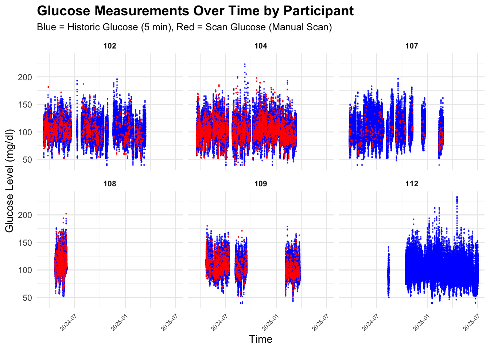
Data Cleaning
Description: Filter out all Columns not Needed and not Historic
# Filter out rows with NA or infinite values in timestamp and glucose levels columns --> filter out all glucose levels, which are not historic glucose levels (which are scan glucose levels)
cleaned_data <- combined_data %>%
filter(!is.na(Timestamp), !is.na(`Glucose levels (mg/dl)`), is.finite(`Glucose levels (mg/dl)`))
head(cleaned_data) Device Serial.Number DeviceTimestamp
1 FreeStyle Libre 3 445B278E-A42C-4AAD-9A7F-133BF591A6A7 11-03-2024 09:07
2 FreeStyle Libre 3 445B278E-A42C-4AAD-9A7F-133BF591A6A7 11-03-2024 09:12
3 FreeStyle Libre 3 445B278E-A42C-4AAD-9A7F-133BF591A6A7 11-03-2024 09:17
4 FreeStyle Libre 3 445B278E-A42C-4AAD-9A7F-133BF591A6A7 11-03-2024 09:22
5 FreeStyle Libre 3 445B278E-A42C-4AAD-9A7F-133BF591A6A7 11-03-2024 09:27
6 FreeStyle Libre 3 445B278E-A42C-4AAD-9A7F-133BF591A6A7 11-03-2024 09:32
Timestamp Record.Type Glucose levels (mg/dl)
1 2024-03-11 09:07:00 0 94
2 2024-03-11 09:12:00 0 90
3 2024-03-11 09:17:00 0 90
4 2024-03-11 09:22:00 0 92
5 2024-03-11 09:27:00 0 97
6 2024-03-11 09:32:00 0 98
Scan glucose levels (mg/dl) Non.numeric.Rapid.Acting.Insulin
1 NA NA
2 NA NA
3 NA NA
4 NA NA
5 NA NA
6 NA NA
Rapid.Acting.Insulin..units. Non.numeric.Food Carbohydrates..grams.
1 NA NA NA
2 NA NA NA
3 NA NA NA
4 NA NA NA
5 NA NA NA
6 NA NA NA
Carbohydrates..servings. Non.numeric.Long.Acting.Insulin
1 NA NA
2 NA NA
3 NA NA
4 NA NA
5 NA NA
6 NA NA
Long.Acting.Insulin.Value..units. Notes Strip.Glucose.mg.dL Ketone.mmol.L
1 NA NA NA
2 NA NA NA
3 NA NA NA
4 NA NA NA
5 NA NA NA
6 NA NA NA
Meal.Insulin..units. Correction.Insulin..units. User.Change.Insulin..units.
1 NA NA NA
2 NA NA NA
3 NA NA NA
4 NA NA NA
5 NA NA NA
6 NA NA NA
ID Glucose (mg/dl)
1 102 94
2 102 90
3 102 90
4 102 92
5 102 97
6 102 98cleaned_data <- cleaned_data %>%
select(-Rapid.Acting.Insulin..units., -Ketone.mmol.L, -Non.numeric.Rapid.Acting.Insulin, -Non.numeric.Food, -Carbohydrates..grams.,-Carbohydrates..servings., -Non.numeric.Long.Acting.Insulin, -Long.Acting.Insulin.Value..units., -Notes, -Strip.Glucose.mg.dL, -Meal.Insulin..units., -Correction.Insulin..units., -User.Change.Insulin..units.)Missings
Description: Check if there are Missings in Glucose Values
# Add a column to indicate missing or non-finite values in Glucose (1 = Missing/Non-finite, 0 = Present)
cleaned_data <- cleaned_data %>%
mutate(
Missing = ifelse(is.na(`Glucose (mg/dl)`) | !is.finite(`Glucose (mg/dl)`), 1, 0)
)
# Check how many columns have the value 1 in Missings
sum(cleaned_data$Missing == 1)[1] 0Description: Create a Table Showing an Overview of Expected Number versus Real Number of Measurements per ID per Month
# Determine the start date for each ID (earliest timestamp)
id_start_dates <- cleaned_data %>%
group_by(ID) %>%
summarise(Start_Date = min(Timestamp, na.rm = TRUE) , .groups = "drop")
# Join the start date back to the main data and filter to include only records from the start date onward
cleaned_data_filtered <- cleaned_data %>%
left_join(id_start_dates, by = "ID") %>%
filter(Timestamp >= Start_Date | is.na(Timestamp)) # include rows where Timestamp is NA as wellDescription: Table with Overview
# Add Month and Year
glucose_monthly_summary <- cleaned_data %>%
mutate(
Month = floor_date(Timestamp, "month")
) %>%
group_by(ID, Month) %>%
summarise(
Measured_Values = n(), # measured values
Days_Observed = n_distinct(as.Date(Timestamp)), # observed days per month
Expected_Values = Days_Observed * 288, # Expected: 288 per day
Missing_Values = Expected_Values - Measured_Values,
Missing_Percentage = round((Missing_Values / Expected_Values) * 100, 2),
.groups = "drop"
)
# Show data set
glucose_monthly_summary# A tibble: 59 × 7
ID Month Measured_Values Days_Observed Expected_Values
<chr> <dttm> <int> <int> <dbl>
1 102 2024-03-01 00:00:00 5896 21 6048
2 102 2024-04-01 00:00:00 8244 31 8928
3 102 2024-05-01 00:00:00 7502 29 8352
4 102 2024-06-01 00:00:00 4898 19 5472
5 102 2024-07-01 00:00:00 2084 9 2592
6 102 2024-08-01 00:00:00 7502 28 8064
7 102 2024-09-01 00:00:00 8019 30 8640
8 102 2024-10-01 00:00:00 6023 23 6624
9 102 2024-11-01 00:00:00 3787 14 4032
10 102 2024-12-01 00:00:00 5947 24 6912
# ℹ 49 more rows
# ℹ 2 more variables: Missing_Values <dbl>, Missing_Percentage <dbl>Description: Add Months to Table when no Measurement Took Place
# claculate month
data_with_month <- cleaned_data %>%
mutate(
Month = floor_date(Timestamp, "month")
)
# firt month per ID
first_months <- data_with_month %>%
group_by(ID) %>%
summarise(First_Month = min(Month), .groups = "drop")
# 13 month from start per ID
full_months_per_id <- first_months %>%
rowwise() %>%
mutate(
Month = list(seq(First_Month, by = "1 month", length.out = 13))
) %>%
unnest(Month) %>%
ungroup()
# count measured values per ID and month
monthly_counts <- data_with_month %>%
group_by(ID, Month) %>%
summarise(
Measured_Values = n(),
Days_Observed = n_distinct(as.Date(Timestamp)),
.groups = "drop"
)
# join with full months
monthly_summary <- full_months_per_id %>%
left_join(monthly_counts, by = c("ID", "Month")) %>%
mutate(
Measured_Values = replace_na(Measured_Values, 0),
Days_Observed = replace_na(Days_Observed, 0),
Expected_Values = days_in_month(Month) * 24 * 12, # 12 measurements per hour with 5min frequence
Missing_Values = Expected_Values - Measured_Values,
Missing_Percentage = ifelse(Expected_Values == 0, NA, round((Missing_Values / Expected_Values) * 100, 2))
)Description: Duplicates were Found, because Missings were Minus -> Remove Duplicates Using cleaned_data_filtered
# check for duplicates first
cleaned_data_filtered %>%
group_by(ID, Timestamp) %>%
filter(n() > 1)# A tibble: 2,940 × 11
# Groups: ID, Timestamp [1,470]
Device Serial.Number DeviceTimestamp Timestamp Record.Type
<chr> <chr> <chr> <dttm> <int>
1 FreeStyle Libr… 445B278E-A42… 17-05-2024 15:… 2024-05-17 15:16:00 0
2 FreeStyle Libr… 445B278E-A42… 17-05-2024 15:… 2024-05-17 15:16:00 0
3 FreeStyle Libr… 445B278E-A42… 17-05-2024 15:… 2024-05-17 15:21:00 0
4 FreeStyle Libr… 445B278E-A42… 17-05-2024 15:… 2024-05-17 15:21:00 0
5 FreeStyle Libr… 445B278E-A42… 17-05-2024 15:… 2024-05-17 15:26:00 0
6 FreeStyle Libr… 445B278E-A42… 17-05-2024 15:… 2024-05-17 15:26:00 0
7 FreeStyle Libr… 445B278E-A42… 17-05-2024 15:… 2024-05-17 15:31:00 0
8 FreeStyle Libr… 445B278E-A42… 17-05-2024 15:… 2024-05-17 15:31:00 0
9 FreeStyle Libr… 445B278E-A42… 17-05-2024 15:… 2024-05-17 15:36:00 0
10 FreeStyle Libr… 445B278E-A42… 17-05-2024 15:… 2024-05-17 15:36:00 0
# ℹ 2,930 more rows
# ℹ 6 more variables: `Glucose levels (mg/dl)` <int>,
# `Scan glucose levels (mg/dl)` <int>, ID <chr>, `Glucose (mg/dl)` <int>,
# Missing <dbl>, Start_Date <dttm>Duplicates
Description: Check for Duplicates
# All Duplicates
dup_timestamps <- cleaned_data_filtered %>%
group_by(ID, Timestamp) %>%
filter(n() > 1) %>%
arrange(ID, Timestamp)Identical/Exact Duplicates
exact_duplicates <- dup_timestamps %>%
group_by(ID, Timestamp, `Glucose (mg/dl)`, Serial.Number) %>%
filter(n() > 1) %>%
ungroup()
exact_duplicates# A tibble: 14 × 11
Device Serial.Number DeviceTimestamp Timestamp Record.Type
<chr> <chr> <chr> <dttm> <int>
1 FreeStyle Libr… 445B278E-A42… 05-08-2024 15:… 2024-08-05 15:34:00 0
2 FreeStyle Libr… 445B278E-A42… 05-08-2024 15:… 2024-08-05 15:34:00 0
3 FreeStyle Libr… 445B278E-A42… 24-11-2024 08:… 2024-11-24 08:06:00 0
4 FreeStyle Libr… 445B278E-A42… 24-11-2024 08:… 2024-11-24 08:06:00 0
5 FreeStyle Libr… 445B278E-A42… 24-11-2024 08:… 2024-11-24 08:11:00 0
6 FreeStyle Libr… 445B278E-A42… 24-11-2024 08:… 2024-11-24 08:11:00 0
7 FreeStyle Libr… DBE03CAB-A7A… 13-12-2024 11:… 2024-12-13 11:05:00 0
8 FreeStyle Libr… DBE03CAB-A7A… 13-12-2024 11:… 2024-12-13 11:05:00 0
9 FreeStyle Libr… DBE03CAB-A7A… 13-12-2024 11:… 2024-12-13 11:55:00 0
10 FreeStyle Libr… DBE03CAB-A7A… 13-12-2024 11:… 2024-12-13 11:55:00 0
11 FreeStyle Libr… 31C3AD69-BB1… 18-06-2024 09:… 2024-06-18 09:54:00 0
12 FreeStyle Libr… 31C3AD69-BB1… 18-06-2024 09:… 2024-06-18 09:54:00 0
13 FreeStyle Libr… 31C3AD69-BB1… 27-10-2024 02:… 2024-10-27 02:56:00 0
14 FreeStyle Libr… 31C3AD69-BB1… 27-10-2024 02:… 2024-10-27 02:56:00 0
# ℹ 6 more variables: `Glucose levels (mg/dl)` <int>,
# `Scan glucose levels (mg/dl)` <int>, ID <chr>, `Glucose (mg/dl)` <int>,
# Missing <dbl>, Start_Date <dttm>Duplicates with Same Serial.Number but Different Glucose Value
conflicting_duplicates <- dup_timestamps %>%
group_by(ID, Timestamp, Serial.Number) %>%
filter(n_distinct(`Glucose (mg/dl)`) > 1) %>%
ungroup()
conflict_summary <- conflicting_duplicates %>%
count(ID, name = "Conflicting_Measurements")
conflict_summary# A tibble: 3 × 2
ID Conflicting_Measurements
<chr> <int>
1 102 132
2 104 44
3 107 22Description: Plotting those Conflicting Duplicates
conflicting_duplicates <- conflicting_duplicates %>%
group_by(ID, Timestamp, Serial.Number) %>%
filter(n_distinct(`Glucose (mg/dl)`) > 1) %>%
mutate(Glucose_Row = row_number()) %>%
ungroup()
# wide-format
conflicts_wide <- conflicting_duplicates %>%
select(ID, Timestamp, Serial.Number, `Glucose (mg/dl)`, Glucose_Row) %>%
pivot_wider(
names_from = Glucose_Row,
values_from = `Glucose (mg/dl)`,
names_prefix = "Glucose_"
) %>%
filter(!is.na(Glucose_1) & !is.na(Glucose_2))
# Scatterplot: Glucose_1 vs Glucose_2
ggplot(conflicts_wide, aes(x = Glucose_1, y = Glucose_2, color = ID)) +
geom_point(alpha = 0.7) +
geom_abline(slope = 1, intercept = 0, linetype = "dashed", color = "gray") +
labs(
title = "Comparison of glucose values in conflicting duplicates \n(same timestamp, same serialnumber)",
x = "Glucose Value 1",
y = "Glucose Value 2",
color = "ID"
) +
theme_minimal()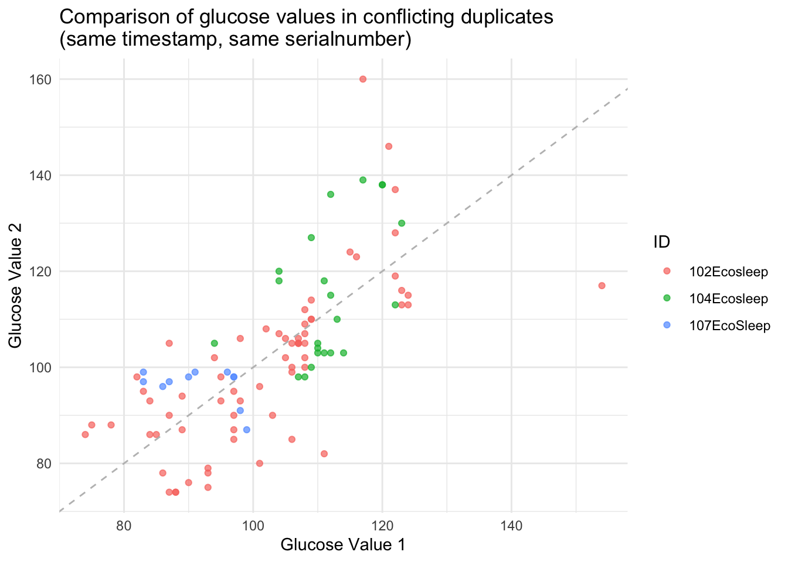
Description: Checking differences of duplicates
conflicts_wide <- conflicts_wide %>%
mutate(duplicate_difference = Glucose_2 - Glucose_1)
ggplot(conflicts_wide, aes(x = duplicate_difference, fill = ID)) +
geom_histogram(binwidth = 1, alpha = 0.6, position = "identity") +
geom_vline(xintercept = 0, linetype = "dashed", color = "gray") +
labs(
title = "Differences between Glucose Values",
x = "Difference: Glucose (mg/dl)",
y = "Number",
fill = "ID"
) +
theme_minimal()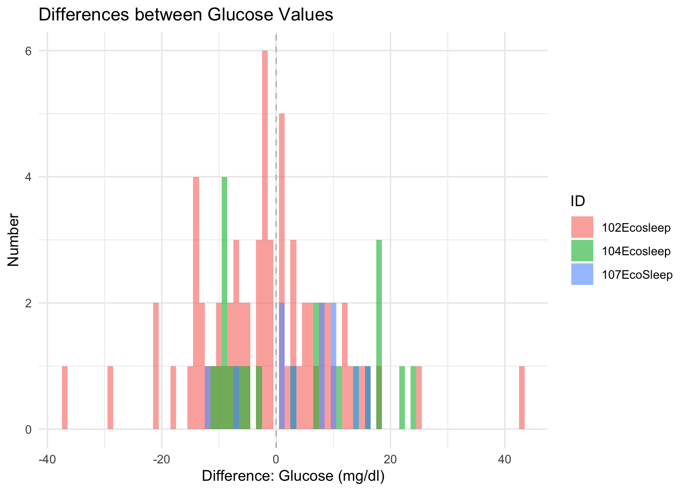
Duplicates with different Serial.Number but same glucose value
duplicates_diff_serial <- dup_timestamps %>%
group_by(ID, Timestamp, `Glucose (mg/dl)`) %>%
filter(n_distinct(Serial.Number) > 1) %>%
ungroup()
summary_diff_serial <- duplicates_diff_serial %>%
count(ID, name = "Same_Glucose_Diff_Serial_Count")
summary_diff_serial# A tibble: 1 × 2
ID Same_Glucose_Diff_Serial_Count
<chr> <int>
1 109 2728Irregular Timestamps: Less than 4min, more than 6min
Description: Calculate Timegaps
time_gaps <- cleaned_data_filtered %>%
arrange(ID, Timestamp) %>%
group_by(ID) %>%
mutate(
Time_Diff_Minutes = as.numeric(difftime(Timestamp, lag(Timestamp), units = "mins"))
) %>%
ungroup()
time_gaps# A tibble: 353,190 × 12
Device Serial.Number DeviceTimestamp Timestamp Record.Type
<chr> <chr> <chr> <dttm> <int>
1 FreeStyle Libr… 445B278E-A42… 11-03-2024 09:… 2024-03-11 09:07:00 0
2 FreeStyle Libr… 445B278E-A42… 11-03-2024 09:… 2024-03-11 09:12:00 0
3 FreeStyle Libr… 445B278E-A42… 11-03-2024 09:… 2024-03-11 09:17:00 0
4 FreeStyle Libr… 445B278E-A42… 11-03-2024 09:… 2024-03-11 09:22:00 0
5 FreeStyle Libr… 445B278E-A42… 11-03-2024 09:… 2024-03-11 09:27:00 0
6 FreeStyle Libr… 445B278E-A42… 11-03-2024 09:… 2024-03-11 09:32:00 0
7 FreeStyle Libr… 445B278E-A42… 11-03-2024 09:… 2024-03-11 09:37:00 0
8 FreeStyle Libr… 445B278E-A42… 11-03-2024 09:… 2024-03-11 09:42:00 0
9 FreeStyle Libr… 445B278E-A42… 11-03-2024 09:… 2024-03-11 09:47:00 0
10 FreeStyle Libr… 445B278E-A42… 11-03-2024 09:… 2024-03-11 09:52:00 0
# ℹ 353,180 more rows
# ℹ 7 more variables: `Glucose levels (mg/dl)` <int>,
# `Scan glucose levels (mg/dl)` <int>, ID <chr>, `Glucose (mg/dl)` <int>,
# Missing <dbl>, Start_Date <dttm>, Time_Diff_Minutes <dbl>Gaps: more than 6min
gaps_over_6min <- time_gaps %>%
filter(!is.na(Time_Diff_Minutes) & Time_Diff_Minutes > 6)
gaps_over_6min# A tibble: 290 × 12
Device Serial.Number DeviceTimestamp Timestamp Record.Type
<chr> <chr> <chr> <dttm> <int>
1 FreeStyle Libr… 445B278E-A42… 14-03-2024 19:… 2024-03-14 19:22:00 0
2 FreeStyle Libr… 445B278E-A42… 25-03-2024 10:… 2024-03-25 10:26:00 0
3 FreeStyle Libr… 445B278E-A42… 29-03-2024 19:… 2024-03-29 19:41:00 0
4 FreeStyle Libr… 445B278E-A42… 01-04-2024 15:… 2024-04-01 15:31:00 0
5 FreeStyle Libr… 445B278E-A42… 04-04-2024 12:… 2024-04-04 12:21:00 0
6 FreeStyle Libr… 445B278E-A42… 09-04-2024 10:… 2024-04-09 10:40:00 0
7 FreeStyle Libr… 445B278E-A42… 11-04-2024 19:… 2024-04-11 19:35:00 0
8 FreeStyle Libr… 445B278E-A42… 11-04-2024 20:… 2024-04-11 20:00:00 0
9 FreeStyle Libr… 445B278E-A42… 11-04-2024 20:… 2024-04-11 20:20:00 0
10 FreeStyle Libr… 445B278E-A42… 11-04-2024 22:… 2024-04-11 22:20:00 0
# ℹ 280 more rows
# ℹ 7 more variables: `Glucose levels (mg/dl)` <int>,
# `Scan glucose levels (mg/dl)` <int>, ID <chr>, `Glucose (mg/dl)` <int>,
# Missing <dbl>, Start_Date <dttm>, Time_Diff_Minutes <dbl>summary_over_6min <- gaps_over_6min %>%
count (ID, name = "Gaps_More_Than_6min")
summary_over_6min_detail <- gaps_over_6min %>%
group_by(ID, Time_Diff_Minutes) %>%
summarise(
Count = n(),
.groups = "drop"
) %>%
arrange(ID, Time_Diff_Minutes)Gaps: between 1 and 3min
gaps_1_to_3_min <- time_gaps %>%
filter(!is.na(Time_Diff_Minutes) & Time_Diff_Minutes >= 1 & Time_Diff_Minutes <= 3)
summary_1_to_3_min <- gaps_1_to_3_min %>%
count(ID, name = "Gaps_Between_1_and_3min")Description: Categorize Time Gaps
time_gaps_plot <- time_gaps %>%
mutate(
Gap_Category = case_when(
is.na(Time_Diff_Minutes) ~ NA_character_,
Time_Diff_Minutes >= 1 & Time_Diff_Minutes <= 3 ~ "Between 1 and 3",
Time_Diff_Minutes > 6 ~ "Over 6 min",
Time_Diff_Minutes == 0 ~ "Duplicate",
TRUE ~ "Normal (4-6 min)"
)
)Plotting those Timegaps
ggplot(time_gaps_plot, aes(x = Timestamp)) +
# Normal (4–6 Minutes) – as Background
geom_point(
data = subset(time_gaps_plot, Gap_Category == "Normal (4-6 min)"),
aes(y = Time_Diff_Minutes),
color = "gray70", alpha = 0.5, size = 1.5
) +
# Gaps > 6 Minutes – red
geom_point(
data = subset(time_gaps_plot, Gap_Category == "Over 6 min"),
aes(y = Time_Diff_Minutes),
color = "red3", alpha = 0.8, size = 1.5
) +
# Gaps 1–3 Minutes – green
geom_point(
data = subset(time_gaps_plot, Gap_Category == "Between 1 and 3"),
aes(y = Time_Diff_Minutes),
color = "green3", alpha = 0.8, size = 1.5
) +
labs(
title = "Time Intervals Between Timestamps per ID",
subtitle = "red = >6min, green = 1–3min, grey = 4–6min",
x = "Time",
y = "Time Interval Between Timestamps (min)"
) +
facet_wrap(~ ID) +
theme_minimal() +
theme(
axis.text.x = element_text(angle = 45, hjust = 1),
strip.text = element_text(face = "bold")
)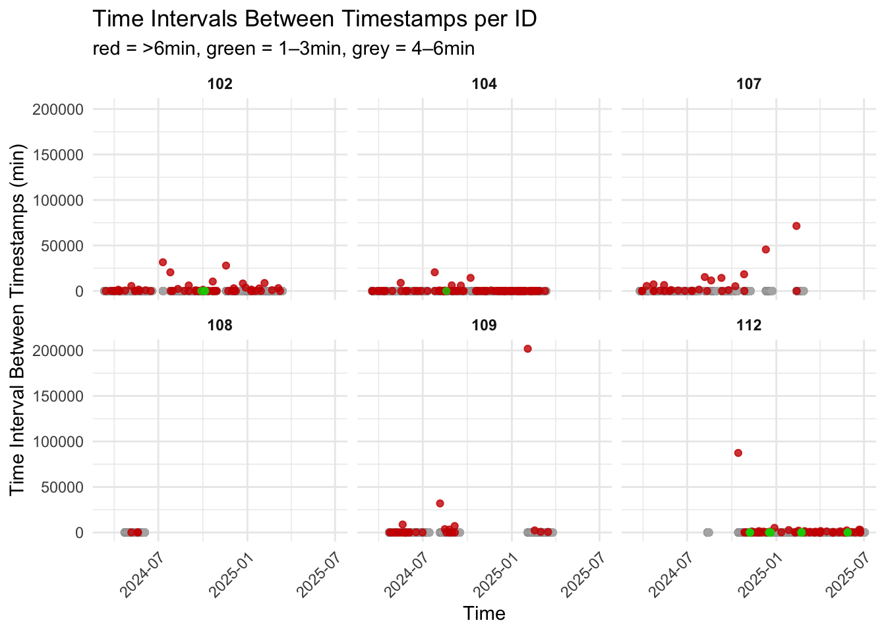
Serial Numbers
Description: Check how many Serial Numbers per ID
serial_number_summary <- cleaned_data_filtered %>%
group_by(ID, Serial.Number) %>%
summarise(
First_Timestamp = min(Timestamp, na.rm = TRUE),
Last_Timestamp = max(Timestamp, na.rm = TRUE),
Count = n(),
.groups = "drop"
) %>%
arrange(ID, First_Timestamp)
serial_number_summary# A tibble: 8 × 5
ID Serial.Number First_Timestamp Last_Timestamp Count
<chr> <chr> <dttm> <dttm> <int>
1 102 445B278E-A42C-4AAD-9A7F-1… 2024-03-11 09:07:00 2025-03-14 14:53:00 77366
2 104 6BEA15A5-6DDE-488C-89DB-4… 2024-03-18 08:54:00 2024-05-10 07:47:00 15178
3 104 DBE03CAB-A7A2-4E06-9617-A… 2024-05-16 13:00:00 2025-03-12 22:46:00 76461
4 107 31C3AD69-BB17-44A8-8489-B… 2024-03-25 09:03:00 2025-02-26 12:39:00 56134
5 108 0175A853-C2D3-46AD-95D7-4… 2024-04-22 10:13:00 2024-06-03 07:50:00 12035
6 109 2dca51a8-cc16-4887-b718-1… 2024-04-22 11:35:00 2024-06-08 08:51:00 11680
7 109 F6C5F96A-7168-44F8-B964-5… 2024-06-03 15:01:00 2025-03-26 11:08:00 34854
8 112 NAGD171-G1255 2024-08-11 22:51:00 2025-07-02 16:04:00 69482Create Dataset without Duplicates
Description: deduplicate: exact Duplicates
cleaned_data_deduplicated <- cleaned_data_filtered %>%
distinct(ID, Timestamp, Serial.Number, `Glucose (mg/dl)`, .keep_all = TRUE)Description: deduplicate: Duplicates with same Timestamp and Glucose Value but not same Serial Number
cleaned_data_deduplicated <- cleaned_data_deduplicated %>%
distinct(ID, Timestamp, `Glucose (mg/dl)`, .keep_all = TRUE)Description: deduplicate: Duplicates with same Timestamp but Different Glucose Value
cleaned_data_deduplicated <- anti_join(
cleaned_data_deduplicated,
conflicting_duplicates,
by = c("ID", "Timestamp", "Serial.Number", "Glucose (mg/dl)")
)Description: Check how many Rows were Deleted
nrow(cleaned_data_filtered) - nrow(cleaned_data_deduplicated)[1] 1569Missings in Duplicated Dataset
Description: per ID, check how many data points there are from the first day of measurement on for one year
# 102
target_id_102 <- "102"
start_date_102 <- as.Date("2024-03-11")
# Filter for this ID and 1-year window
filtered_data_102 <- cleaned_data_deduplicated %>%
filter(
ID == target_id_102,
Timestamp >= start_date_102,
Timestamp < start_date_102 + years(1)
)
# Count number of measurements
measurement_count_102 <- nrow(filtered_data_102)
# 104
target_id_104 <- "104"
start_date_104 <- as.Date("2024-03-18")
# Filter for this ID and 1-year window
filtered_data_104 <- cleaned_data_deduplicated %>%
filter(
ID == target_id_104,
Timestamp >= start_date_104,
Timestamp < start_date_104 + years(1)
)
# Count number of measurements
measurement_count_104 <- nrow(filtered_data_104)
# 107
target_id_107 <- "107"
start_date_107 <- as.Date("2024-03-25")
# Filter for this ID and 1-year window
filtered_data_107 <- cleaned_data_deduplicated %>%
filter(
ID == target_id_107,
Timestamp >= start_date_107,
Timestamp < start_date_107 + years(1)
)
# Count number of measurements
measurement_count_107 <- nrow(filtered_data_107)
# 108
target_id_108 <- "108"
start_date_108 <- as.Date("2024-04-22")
# Filter for this ID and 1-year window
filtered_data_108 <- cleaned_data_deduplicated %>%
filter(
ID == target_id_108,
Timestamp >= start_date_108,
Timestamp < start_date_108 + years(1)
)
# Count number of measurements
measurement_count_108 <- nrow(filtered_data_108)
# 109
target_id_109 <- "109"
start_date_109 <- as.Date("2024-04-22")
# Filter for this ID and 1-year window
filtered_data_109 <- cleaned_data_deduplicated %>%
filter(
ID == target_id_109,
Timestamp >= start_date_109,
Timestamp < start_date_109 + years(1)
)
# Count number of measurements
measurement_count_109 <- nrow(filtered_data_109)
# 112
target_id_112 <- "112"
start_date_112 <- as.Date("2024-08-11")
# Filter for this ID and 1-year window
filtered_data_112 <- cleaned_data_deduplicated %>%
filter(
ID == target_id_112,
Timestamp >= start_date_112,
Timestamp < start_date_112 + years(1)
)
# Count number of measurements
measurement_count_112 <- nrow(filtered_data_112)Time in range
General overview on hyper and hypo glucose per ID
Description: hypo < 70 and hyper > 180
cleaned_data_deduplicated %>%
mutate(
Glucose_Category = case_when(
`Glucose (mg/dl)` < 70 ~ "Hypo",
`Glucose (mg/dl)` > 180 ~ "Hyper",
TRUE ~ "Normal"
)
) %>%
group_by(ID, Glucose_Category) %>%
summarise(Count = n(), .groups = "drop") %>%
group_by(ID) %>%
mutate(Percentage = round(Count / sum(Count) * 100, 2))# A tibble: 17 × 4
# Groups: ID [6]
ID Glucose_Category Count Percentage
<chr> <chr> <int> <dbl>
1 102 Hyper 12 0.02
2 102 Hypo 1544 2
3 102 Normal 75675 98.0
4 104 Hyper 25 0.03
5 104 Hypo 2273 2.48
6 104 Normal 89295 97.5
7 107 Hyper 11 0.02
8 107 Hypo 1202 2.14
9 107 Normal 54897 97.8
10 108 Hyper 4 0.03
11 108 Hypo 327 2.72
12 108 Normal 11704 97.2
13 109 Hypo 279 0.62
14 109 Normal 44891 99.4
15 112 Hyper 58 0.08
16 112 Hypo 2395 3.45
17 112 Normal 67029 96.5 Hyper and Hypo in Day and Night
Description: Adding Day and Night to Dataset: Night from 22h to 6h
cleaned_data_deduplicated <- cleaned_data_deduplicated %>%
mutate(
Hour = hour(Timestamp),
Time_of_Day = case_when(
Hour >= 6 & Hour < 22 ~ "Day",
TRUE ~ "Night"
)
)Description: Hyper and Hypo in Day and Night
cleaned_data_deduplicated %>%
mutate(
Glucose_Category = case_when(
`Glucose (mg/dl)` < 70 ~ "Hypo",
`Glucose (mg/dl)` > 180 ~ "Hyper",
TRUE ~ "Normal"
)
) %>%
group_by(ID, Time_of_Day, Glucose_Category) %>%
summarise(Count = n(), .groups = "drop") %>%
group_by(ID, Time_of_Day) %>%
mutate(Percentage = round(Count / sum(Count) * 100, 2)) %>%
kable()Warning in attr(x, "align"): 'xfun::attr()' is deprecated.
Use 'xfun::attr2()' instead.
See help("Deprecated")Warning in attr(x, "format"): 'xfun::attr()' is deprecated.
Use 'xfun::attr2()' instead.
See help("Deprecated")| ID | Time_of_Day | Glucose_Category | Count | Percentage |
|---|---|---|---|---|
| 102 | Day | Hyper | 12 | 0.02 |
| 102 | Day | Hypo | 683 | 1.33 |
| 102 | Day | Normal | 50695 | 98.65 |
| 102 | Night | Hypo | 861 | 3.33 |
| 102 | Night | Normal | 24980 | 96.67 |
| 104 | Day | Hyper | 18 | 0.03 |
| 104 | Day | Hypo | 1301 | 2.13 |
| 104 | Day | Normal | 59740 | 97.84 |
| 104 | Night | Hyper | 7 | 0.02 |
| 104 | Night | Hypo | 972 | 3.18 |
| 104 | Night | Normal | 29555 | 96.79 |
| 107 | Day | Hyper | 11 | 0.03 |
| 107 | Day | Hypo | 812 | 2.16 |
| 107 | Day | Normal | 36793 | 97.81 |
| 107 | Night | Hypo | 390 | 2.11 |
| 107 | Night | Normal | 18104 | 97.89 |
| 108 | Day | Hyper | 4 | 0.05 |
| 108 | Day | Hypo | 130 | 1.62 |
| 108 | Day | Normal | 7870 | 98.33 |
| 108 | Night | Hypo | 197 | 4.89 |
| 108 | Night | Normal | 3834 | 95.11 |
| 109 | Day | Hypo | 156 | 0.52 |
| 109 | Day | Normal | 29883 | 99.48 |
| 109 | Night | Hypo | 123 | 0.81 |
| 109 | Night | Normal | 15008 | 99.19 |
| 112 | Day | Hyper | 37 | 0.08 |
| 112 | Day | Hypo | 1440 | 3.10 |
| 112 | Day | Normal | 44941 | 96.82 |
| 112 | Night | Hyper | 21 | 0.09 |
| 112 | Night | Hypo | 955 | 4.14 |
| 112 | Night | Normal | 22088 | 95.77 |
Description: Hyper and Hypo Clinically Split
cleaned_data_deduplicated %>%
mutate(
Glucose_Category = case_when(
`Glucose (mg/dl)` < 54 ~ "Very Low", # Severe Hypo
`Glucose (mg/dl)` >= 54 & `Glucose (mg/dl)` < 70 ~ "Low", # Mild Hypo
`Glucose (mg/dl)` >= 70 & `Glucose (mg/dl)` <= 180 ~ "Normal", # In Range
`Glucose (mg/dl)` > 180 & `Glucose (mg/dl)` <= 250 ~ "High", # High
`Glucose (mg/dl)` > 250 ~ "Very High" # Very High
)
) %>%
group_by(ID, Time_of_Day, Glucose_Category) %>%
summarise(Count = n(), .groups = "drop") %>%
group_by(ID, Time_of_Day) %>%
mutate(Percentage = round(Count / sum(Count) * 100, 2)) %>%
kable()Warning in attr(x, "align"): 'xfun::attr()' is deprecated.
Use 'xfun::attr2()' instead.
See help("Deprecated")Warning in attr(x, "format"): 'xfun::attr()' is deprecated.
Use 'xfun::attr2()' instead.
See help("Deprecated")| ID | Time_of_Day | Glucose_Category | Count | Percentage |
|---|---|---|---|---|
| 102 | Day | High | 12 | 0.02 |
| 102 | Day | Low | 643 | 1.25 |
| 102 | Day | Normal | 50695 | 98.65 |
| 102 | Day | Very Low | 40 | 0.08 |
| 102 | Night | Low | 762 | 2.95 |
| 102 | Night | Normal | 24980 | 96.67 |
| 102 | Night | Very Low | 99 | 0.38 |
| 104 | Day | High | 18 | 0.03 |
| 104 | Day | Low | 1148 | 1.88 |
| 104 | Day | Normal | 59740 | 97.84 |
| 104 | Day | Very Low | 153 | 0.25 |
| 104 | Night | High | 7 | 0.02 |
| 104 | Night | Low | 832 | 2.72 |
| 104 | Night | Normal | 29555 | 96.79 |
| 104 | Night | Very Low | 140 | 0.46 |
| 107 | Day | High | 11 | 0.03 |
| 107 | Day | Low | 793 | 2.11 |
| 107 | Day | Normal | 36793 | 97.81 |
| 107 | Day | Very Low | 19 | 0.05 |
| 107 | Night | Low | 334 | 1.81 |
| 107 | Night | Normal | 18104 | 97.89 |
| 107 | Night | Very Low | 56 | 0.30 |
| 108 | Day | High | 4 | 0.05 |
| 108 | Day | Low | 119 | 1.49 |
| 108 | Day | Normal | 7870 | 98.33 |
| 108 | Day | Very Low | 11 | 0.14 |
| 108 | Night | Low | 178 | 4.42 |
| 108 | Night | Normal | 3834 | 95.11 |
| 108 | Night | Very Low | 19 | 0.47 |
| 109 | Day | Low | 123 | 0.41 |
| 109 | Day | Normal | 29883 | 99.48 |
| 109 | Day | Very Low | 33 | 0.11 |
| 109 | Night | Low | 99 | 0.65 |
| 109 | Night | Normal | 15008 | 99.19 |
| 109 | Night | Very Low | 24 | 0.16 |
| 112 | Day | High | 37 | 0.08 |
| 112 | Day | Low | 1295 | 2.79 |
| 112 | Day | Normal | 44941 | 96.82 |
| 112 | Day | Very Low | 145 | 0.31 |
| 112 | Night | High | 21 | 0.09 |
| 112 | Night | Low | 822 | 3.56 |
| 112 | Night | Normal | 22088 | 95.77 |
| 112 | Night | Very Low | 133 | 0.58 |
Create a Graph
Description:: Create Color Code
glucose_category_colors <- c(
"Very Low" = "#990000", # dark red
"Low" = "#e60000", # lighter red
"Normal" = "#228B22", # green
"High" = "#FFA500", # orange
"Very High" = "#CC5500" # dark orange
)Description: Add glucose Category to Dataset
cleaned_data_deduplicated <- cleaned_data_deduplicated %>%
mutate(
Glucose_Category = case_when(
`Glucose (mg/dl)` < 54 ~ "Very Low",
`Glucose (mg/dl)` >= 54 & `Glucose (mg/dl)` < 70 ~ "Low",
`Glucose (mg/dl)` >= 70 & `Glucose (mg/dl)` <= 180 ~ "Normal",
`Glucose (mg/dl)` > 180 & `Glucose (mg/dl)` <= 250 ~ "High",
`Glucose (mg/dl)` > 250 ~ "Very High"
)
)Description: Create Summary of Time in Range
time_in_range_summary <- cleaned_data_deduplicated %>%
mutate(
Glucose_Category = case_when(
`Glucose (mg/dl)` < 54 ~ "Very Low",
`Glucose (mg/dl)` >= 54 & `Glucose (mg/dl)` < 70 ~ "Low",
`Glucose (mg/dl)` >= 70 & `Glucose (mg/dl)` <= 180 ~ "Normal",
`Glucose (mg/dl)` > 180 & `Glucose (mg/dl)` <= 250 ~ "High",
`Glucose (mg/dl)` > 250 ~ "Very High"
)
) %>%
group_by(ID, Time_of_Day, Glucose_Category) %>%
summarise(Count = n(), .groups = "drop") %>%
group_by(ID, Time_of_Day) %>%
mutate(Percentage = round(Count / sum(Count) * 100, 1))Description: Create Bar
category_colors <- c(
"Very Low" = "#990000",
"Low" = "#e60000",
"Normal" = "#228B22",
"High" = "#FFA500",
"Very High" = "#CC5500"
)
ggplot(time_in_range_summary, aes(x = Time_of_Day, y = Percentage, fill = Glucose_Category)) +
geom_bar(stat = "identity", position = "stack") +
scale_fill_manual(values = category_colors) +
facet_wrap(~ ID, ncol = 2) +
labs(
title = "Glucose Ranges by Time of Day",
x = "Time of Day",
y = "Percentage",
fill = "Glucose Category"
) +
theme_minimal() +
theme(
legend.position = "top",
strip.text = element_text(face = "bold")
)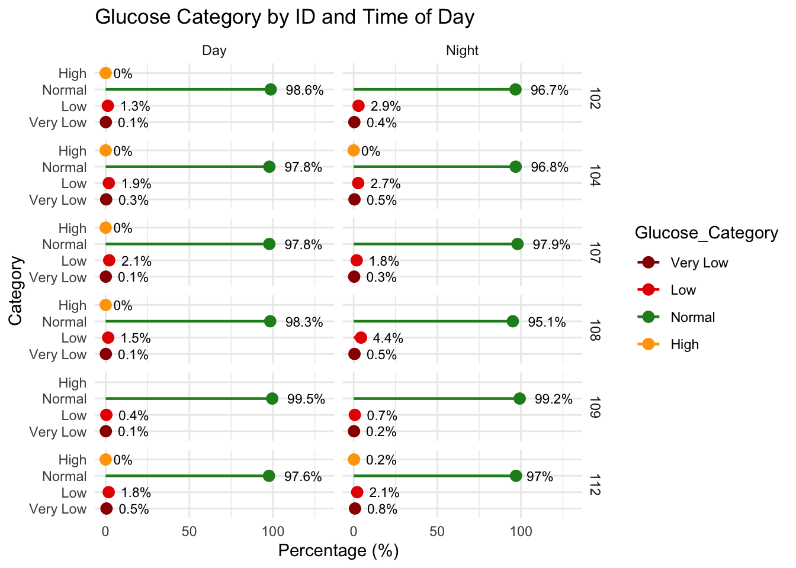
Description: Create a Different Graph
time_in_range_summary <- time_in_range_summary %>%
mutate(Glucose_Category = factor(
Glucose_Category,
levels = c("Very Low", "Low", "Normal", "High", "Very High")
))
ggplot(time_in_range_summary, aes(x = Glucose_Category, y = Percentage, color = Glucose_Category)) +
geom_segment(aes(xend = Glucose_Category, y = 0, yend = Percentage), size = 0.8) +
geom_point(size = 3) +
geom_text(
aes(label = paste0(Percentage, "%")),
hjust = -0.4,
size = 3,
color = "black"
) +
scale_color_manual(values = category_colors) +
facet_grid(ID ~ Time_of_Day) +
coord_flip(ylim = c(0, 130)) + # <- Add more space beyond 100%
labs(
title = "Glucose Category by ID and Time of Day",
x = "Category",
y = "Percentage (%)"
) +
theme_minimal()Warning: Using `size` aesthetic for lines was deprecated in ggplot2 3.4.0.
ℹ Please use `linewidth` instead.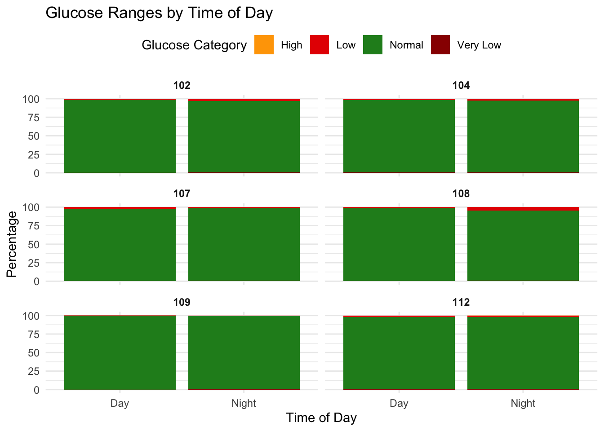
Description: Plot a donut chart
donut_data <- time_in_range_summary %>%
filter(ID == "102", Time_of_Day == "Night")
ggplot(donut_data, aes(x = 2, y = Percentage, fill = Glucose_Category)) +
geom_bar(stat = "identity", width = 1, color = "white") +
coord_polar(theta = "y") +
xlim(0.5, 2.5) + # creates the hole (donut)
scale_fill_manual(values = category_colors) +
geom_text(aes(label = paste0(Percentage, "%")),
position = position_stack(vjust = 0.5), size = 3, color = "black") +
theme_void() +
labs(title = "Glucose Distribution (Night) – 102",
fill = "Glucose Category") +
theme(legend.position = "right")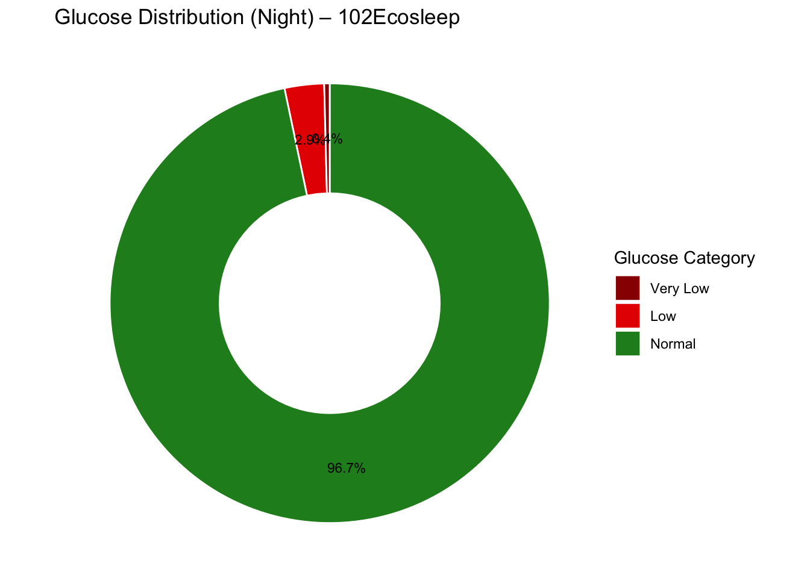
Stacked Chart
Description: Prepare Dataset
stacked_chart <- cleaned_data_deduplicated %>%
filter(!is.na(Glucose_Category)) %>%
mutate(
Time = floor_date(Timestamp, "5 minutes"),
TimeOnly = format(Time, "%H:%M:%S"),
# POSIXct with reference date
TimeOnly_POSIX = as.POSIXct(TimeOnly, format = "%H:%M:%S", tz = "UTC")
) %>%
count(ID, TimeOnly_POSIX, Glucose_Category) %>%
group_by(ID, TimeOnly_POSIX) %>%
mutate(percentage = n / sum(n)) %>%
ungroup() %>%
complete(ID, TimeOnly_POSIX, Glucose_Category, fill = list(n = 0, percentage = 0)) %>%
mutate(
Glucose_Category = factor(Glucose_Category, levels = c("High", "Normal", "Low", "Very Low"))
)Description: Plot for One ID
ggplot(stacked_chart %>% filter(ID == "102"),
aes(x = TimeOnly_POSIX, y = percentage, fill = Glucose_Category)) +
geom_area() +
scale_x_datetime(date_labels = "%H:%M") +
theme_minimal() +
theme(axis.text.x = element_text(angle = 45, hjust = 1))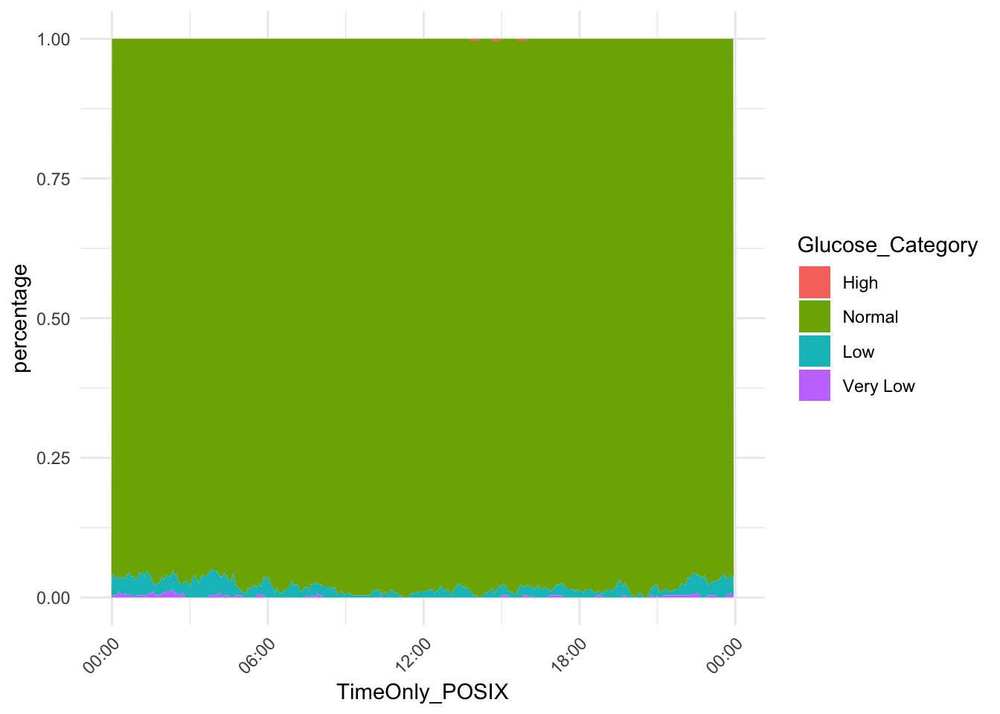
Description: Plot for all IDs
ggplot(stacked_chart,
aes(x = TimeOnly_POSIX, y = percentage, fill = Glucose_Category)) +
geom_area() +
scale_x_datetime(date_labels = "%H:%M") +
facet_wrap(~ ID, ncol = 2) +
theme_minimal() +
theme(axis.text.x = element_text(angle = 45, hjust = 1))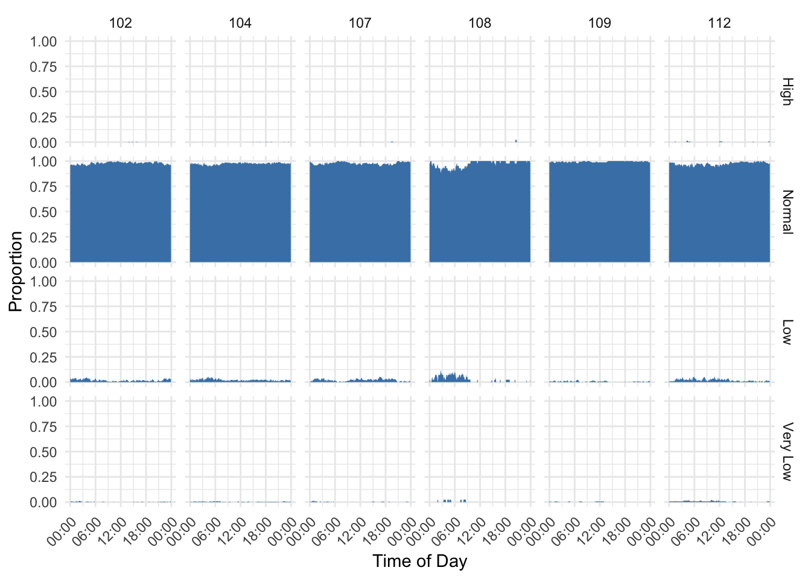
Description: Stacked Chart with Scientific Colour Palette
if (!requireNamespace("scico", quietly = TRUE)) {
install.packages("scico")
}
library(scico)# category levels
cats <- c("High","Normal","Low", "Very Low")
# discrete colours from Scientific colour map
pal <- setNames(scico(length(cats), palette = "vik"), cats)
# build data
stacked_chart <- cleaned_data_deduplicated %>%
filter(!is.na(Glucose_Category)) %>%
mutate(
Time = floor_date(Timestamp, "5 minutes"),
TimeOnly = format(Time, "%H:%M:%S"),
TimeOnly_POSIX = as.POSIXct(TimeOnly, format = "%H:%M:%S", tz = "UTC")
) %>%
count(ID, TimeOnly_POSIX, Glucose_Category) %>%
group_by(ID, TimeOnly_POSIX) %>%
mutate(percentage = n / sum(n)) %>%
ungroup() %>%
complete(ID, TimeOnly_POSIX, Glucose_Category,
fill = list(n = 0, percentage = 0)) %>%
mutate(
Glucose_Category = factor(Glucose_Category, levels = cats)
) %>%
arrange(ID, TimeOnly_POSIX, Glucose_Category) # ensure proper draw order
# plot with discrete Scientific colours
ggplot(stacked_chart,
aes(x = TimeOnly_POSIX, y = percentage, fill = Glucose_Category)) +
geom_area() + # default is stacked
scale_fill_manual(values = pal, drop = FALSE) + # DISCRETE palette
scale_x_datetime(date_labels = "%H:%M") +
facet_wrap(~ ID, ncol = 2) +
labs(x = "Time", y = "Percentage", fill = "Glucose Category") +
theme_minimal() +
theme(axis.text.x = element_text(angle = 45, hjust = 1))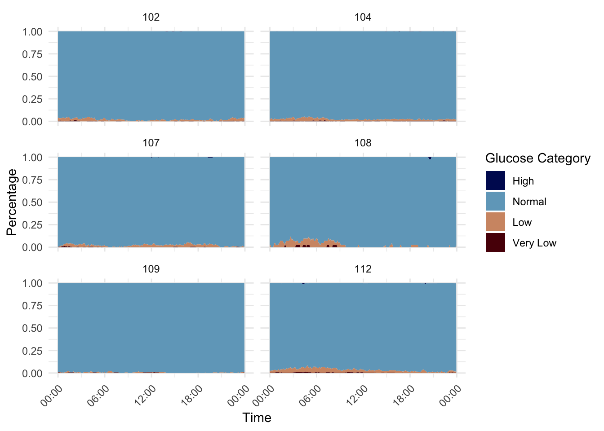
Improved visualization of High, Low and Very Low
Description: Facet per Category and ID
ggplot(stacked_chart,
aes(x = TimeOnly_POSIX, y = percentage)) +
geom_area(fill = "steelblue") +
facet_grid(Glucose_Category ~ ID) + # Facet per Category & ID
scale_x_datetime(date_labels = "%H:%M") +
theme_minimal() +
theme(axis.text.x = element_text(angle = 45, hjust = 1)) +
labs(y = "Proportion", x = "Time of Day")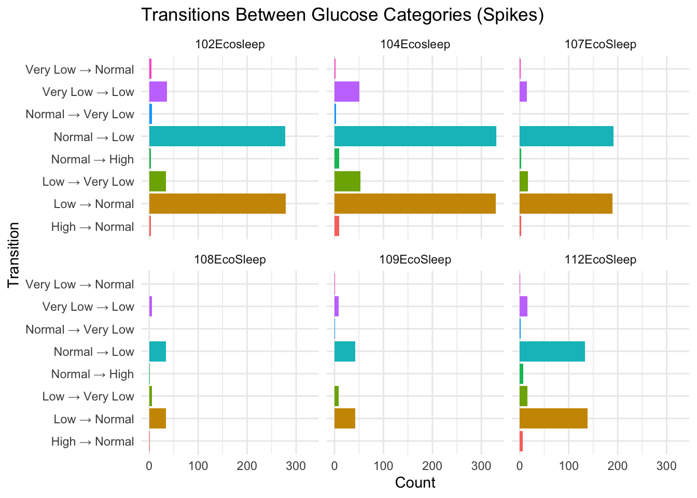
Description: log10
ggplot(stacked_chart,
aes(x = TimeOnly_POSIX, y = percentage, fill = Glucose_Category)) +
geom_area() +
scale_x_datetime(date_labels = "%H:%M") +
scale_y_log10()+
facet_wrap(~ ID, ncol = 2) +
theme_minimal() +
theme(axis.text.x = element_text(angle = 45, hjust = 1))Warning in scale_y_log10(): log-10 transformation introduced infinite values.Warning: Removed 3019 rows containing non-finite outside the scale range
(`stat_align()`).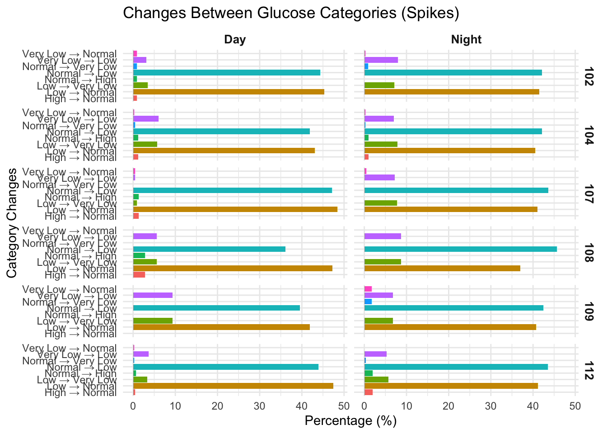
Description: Show lower 25% only
# Reorder "High" to make visualization possible
stacked_chart_25 <- stacked_chart %>%
mutate(
Glucose_Category = factor(Glucose_Category, levels = c("Normal", "High", "Low", "Very Low")))
ggplot(stacked_chart_25,
aes(x = TimeOnly_POSIX, y = percentage, fill = Glucose_Category)) +
geom_area() +
scale_x_datetime(date_labels = "%H:%M") +
coord_cartesian(ylim = c(0, 0.25)) + # only show until 25%
facet_wrap(~ ID, ncol = 2) +
labs(y = "Proportion", x = "Time of Day") +
theme_minimal() +
theme(axis.text.x = element_text(angle = 45, hjust = 1)) +
scale_y_continuous(labels = scales::percent_format(accuracy = 1))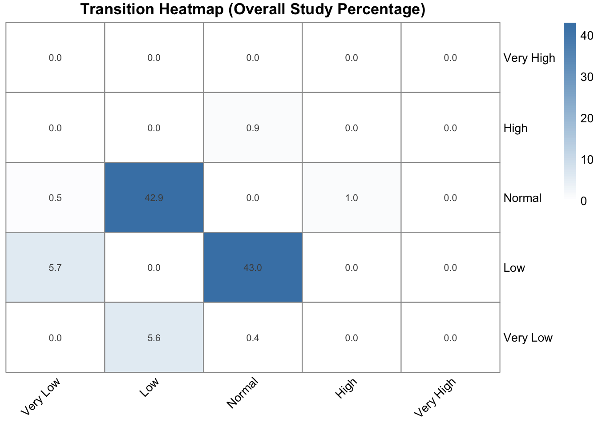
Description: Show 25% with Scientific Colour Map
stacked_chart_25 <- stacked_chart %>%
mutate(
Glucose_Category = factor(Glucose_Category, levels = c("Normal", "High", "Low", "Very Low")))
ggplot(stacked_chart_25,
aes(x = TimeOnly_POSIX, y = percentage, fill = Glucose_Category)) +
geom_area() +
scale_fill_manual(values = pal, drop = FALSE)+
scale_x_datetime(date_labels = "%H:%M") +
coord_cartesian(ylim = c(0, 0.25)) + # only show until 25%
facet_wrap(~ ID, ncol = 2) +
labs(y = "Proportion", x = "Time of Day") +
theme_minimal() +
theme(axis.text.x = element_text(angle = 45, hjust = 1)) +
scale_y_continuous(labels = scales::percent_format(accuracy = 1))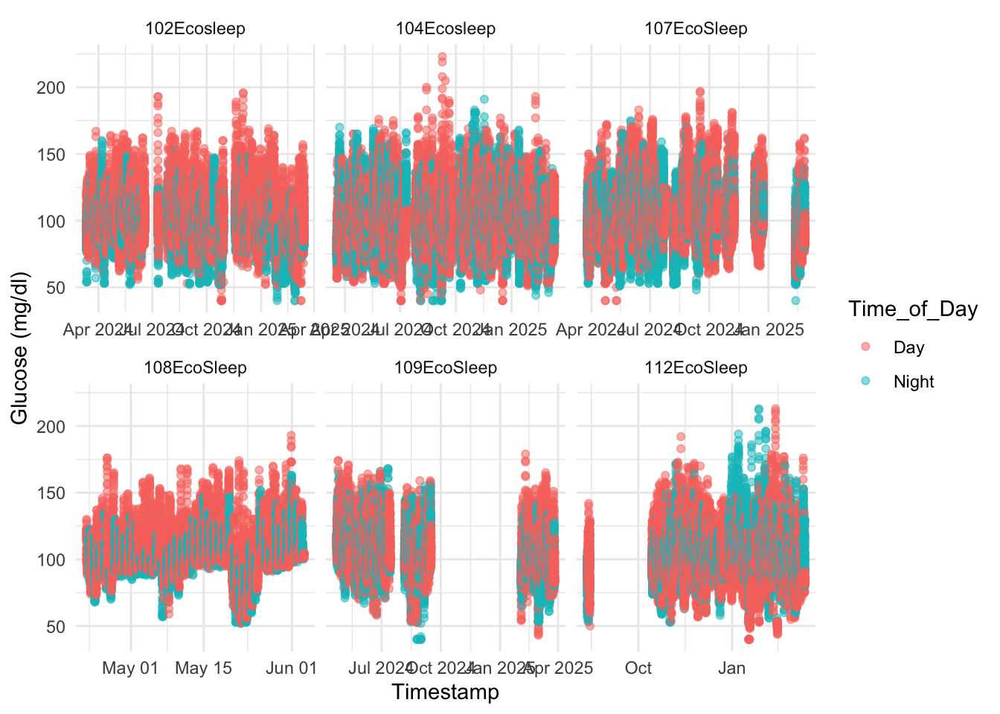
Spike Analysis
Category Change
Description: How often does the Glucose Value Change from one Category to Another
# Prepare data
spike_analysis <- cleaned_data_deduplicated %>%
arrange(ID, Timestamp) %>%
mutate(
Glucose_Category = case_when(
`Glucose (mg/dl)` < 54 ~ "Very Low",
`Glucose (mg/dl)` >= 54 & `Glucose (mg/dl)` < 70 ~ "Low",
`Glucose (mg/dl)` >= 70 & `Glucose (mg/dl)` <= 180 ~ "Normal",
`Glucose (mg/dl)` > 180 & `Glucose (mg/dl)` <= 250 ~ "High",
`Glucose (mg/dl)` > 250 ~ "Very High"
),
Prev_Category = lag(Glucose_Category),
Prev_ID = lag(ID),
Prev_Time_of_Day = lag(Time_of_Day),
Spike = Glucose_Category != Prev_Category & ID == Prev_ID & Time_of_Day == Prev_Time_of_Day
) %>%
filter(Spike) %>%
mutate(
From = Prev_Category,
To = Glucose_Category
) %>%
mutate(
Spike_Direction = paste0(Prev_Category, " → ", Glucose_Category)
) %>%
group_by(ID, Time_of_Day, Spike_Direction, From, To) %>%
summarise(Spike_Count = n(), .groups = "drop")
spike_percent <- spike_analysis %>%
group_by(ID, Time_of_Day) %>%
mutate(
Total_Spikes = sum(Spike_Count),
Percentage = round(100 * Spike_Count / Total_Spikes, 1)
) %>%
ungroup()Description: Plot the Category Change in Percent
ggplot(spike_percent, aes(x = Spike_Direction, y = Percentage, fill = Spike_Direction)) +
geom_col() +
coord_flip() +
facet_grid(ID ~ Time_of_Day) + # Rows = IDs, Columns = Day/Night
labs(
title = "Changes Between Glucose Categories (Spikes)",
x = "Category Changes",
y = "Percentage (%)"
) +
theme_minimal() +
theme(
legend.position = "none",
strip.text = element_text(face = "bold", size = 10)
)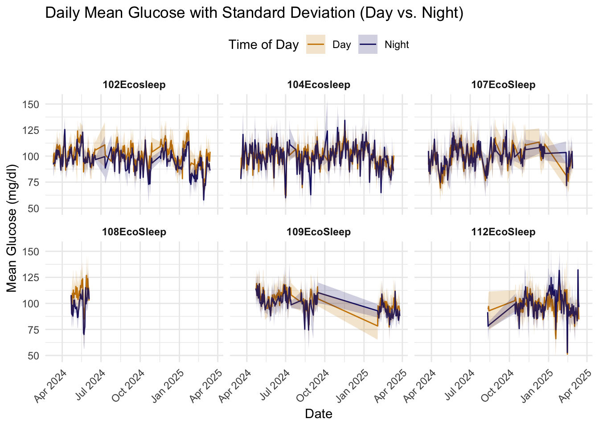
Description: Plot the Category Change in Count
ggplot(spike_analysis, aes(x = Spike_Direction, y = Spike_Count, fill = Spike_Direction)) +
geom_col() +
facet_wrap(~ ID) +
coord_flip() +
labs(
title = "Changes Between Glucose Categories (Spikes)",
x = "Category Change",
y = "Count"
) +
theme_minimal() +
theme(legend.position = "none")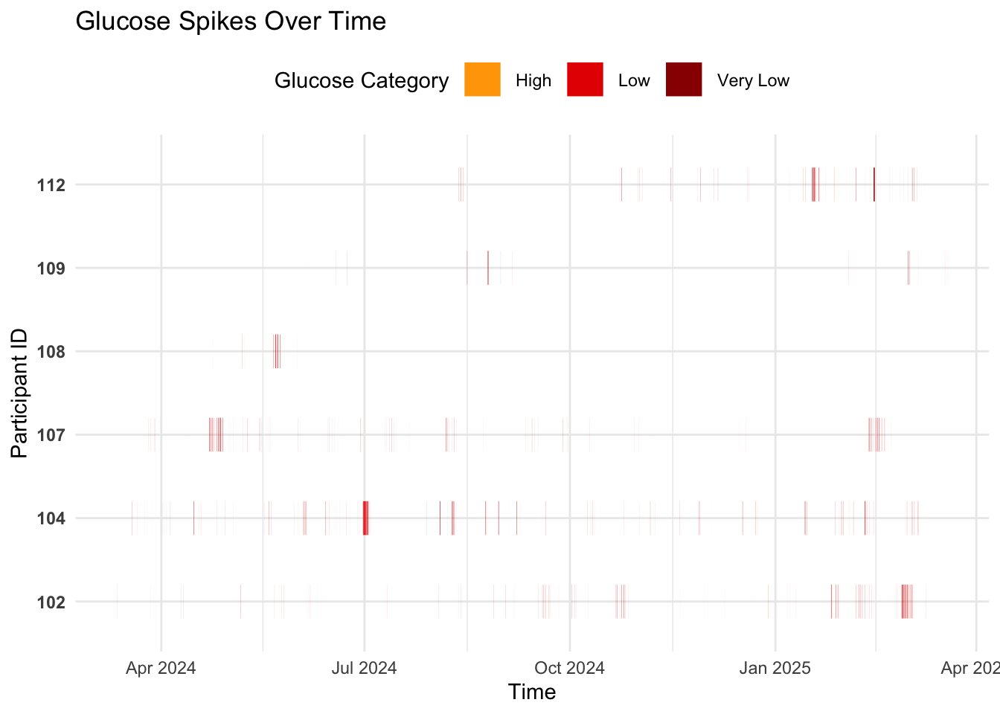
Description: Create a heat map
category_levels <- c("Very Low", "Low", "Normal", "High", "Very High")
spike_percent <- spike_percent %>%
mutate(
From = factor(From, levels = category_levels),
To = factor(To, levels = category_levels)
)
ggplot(spike_percent, aes(x = To, y = From, fill = Percentage)) +
geom_tile(color = "white") +
geom_text(aes(label = Percentage), size = 3) +
facet_grid(ID ~ Time_of_Day) +
scale_fill_gradient(low = "white", high = "steelblue") +
labs(
title = "Transition Heatmap Between Glucose Categories",
x = "Current Category",
y = "Previous Category",
fill = "Percent (%)"
) +
theme_minimal() +
theme(
axis.text.x = element_text(angle = 45, hjust = 1),
strip.text = element_text(face = "bold")
)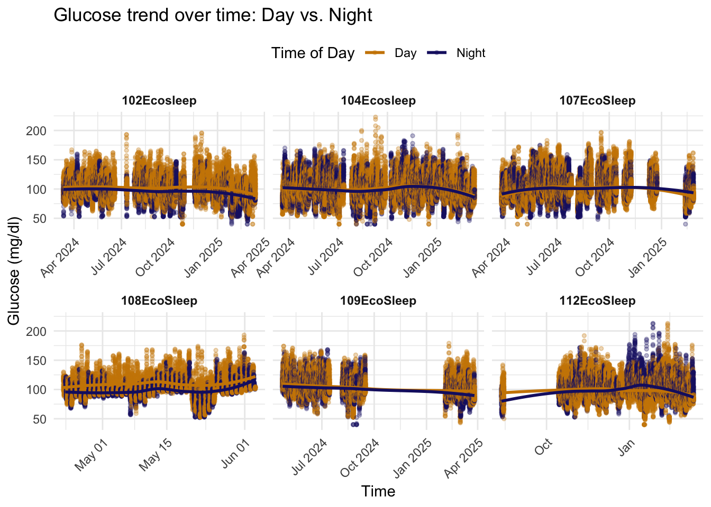
Description: Create a Heatmap with heatmap() Function and for all IDs
library(pheatmap)
# Summarize raw counts, not percentages
overall_data <- spike_analysis %>%
separate(Spike_Direction, into = c("From", "To"), sep = " → ") %>%
group_by(From, To) %>%
summarise(Total_Spike_Count = sum(Spike_Count), .groups = "drop")
# Total transitions for percentage calculation
total_spikes_all <- sum(overall_data$Total_Spike_Count)
# Compute true overall percentage
overall_data <- overall_data %>%
mutate(
Percentage = round(100 * Total_Spike_Count / total_spikes_all, 1),
From = factor(From, levels = category_levels),
To = factor(To, levels = category_levels)
)
# Create matrix for pheatmap with reversed row order
heatmap_matrix <- matrix(
0,
nrow = length(category_levels),
ncol = length(category_levels),
dimnames = list(From = rev(category_levels), To = category_levels)
)
# Populate matrix
for (i in seq_len(nrow(overall_data))) {
row <- overall_data$From[i]
col <- overall_data$To[i]
val <- overall_data$Percentage[i]
heatmap_matrix[as.character(row), as.character(col)] <- val
}
# Plot with correct percentages: using pheatmap() function to be able to integrate percentages
pheatmap(
heatmap_matrix,
display_numbers = TRUE,
number_format = "%.1f",
color = colorRampPalette(c("white", "steelblue"))(100),
cluster_rows = FALSE,
cluster_cols = FALSE,
main = "Category Change (Overall Study Percentage)",
angle_col = 45
)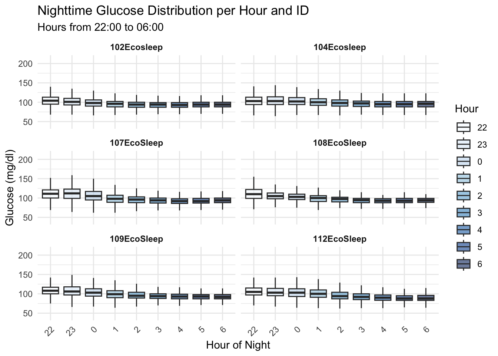
Spike Duration
spike_durations <- cleaned_data_deduplicated %>%
arrange(ID, Timestamp) %>%
mutate(
Glucose_Category = case_when(
`Glucose (mg/dl)` < 54 ~ "Very Low",
`Glucose (mg/dl)` >= 54 & `Glucose (mg/dl)` < 70 ~ "Low",
`Glucose (mg/dl)` >= 70 & `Glucose (mg/dl)` <= 180 ~ "Normal",
`Glucose (mg/dl)` > 180 & `Glucose (mg/dl)` <= 250 ~ "High",
`Glucose (mg/dl)` > 250 ~ "Very High"
),
Category_Change = Glucose_Category != lag(Glucose_Category) | ID != lag(ID)
) %>%
# Group consecutive identical categories per ID
mutate(Spike_Group = cumsum(replace_na(Category_Change, TRUE))) %>%
group_by(ID, Spike_Group) %>%
summarise(
Start = min(Timestamp),
End = max(Timestamp),
Duration_min = as.numeric(difftime(max(Timestamp), min(Timestamp), units = "mins")),
Category = first(Glucose_Category),
.groups = "drop"
) %>%
# Filter for spikes only (exclude normal periods)
filter(Category != "Normal")
# View spike durations
head(spike_durations)# A tibble: 6 × 6
ID Spike_Group Start End Duration_min
<chr> <int> <dttm> <dttm> <dbl>
1 102 2 2024-03-12 02:22:00 2024-03-12 02:52:00 30
2 102 4 2024-03-25 20:21:00 2024-03-25 20:21:00 0
3 102 6 2024-03-27 01:11:00 2024-03-27 01:26:00 15
4 102 8 2024-03-28 16:41:00 2024-03-28 16:46:00 5
5 102 10 2024-04-06 08:01:00 2024-04-06 08:01:00 0
6 102 12 2024-04-09 17:20:00 2024-04-09 17:55:00 35
# ℹ 1 more variable: Category <chr>Description: Plot the Statistics of Spike Duration
# Overall statistics
spike_stats <- spike_durations %>%
group_by(Category) %>%
summarise(
Count = n(),
Median_Duration = median(Duration_min),
Mean_Duration = round(mean(Duration_min), 1),
Max_Duration = max(Duration_min),
Min_Duration = min(Duration_min),
.groups = "drop"
)
# Statistics per ID
spike_subject_stats <- spike_durations %>%
group_by(ID, Category) %>%
summarise(
Episodes = n(),
Total_Duration = sum(Duration_min),
Median_Duration = median(Duration_min),
.groups = "drop"
)Description: Plot the Frequency of Glucose Spike Duration
ggplot(spike_durations, aes(x = Duration_min, fill = Category)) +
geom_bar(position = "stack") +
facet_wrap(~ ID) +
labs(
title = "Frequency of Glucose Spike Durations by Category",
x = "Spike Duration (minutes)",
y = "Count",
fill = "Glucose Category"
) +
coord_cartesian(xlim = c(0, 200)) + # scale only until 200, for the most frequent durations
theme_minimal() +
theme(
axis.text.x = element_text(angle = 45, hjust = 1)
)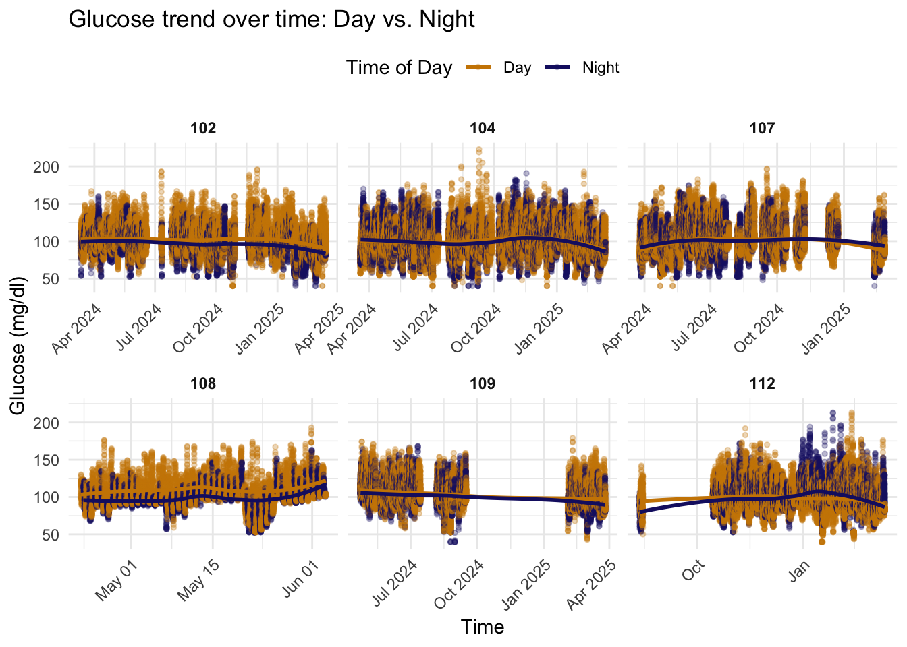
Description: Plot the Spikes over time
ggplot(spike_durations, aes(x = Start, xend = End, y = ID, yend = ID, color = Category)) +
geom_segment(size = 8) +
scale_color_manual(values = category_colors) +
labs(
title = "Glucose Spikes Over Time",
x = "Time",
y = "Participant ID",
color = "Glucose Category"
) +
theme_minimal() +
theme(
legend.position = "top",
axis.text.y = element_text(face = "bold")
)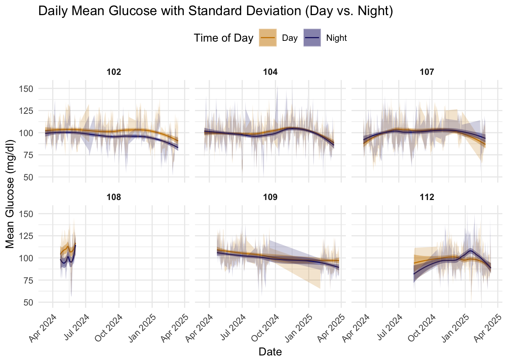
Day and Night Analysis
Defining Day and Night
cleaned_data_deduplicated <- cleaned_data_deduplicated %>%
mutate(
Hour = hour(Timestamp),
Time_of_Day = case_when(
Hour >= 6 & Hour < 22 ~ "Day",
TRUE ~ "Night"
)
)Plotting Day vs Night
Description: Plot 1
ggplot(cleaned_data_deduplicated, aes(x = Timestamp, y = `Glucose (mg/dl)`, color = Time_of_Day)) +
geom_point(alpha = 0.5, size = 0.8) +
facet_wrap(~ ID) +
labs(color = "Time of Day", title = "Glucose Values over Time: Day vs. Night")+
theme_minimal()+
theme(
legend.position = "top",
strip.text = element_text(face = "bold"),
axis.text.x = element_text(angle = 45, hjust = 1)
)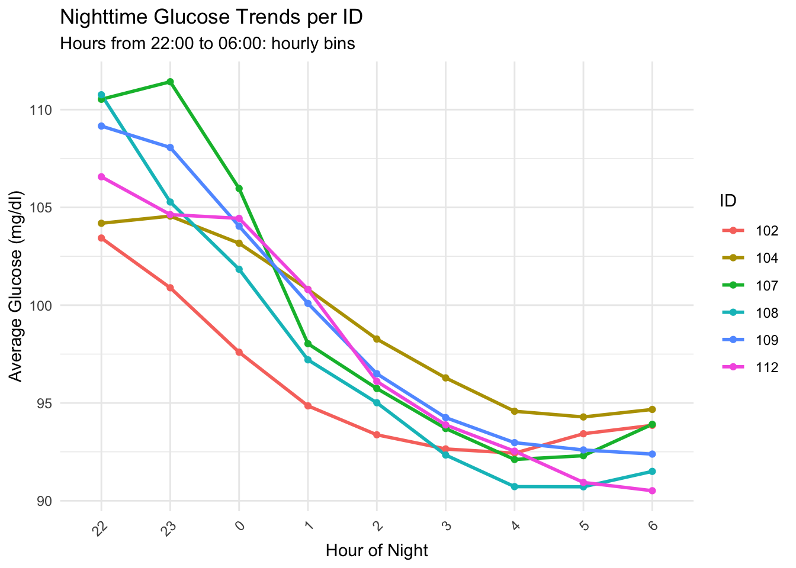
ggplot(cleaned_data_deduplicated, aes(x = Time_of_Day, y = `Glucose (mg/dl)`, fill = Time_of_Day)) +
geom_boxplot(alpha = 0.5) +
facet_wrap(~ ID) +
theme_minimal() +
labs(title = "Glucose Values: Day vs. Night",fill = "Time of Day" , x = "", y = "Glucose (mg/dl)")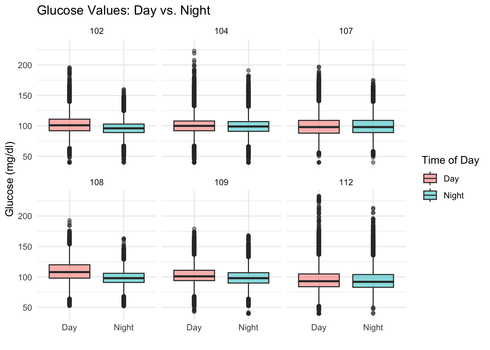
Description: Table for Numbers of Boxplot
glucose_summary_table <- cleaned_data_deduplicated %>%
group_by(ID, Time_of_Day) %>%
summarise(
n = n(),
Median = median(`Glucose (mg/dl)`, na.rm = TRUE),
Mean = round(mean(`Glucose (mg/dl)`, na.rm = TRUE), 1),
Min = min(`Glucose (mg/dl)`, na.rm = TRUE),
Q1 = quantile(`Glucose (mg/dl)`, 0.25, na.rm = TRUE),
Q3 = quantile(`Glucose (mg/dl)`, 0.75, na.rm = TRUE),
Max = max(`Glucose (mg/dl)`, na.rm = TRUE),
.groups = "drop"
)
print(glucose_summary_table)# A tibble: 12 × 9
ID Time_of_Day n Median Mean Min Q1 Q3 Max
<chr> <chr> <int> <dbl> <dbl> <int> <dbl> <dbl> <int>
1 102 Day 51390 101 102. 40 92 111 196
2 102 Night 25841 96 96.1 40 89 103 160
3 104 Day 61059 100 100. 40 92 108 223
4 104 Night 30534 99 99.5 40 91 107 191
5 107 Day 37616 98 99.8 40 88 109 197
6 107 Night 18494 98 100 40 89 109 175
7 108 Day 8004 108 110. 53 98 120 193
8 108 Night 4031 98 98 52 91 106 163
9 109 Day 30039 101 103. 43 94 111 179
10 109 Night 15131 98 99.7 40 90 107 168
11 112 Day 46418 93 95.7 40 84 105 233
12 112 Night 23064 92 94.4 40 83 104 213Description: Plot 2
ggplot(cleaned_data_deduplicated, aes(x = Timestamp, y = `Glucose (mg/dl)`, color = Time_of_Day)) +geom_point(alpha = 0.3, size = 1) +
geom_smooth(method = "loess", se = FALSE) +
facet_wrap(~ ID) +
scale_color_manual(values = c("Day" = "orange3", "Night" = "midnightblue")) +
labs(
title = "Glucose trend over time: Day vs. Night",
x = "Time",
y = "Glucose (mg/dl)",
color = "Time of Day"
) +
theme_minimal() +
theme(
legend.position = "top",
strip.text = element_text(face = "bold"),
axis.text.x = element_text(angle = 45, hjust = 1)
)`geom_smooth()` using formula = 'y ~ x'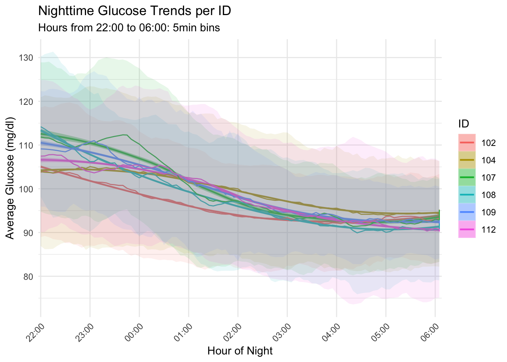
Description: Plot 3: Daily mean over time + standard deviation
# Create dataset with mean and standard deviation
cleaned_summary <- cleaned_data_deduplicated %>%
mutate(
Date = as.Date(Timestamp) # date of day
) %>%
group_by(ID, Time_of_Day, Date) %>%
summarise(
mean_glucose = mean(`Glucose (mg/dl)`, na.rm = TRUE),
sd_glucose = sd(`Glucose (mg/dl)`, na.rm = TRUE),
.groups = "drop"
)
# Create Plot
ggplot(cleaned_summary, aes(x = Date, y = mean_glucose, color = Time_of_Day, fill = Time_of_Day)) +
geom_smooth(size = 0.5) +
geom_ribbon(aes(ymin = mean_glucose - sd_glucose, ymax = mean_glucose + sd_glucose), alpha = 0.2, color = NA) +
facet_wrap(~ ID) +
scale_color_manual(values = c("Day" = "orange3", "Night" = "midnightblue")) +
scale_fill_manual(values = c("Day" = "orange3", "Night" = "midnightblue")) +
labs(
title = "Daily Mean Glucose with Standard Deviation (Day vs. Night)",
x = "Date",
y = "Mean Glucose (mg/dl)",
color = "Time of Day",
fill = "Time of Day"
) +
theme_minimal() +
theme(
legend.position = "top",
strip.text = element_text(face = "bold"),
axis.text.x = element_text(angle = 45, hjust = 1)
)`geom_smooth()` using method = 'loess' and formula = 'y ~ x'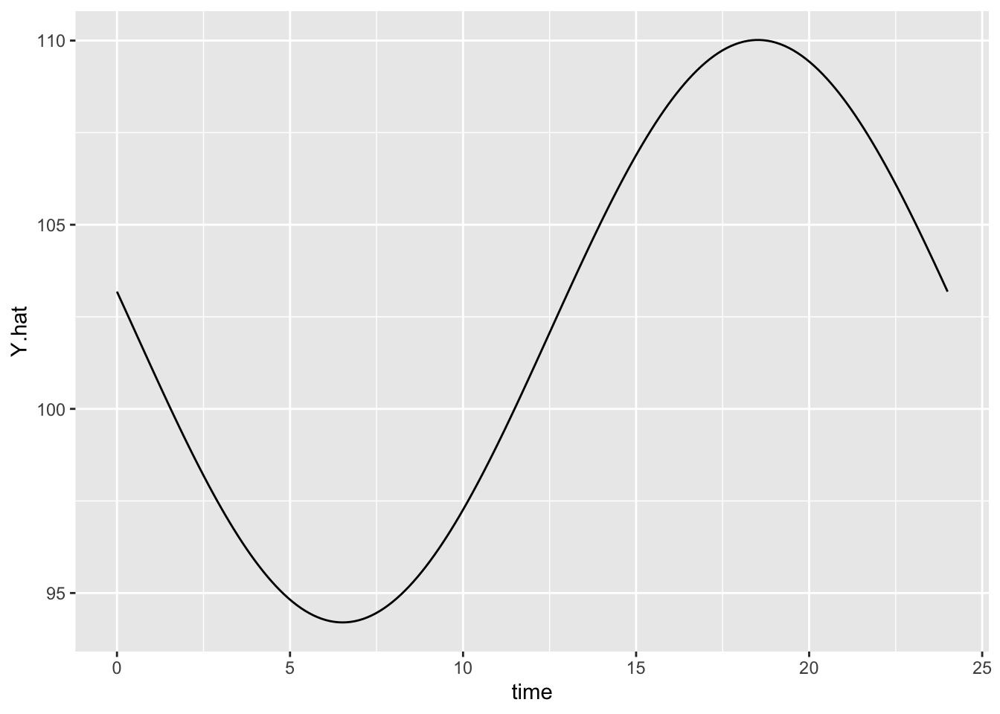
Nighttime Glucose: Hourly Bins
Description: Prepare Data for Graph
# Filter for night data
night_data <- cleaned_data_deduplicated %>%
mutate(Hour = hour(Timestamp)) %>%
filter(Hour >= 22 | Hour < 7) %>% # Nighttime: 22 to 6:59
# Create reordered factor for plotting (22 to 6)
mutate(Hour_Factor = factor(Hour, levels = c(22, 23, 0, 1, 2, 3, 4, 5, 6)))
# Calculate average glucose per hour per ID
night_avg <- night_data %>%
group_by(ID, Hour_Factor) %>%
summarise(
Avg_Glucose = mean(`Glucose (mg/dl)`, na.rm = TRUE),
.groups = "drop"
)Description: Plot the night
ggplot(night_avg, aes(x = Hour_Factor, y = Avg_Glucose, group = ID, color = ID)) +
geom_line(size = 1) +
geom_point(size = 1.5) +
labs(
title = "Nighttime Glucose Trends per ID",
subtitle = "Hours from 22:00 to 06:59: hourly bins",
x = "Hour of Night",
y = "Average Glucose (mg/dl)",
color = "ID"
) +
theme_minimal() +
theme(
axis.text.x = element_text(angle = 45, hjust = 1),
strip.text = element_text(face = "bold")
)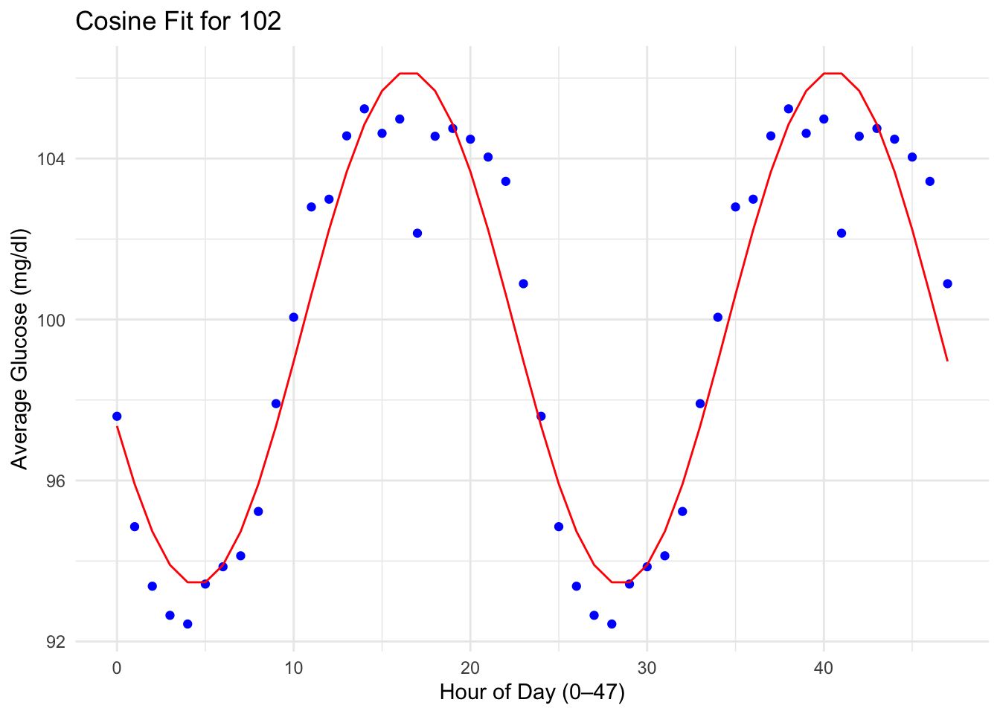
Description: Boxplot of Average Glucose per Hour
# Boxplot
ggplot(night_data, aes(x = Hour_Factor, y = `Glucose (mg/dl)`, fill = Hour_Factor)) +
geom_boxplot(outlier.size = 0.2, alpha = 0.6) +
facet_wrap(~ ID, ncol = 2) +
scale_fill_brewer(palette = "Blues") +
labs(
title = "Nighttime Glucose Distribution per Hour and ID",
subtitle = "Hours from 22:00 to 06:59",
x = "Hour of Night",
y = "Glucose (mg/dl)",
fill = "Hour"
) +
theme_minimal() +
theme(
axis.text.x = element_text(angle = 45, hjust = 1),
strip.text = element_text(face = "bold")
)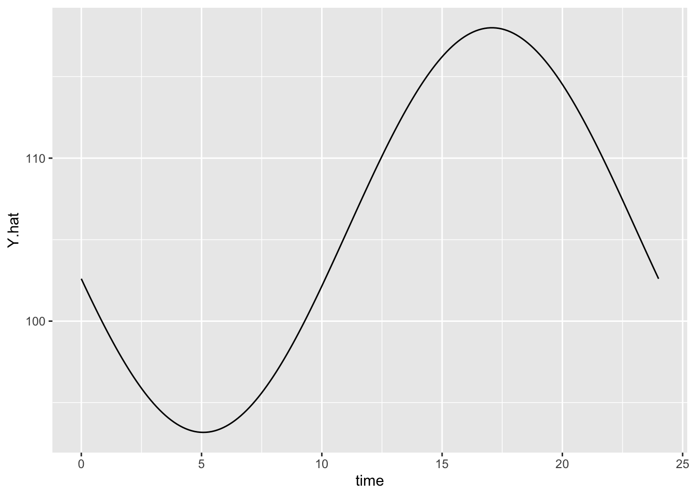
Nighttime Glucose: 5min bins
# Create 5min bins
night_data <- night_data %>%
mutate(Minute5 = floor_date(Timestamp, unit = "5 minutes"),
Minute5 = format(Minute5, "%H:%M"))
# Calculate mean and standard deviation
night_avg_5 <- night_data %>%
group_by(ID, Minute5) %>%
summarise(
Avg_Glucose_5 = mean(`Glucose (mg/dl)`, na.rm = TRUE),
Sd_Glucose_5 = sd(`Glucose (mg/dl)`, na.rm = TRUE),
.groups = "drop"
)
# Create levels for right order
levels_ordered <- format(seq.POSIXt(
from = as.POSIXct("2024-01-01 22:00"),
to = as.POSIXct("2024-01-02 06:00"),
by = "5 min"
), "%H:%M")
# Create reordered factor for plotting
night_avg_5 <- night_avg_5 %>%
mutate(Minute5_Factor = factor(Minute5, levels = levels_ordered))
# cretae labels for x axis
hour_labels <- format(seq.POSIXt(
from = as.POSIXct("2024-01-01 22:00"),
to = as.POSIXct("2024-01-02 06:00"),
by = "1 hour"
), "%H:%M")
# Create one plot for all
ggplot(night_avg_5, aes(x = Minute5_Factor, y = Avg_Glucose_5, group = ID, color = ID, fill = ID)) +
geom_smooth(size = 0.8) +
geom_line(size = 0.5) +
geom_ribbon(aes(ymin = Avg_Glucose_5 - Sd_Glucose_5, ymax = Avg_Glucose_5 + Sd_Glucose_5), alpha = 0.1, color = NA)+
scale_x_discrete(breaks = hour_labels) +
labs(
title = "Nighttime Glucose Trends per ID",
subtitle = "Hours from 22:00 to 06:00: 5min bins",
x = "Hour of Night",
y = "Average Glucose (mg/dl)",
color = "ID"
) +
theme_minimal() +
theme(
axis.text.x = element_text(angle = 45, hjust = 1),
strip.text = element_text(face = "bold")
) `geom_smooth()` using method = 'loess' and formula = 'y ~ x'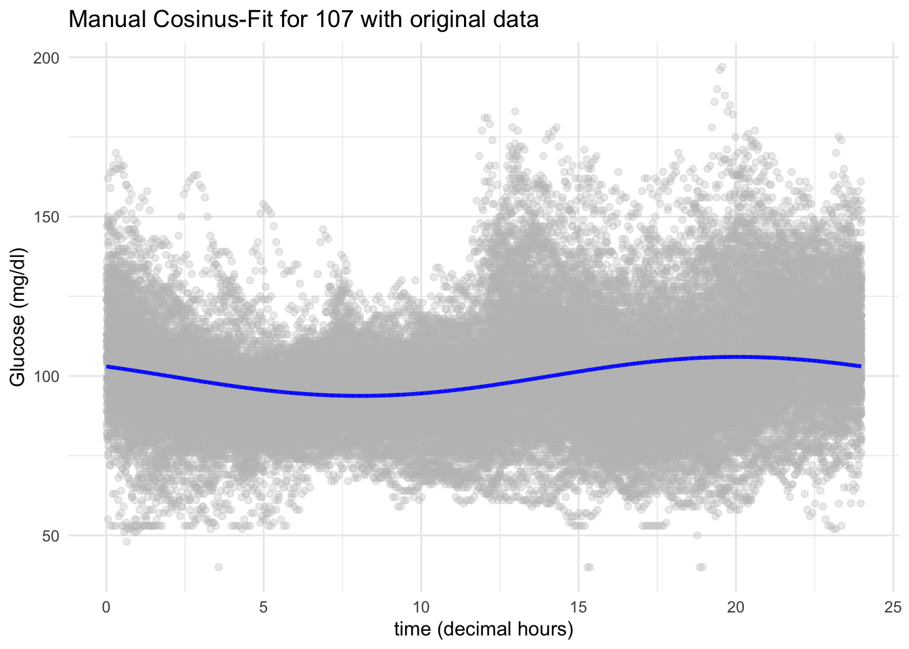
# Create one plot per ID
ggplot(night_avg_5, aes(x = Minute5_Factor, y = Avg_Glucose_5, group = ID, color = ID, fill = ID)) +
geom_smooth(size = 0.7) +
geom_line(size = 0.5) +
geom_ribbon(aes(ymin = Avg_Glucose_5 - Sd_Glucose_5, ymax = Avg_Glucose_5 + Sd_Glucose_5), alpha = 0.1, color = NA)+
scale_x_discrete(breaks = hour_labels) +
facet_wrap(~ ID) +
labs(
title = "Nighttime Glucose Trends per ID",
subtitle = "Hours from 22:00 to 06:00: 5min bins",
x = "Hour of Night",
y = "Average Glucose (mg/dl)",
color = "ID"
) +
theme_minimal() +
theme(
axis.text.x = element_text(angle = 45, hjust = 1),
strip.text = element_text(face = "bold")
) `geom_smooth()` using method = 'loess' and formula = 'y ~ x'
Create a double plot
# Extract time-of-day in hours and add ID names without "Ecosleep"
double_data <- cleaned_data_deduplicated %>%
mutate(
Date = as.Date(Timestamp),
Hour = hour(Timestamp),
Minute = minute(Timestamp),
Time_of_Day = Hour + Minute / 60,
)
# Duplicate data: original time + shifted by 24h
double_data_long <- bind_rows(
double_data %>% mutate(Double_Hour = Time_of_Day),
double_data %>% mutate(Double_Hour = Time_of_Day + 24)
)
# Round down to full hour and keep the original 0–47 factor for correct time ordering
double_avg <- double_data_long %>%
mutate(Hour_Rounded = floor(Double_Hour)) %>%
group_by(ID, Hour_Rounded) %>%
summarise(Avg_Glucose = mean(`Glucose (mg/dl)`, na.rm = TRUE), .groups = "drop") %>%
mutate(
Display_Hour = Hour_Rounded %% 24,
Day = ifelse(Hour_Rounded < 24, "Day 1", "Day 2"),
Hour_Label = paste0(Day, " – ", sprintf("%02d:00", Display_Hour)),
Hour_Factor = factor(Hour_Label, levels = c(
paste0("Day 1 – ", sprintf("%02d:00", 0:23)),
paste0("Day 2 – ", sprintf("%02d:00", 0:23))
))
)
# Create the plot
ggplot(double_avg, aes(x = Hour_Factor, y = Avg_Glucose, group = ID, color = ID)) +
geom_line(size = 1) +
geom_point(size = 1.5) +
labs(
title = "Double Plot: 48-Hour Glucose Trends per ID",
subtitle = "Same 24h cycle shown twice to visualize rhythm",
x = "Hour of Day (Repeated)",
y = "Average Glucose (mg/dl)",
color = "ID"
) +
scale_y_continuous(limits = c(85, 120)) +
scale_x_discrete(
breaks = levels(double_avg$Hour_Factor)[seq(1, 48, by = 4)]
) +
theme_minimal() +
theme(
axis.text.x = element_text(angle = 90, hjust = 1, size = 7),
strip.text = element_text(face = "bold")
)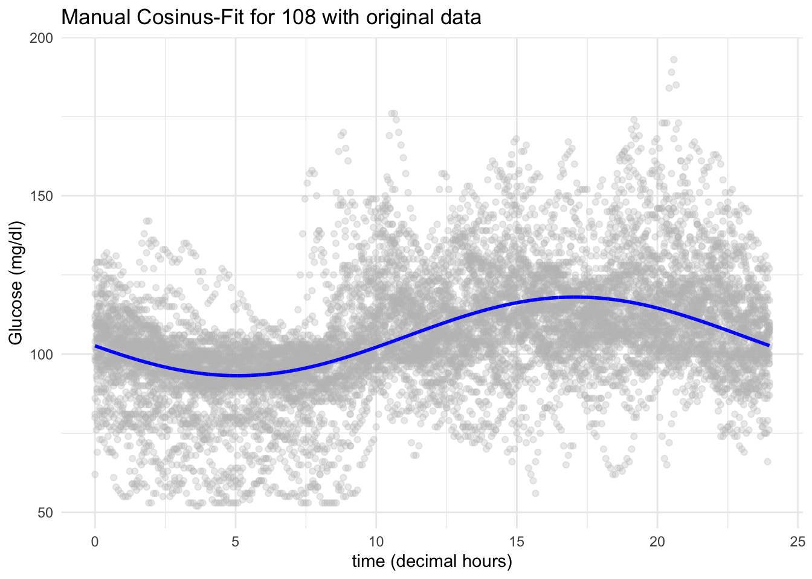
Cosine fit
First fit for every ID
# Filter data for ID 102
fit_data_102 <- double_avg %>% filter(ID == "102")
# Fit cosine model (period 24h)
cos_fit_102 <- nls(
Avg_Glucose ~ A * cos(2 * pi / 24 * Hour_Rounded + phi) + C,
data = fit_data_102,
start = list(A = 10, phi = 0, C = 100) # rough starting guesses
)
summary(cos_fit_102)
Formula: Avg_Glucose ~ A * cos(2 * pi/24 * Hour_Rounded + phi) + C
Parameters:
Estimate Std. Error t value Pr(>|t|)
A -6.37619 0.30189 -21.12 <2e-16 ***
phi -1.17838 0.04735 -24.89 <2e-16 ***
C 99.79182 0.21347 467.47 <2e-16 ***
---
Signif. codes: 0 '***' 0.001 '**' 0.01 '*' 0.05 '.' 0.1 ' ' 1
Residual standard error: 1.479 on 45 degrees of freedom
Number of iterations to convergence: 8
Achieved convergence tolerance: 7.629e-06# Add predicted values
fit_data_102 <- fit_data_102 %>%
mutate(Fitted = predict(cos_fit_102))
# Plot actual vs fitted
ggplot(fit_data_102, aes(x = Hour_Rounded)) +
geom_point(aes(y = Avg_Glucose), color = "blue") +
geom_line(aes(y = Fitted), color = "red") +
labs(
title = "Cosine Fit for 102",
x = "Hour of Day (0–47)",
y = "Average Glucose (mg/dl)"
) +
theme_minimal()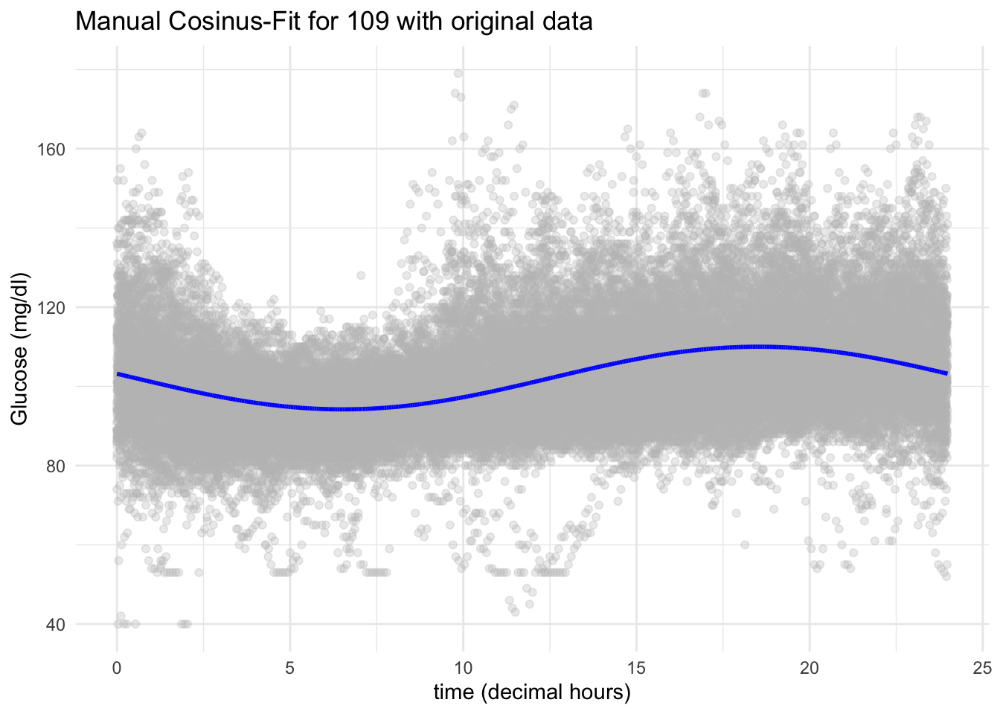
fit_data_104 <- double_avg %>% filter(ID == "104")
cos_fit_104 <- nls(
Avg_Glucose ~ A * cos(2 * pi / 24 * Hour_Rounded + phi) + C,
data = fit_data_104,
start = list(A = 10, phi = 0, C = 100)
)
fit_data_104 <- fit_data_104 %>%
mutate(Fitted = predict(cos_fit_104))
ggplot(fit_data_104, aes(x = Hour_Rounded)) +
geom_point(aes(y = Avg_Glucose), color = "blue") +
geom_line(aes(y = Fitted), color = "red") +
labs(
title = "Cosine Fit for 104",
x = "Hour of Day (0–47)",
y = "Average Glucose (mg/dl)"
) +
theme_minimal()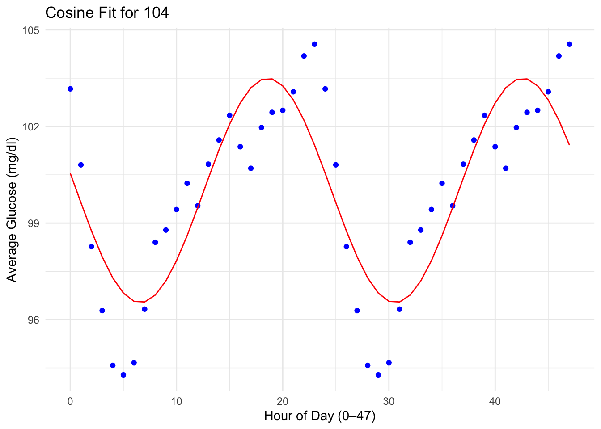
fit_data_107 <- double_avg %>% filter(ID == "107")
cos_fit_107 <- nls(
Avg_Glucose ~ A * cos(2 * pi / 24 * Hour_Rounded + phi) + C,
data = fit_data_107,
start = list(A = 10, phi = 0, C = 100)
)
fit_data_107 <- fit_data_107 %>%
mutate(Fitted = predict(cos_fit_107))
ggplot(fit_data_107, aes(x = Hour_Rounded)) +
geom_point(aes(y = Avg_Glucose), color = "blue") +
geom_line(aes(y = Fitted), color = "red") +
labs(
title = "Cosine Fit for 107",
x = "Hour of Day (0–47)",
y = "Average Glucose (mg/dl)"
) +
theme_minimal()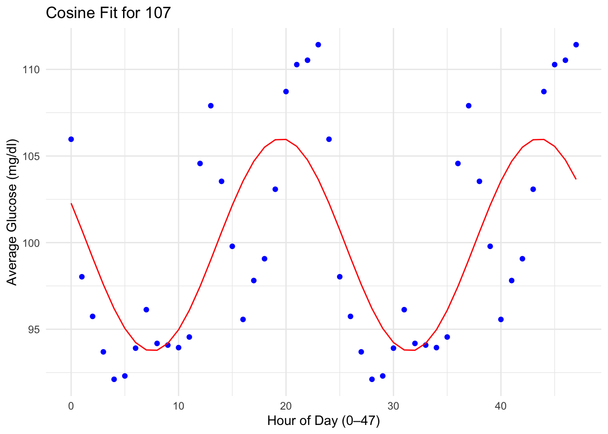
fit_data_108 <- double_avg %>% filter(ID == "108")
cos_fit_108 <- nls(
Avg_Glucose ~ A * cos(2 * pi / 24 * Hour_Rounded + phi) + C,
data = fit_data_108,
start = list(A = 10, phi = 0, C = 100)
)
fit_data_108 <- fit_data_108 %>%
mutate(Fitted = predict(cos_fit_108))
ggplot(fit_data_108, aes(x = Hour_Rounded)) +
geom_point(aes(y = Avg_Glucose), color = "blue") +
geom_line(aes(y = Fitted), color = "red") +
labs(
title = "Cosine Fit for 108",
x = "Hour of Day (0–47)",
y = "Average Glucose (mg/dl)"
) +
theme_minimal()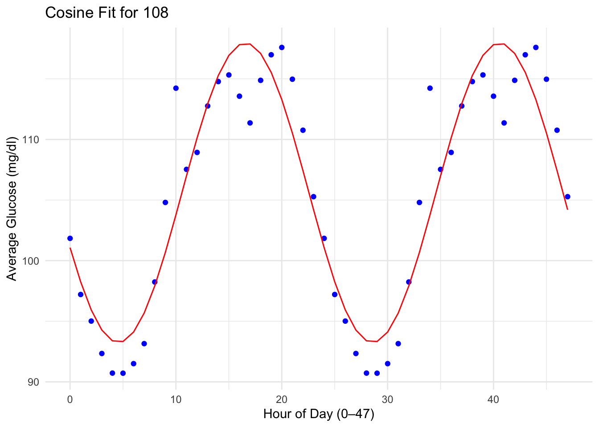
fit_data_109 <- double_avg %>% filter(ID == "109")
cos_fit_109 <- nls(
Avg_Glucose ~ A * cos(2 * pi / 24 * Hour_Rounded + phi) + C,
data = fit_data_109,
start = list(A = 10, phi = 0, C = 100)
)
fit_data_109 <- fit_data_109 %>%
mutate(Fitted = predict(cos_fit_109))
ggplot(fit_data_109, aes(x = Hour_Rounded)) +
geom_point(aes(y = Avg_Glucose), color = "blue") +
geom_line(aes(y = Fitted), color = "red") +
labs(
title = "Cosine Fit for 109",
x = "Hour of Day (0–47)",
y = "Average Glucose (mg/dl)"
) +
theme_minimal()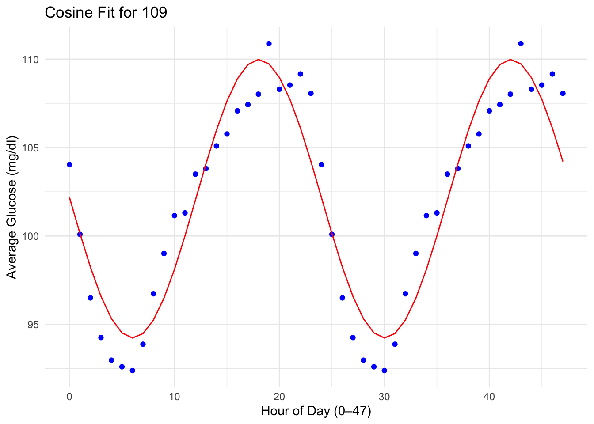
fit_data_112 <- double_avg %>% filter(ID == "112")
cos_fit_112 <- nls(
Avg_Glucose ~ A * cos(2 * pi / 24 * Hour_Rounded + phi) + C,
data = fit_data_112,
start = list(A = 10, phi = 0, C = 100)
)
fit_data_112 <- fit_data_112 %>%
mutate(Fitted = predict(cos_fit_112))
ggplot(fit_data_112, aes(x = Hour_Rounded)) +
geom_point(aes(y = Avg_Glucose), color = "blue") +
geom_line(aes(y = Fitted), color = "red") +
labs(
title = "Cosine Fit for 112",
x = "Hour of Day (0–47)",
y = "Average Glucose (mg/dl)"
) +
theme_minimal()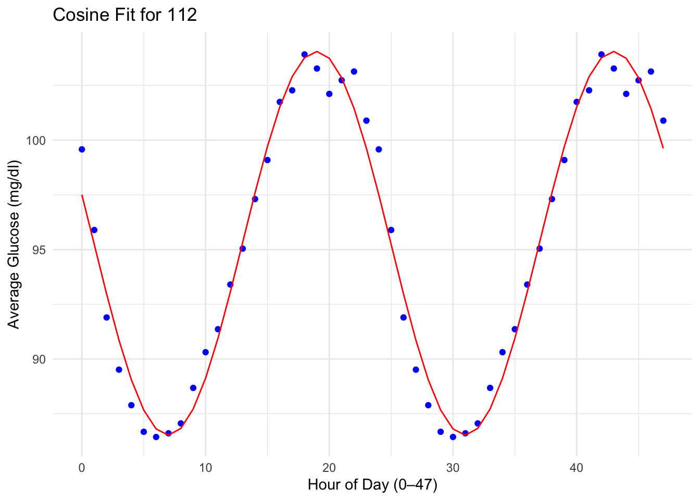
# Maximum bestimmen
max_row <- fit_data_102 %>% filter(Fitted == max(Fitted))
cat("Maximum:\n")Maximum:print(max_row %>% select(Hour_Rounded, Fitted))# A tibble: 2 × 2
Hour_Rounded Fitted
<dbl> <dbl>
1 17 106.
2 41 106.# Minimum bestimmen
min_row <- fit_data_102 %>% filter(Fitted == min(Fitted))
cat("\nMinimum:\n")
Minimum:print(min_row %>% select(Hour_Rounded, Fitted))# A tibble: 2 × 2
Hour_Rounded Fitted
<dbl> <dbl>
1 5 93.5
2 29 93.5Cosinus Fit with Cosinor()
Description: Load Cosinor Package
if (!requireNamespace("cosinor", quietly = TRUE)) {
install.packages("cosinor")
}
library(cosinor)Description: Test Functioning of the Package with vitamind Data Set
data("vitamind")
head(vitamind) X Y time
1 0 16.12091 11.439525
2 0 29.90624 5.807104
3 1 39.17572 1.045492
4 1 35.15403 4.082983
5 1 43.67065 10.606247
6 0 31.20360 5.126054 fit <- cosinor.lm(Y ~ time(time) + X + amp.acro(X), data = vitamind, period = 12)
summary(fit) Raw model coefficients:
estimate standard.error lower.CI upper.CI p.value
(Intercept) 29.6898 0.4654 28.7776 30.6020 0.0000
X 1.9019 0.8041 0.3258 3.4779 0.0180
rrr 0.9308 0.6357 -0.3151 2.1767 0.1431
sss 6.2010 0.6805 4.8673 7.5347 0.0000
X:rrr 5.5795 1.1386 3.3479 7.8111 0.0000
X:sss -1.3825 1.1364 -3.6097 0.8447 0.2237
***********************
Transformed coefficients:
estimate standard.error lower.CI upper.CI p.value
(Intercept) 29.6898 0.4654 28.7776 30.6020 0.000
[X = 1] 1.9019 0.8041 0.3258 3.4779 0.018
amp 6.2705 0.6799 4.9378 7.6031 0.000
[X = 1]:amp 8.0995 0.9095 6.3170 9.8820 0.000
acr 1.4218 0.1015 1.2229 1.6207 0.000
[X = 1]:acr 0.6372 0.1167 0.4084 0.8659 0.000test_cosinor(fit, "X", param = "amp")Global test:
Statistic:
[1] 2.59
P-value:
[1] 0.1072
Individual tests:
Statistic:
[1] 1.61
P-value:
[1] 0.1072
Estimate and confidence interval[1] "1.83 (-0.4 to 4.05)"summary(vitamind$Y) Min. 1st Qu. Median Mean 3rd Qu. Max.
13.27 25.59 29.79 30.09 34.85 51.30 summary(predict(fit)) Min. 1st Qu. Median Mean 3rd Qu. Max.
16.10 25.98 29.26 29.69 33.59 46.48 ggplot_cosinor.lm(fit, x_str = "X")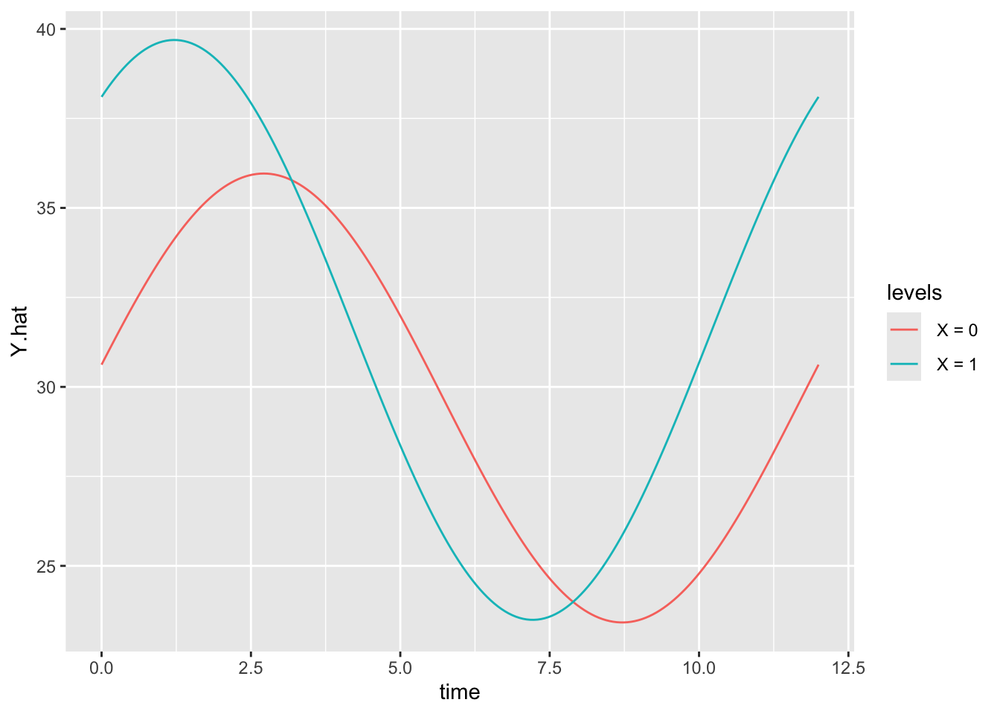
Description: Fit Cosinor for ID 102
# create dataset for cosinor model for 102
glucose_fit_102_data <- cleaned_data_deduplicated %>%
filter(ID == "102") %>% # filter for 102
mutate(
datetime = dmy_hm(DeviceTimestamp), # if format TT-MM-JJJJ HH:MM
dec.time = hour(datetime) + minute(datetime) / 60 # time as decimal hour during the day
)
# cosinor model
glucose_fit_102 <- cosinor.lm(`Glucose (mg/dl)` ~ time(dec.time), data = glucose_fit_102_data, period = 24)
summary(glucose_fit_102) Raw model coefficients:
estimate standard.error lower.CI upper.CI p.value
(Intercept) 99.7942 0.0503 99.6956 99.8928 0
rrr -1.6710 0.0711 -1.8103 -1.5318 0
sss -6.1713 0.0712 -6.3108 -6.0317 0
***********************
Transformed coefficients:
estimate standard.error lower.CI upper.CI p.value
(Intercept) 99.7942 0.0503 99.6956 99.8928 0
amp 6.3935 0.0712 6.2540 6.5330 0
acr 1.3064 0.0111 1.2846 1.3282 0# raw values
summary(glucose_fit_102_data$`Glucose (mg/dl)`) Min. 1st Qu. Median Mean 3rd Qu. Max.
40.00 91.00 99.00 99.79 108.00 196.00 # adjusted values
summary(predict(glucose_fit_102)) Min. 1st Qu. Median Mean 3rd Qu. Max.
37.44 91.57 99.66 99.79 107.85 189.93 # plot the fit
ggplot_cosinor.lm(glucose_fit_102)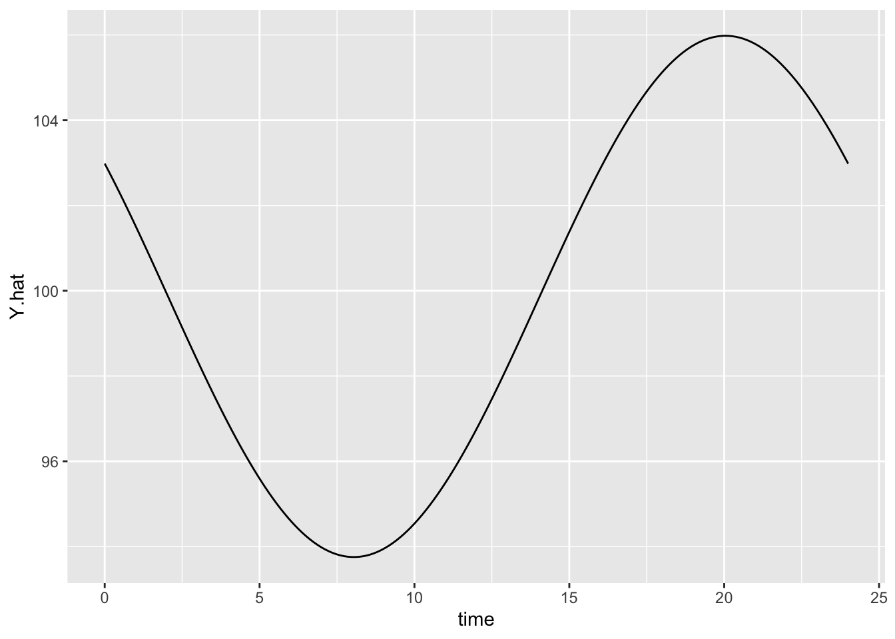
Description: Fit Cosinor for Ecosleep 104
# create dataset for cosinor model for 102Ecosleep
glucose_fit_104_data <- cleaned_data_deduplicated %>%
filter(ID == "104") %>% # filter for 104
mutate(
datetime = dmy_hm(DeviceTimestamp), # if format TT-MM-JJJJ HH:MM
dec.time = hour(datetime) + minute(datetime) / 60 # time as decimal hour during the day
)
# cosinor model
glucose_fit_104 <- cosinor.lm(`Glucose (mg/dl)` ~ time(dec.time), data = glucose_fit_104_data, period = 24)
summary(glucose_fit_102) Raw model coefficients:
estimate standard.error lower.CI upper.CI p.value
(Intercept) 99.7942 0.0503 99.6956 99.8928 0
rrr -1.6710 0.0711 -1.8103 -1.5318 0
sss -6.1713 0.0712 -6.3108 -6.0317 0
***********************
Transformed coefficients:
estimate standard.error lower.CI upper.CI p.value
(Intercept) 99.7942 0.0503 99.6956 99.8928 0
amp 6.3935 0.0712 6.2540 6.5330 0
acr 1.3064 0.0111 1.2846 1.3282 0# raw values
summary(glucose_fit_104_data$`Glucose (mg/dl)`) Min. 1st Qu. Median Mean 3rd Qu. Max.
40 92 99 100 108 223 # adjusted values
summary(predict(glucose_fit_104)) Min. 1st Qu. Median Mean 3rd Qu. Max.
36.50 91.53 99.61 100.01 107.78 219.58 # plot the fit
ggplot_cosinor.lm(glucose_fit_104)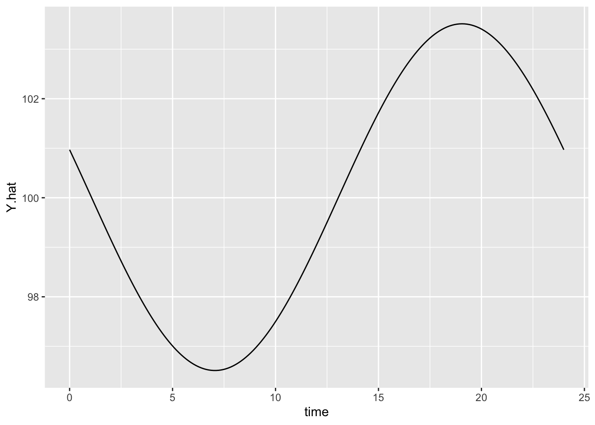
Description: Fit Cosinor for Ecosleep 107
# create dataset for cosinor model for 107Ecosleep
glucose_fit_107_data <- cleaned_data_deduplicated %>%
filter(ID == "107") %>% # filter for 107
mutate(
datetime = dmy_hm(DeviceTimestamp), # if format TT-MM-JJJJ HH:MM
dec.time = hour(datetime) + minute(datetime) / 60 # time as decimal hour during the day
)
# cosinor model
glucose_fit_107 <- cosinor.lm(`Glucose (mg/dl)` ~ time(dec.time), data = glucose_fit_107_data, period = 24)
summary(glucose_fit_107) Raw model coefficients:
estimate standard.error lower.CI upper.CI p.value
(Intercept) 99.8672 0.0702 99.7297 100.0047 0
rrr 3.1165 0.0992 2.9221 3.3108 0
sss -5.2599 0.0993 -5.4545 -5.0653 0
***********************
Transformed coefficients:
estimate standard.error lower.CI upper.CI p.value
(Intercept) 99.8672 0.0702 99.7297 100.0047 0
amp 6.1138 0.0993 5.9192 6.3085 0
acr -1.0359 0.0162 -1.0677 -1.0041 0# raw values
summary(glucose_fit_107_data$`Glucose (mg/dl)`) Min. 1st Qu. Median Mean 3rd Qu. Max.
40.00 89.00 98.00 99.87 109.00 197.00 # adjusted values
summary(predict(glucose_fit_107)) Min. 1st Qu. Median Mean 3rd Qu. Max.
34.14 89.62 98.86 99.87 108.84 190.93 # plot the fit
ggplot_cosinor.lm(glucose_fit_107)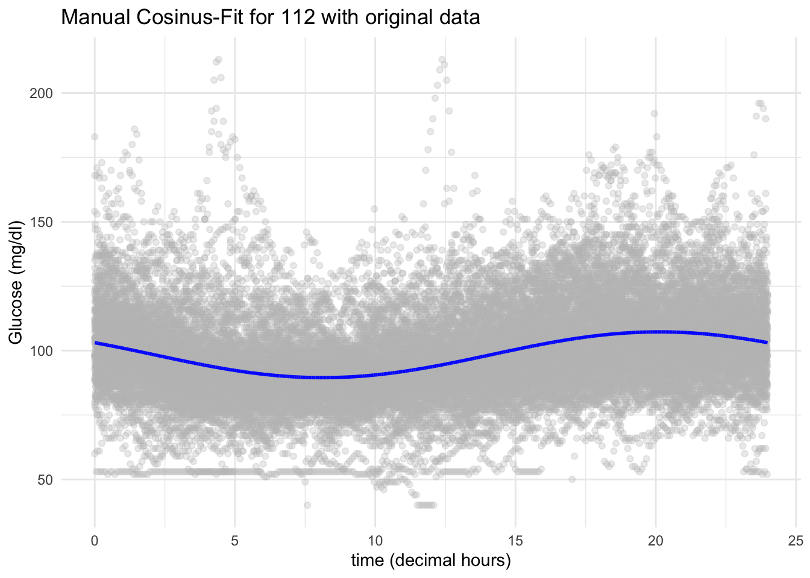
Description: Fit Cosinor for Ecosleep 108
# create dataset for cosinor model for 107Ecosleep
glucose_fit_108_data <- cleaned_data_deduplicated %>%
filter(ID == "108") %>% # filter for 107
mutate(
datetime = dmy_hm(DeviceTimestamp), # if format TT-MM-JJJJ HH:MM
dec.time = hour(datetime) + minute(datetime) / 60 # time as decimal hour during the day
)
# cosinor model
glucose_fit_108 <- cosinor.lm(`Glucose (mg/dl)` ~ time(dec.time), data = glucose_fit_108_data, period = 24)
summary(glucose_fit_108) Raw model coefficients:
estimate standard.error lower.CI upper.CI p.value
(Intercept) 105.5868 0.1440 105.3046 105.8690 0
rrr -2.9873 0.2036 -3.3864 -2.5881 0
sss -12.0471 0.2036 -12.4461 -11.6481 0
***********************
Transformed coefficients:
estimate standard.error lower.CI upper.CI p.value
(Intercept) 105.5868 0.1440 105.3046 105.8690 0
amp 12.4119 0.2034 12.0133 12.8105 0
acr 1.3277 0.0164 1.2955 1.3599 0# raw values
summary(glucose_fit_108_data$`Glucose (mg/dl)`) Min. 1st Qu. Median Mean 3rd Qu. Max.
52.0 95.0 104.0 105.6 116.0 193.0 # adjusted values
summary(predict(glucose_fit_108)) Min. 1st Qu. Median Mean 3rd Qu. Max.
44.42 96.94 105.39 105.59 113.24 185.47 # plot the fit
ggplot_cosinor.lm(glucose_fit_108)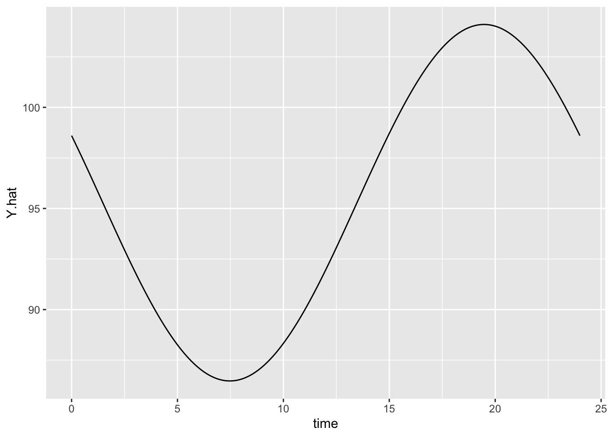
Description: Fit Cosinor for Ecosleep 109
# create dataset for cosinor model for 107Ecosleep
glucose_fit_109_data <- cleaned_data_deduplicated %>%
filter(ID == "109") %>% # filter for 109
mutate(
datetime = dmy_hm(DeviceTimestamp), # if format TT-MM-JJJJ HH:MM
dec.time = hour(datetime) + minute(datetime) / 60 # time as decimal hour during the day
)
# cosinor model
glucose_fit_109 <- cosinor.lm(`Glucose (mg/dl)` ~ time(dec.time), data = glucose_fit_109_data, period = 24)
summary(glucose_fit_109) Raw model coefficients:
estimate standard.error lower.CI upper.CI p.value
(Intercept) 102.1091 0.0606 101.9904 102.2278 0
rrr 1.0739 0.0857 0.9060 1.2418 0
sss -7.8340 0.0856 -8.0019 -7.6661 0
***********************
Transformed coefficients:
estimate standard.error lower.CI upper.CI p.value
(Intercept) 102.1091 0.0606 101.9904 102.2278 0
amp 7.9073 0.0856 7.7394 8.0751 0
acr -1.4346 0.0108 -1.4558 -1.4133 0# raw values
summary(glucose_fit_109_data$`Glucose (mg/dl)`) Min. 1st Qu. Median Mean 3rd Qu. Max.
40.0 93.0 100.0 102.1 110.0 179.0 # adjusted values
summary(predict(glucose_fit_109)) Min. 1st Qu. Median Mean 3rd Qu. Max.
38.99 93.70 101.06 102.11 109.15 184.09 # plot the fit
ggplot_cosinor.lm(glucose_fit_109)Description: Fit Cosinor for Ecosleep 112
# create dataset for cosinor model for 112Ecosleep
glucose_fit_112_data <- cleaned_data_deduplicated %>%
filter(ID == "112") %>% # filter for 112
mutate(
datetime = dmy_hm(DeviceTimestamp), # if format TT-MM-JJJJ HH:MM
dec.time = hour(datetime) + minute(datetime) / 60 # time as decimal hour during the day
)
# cosinor model
glucose_fit_112 <- cosinor.lm(`Glucose (mg/dl)` ~ time(dec.time), data = glucose_fit_112_data, period = 24)
summary(glucose_fit_112) Raw model coefficients:
estimate standard.error lower.CI upper.CI p.value
(Intercept) 95.2850 0.0603 95.1669 95.4031 0
rrr 3.3158 0.0852 3.1488 3.4827 0
sss -8.1667 0.0853 -8.3339 -7.9996 0
***********************
Transformed coefficients:
estimate standard.error lower.CI upper.CI p.value
(Intercept) 95.2850 0.0603 95.1669 95.4031 0
amp 8.8142 0.0854 8.6468 8.9815 0
acr -1.1851 0.0097 -1.2040 -1.1662 0# raw values
summary(glucose_fit_112_data$`Glucose (mg/dl)`) Min. 1st Qu. Median Mean 3rd Qu. Max.
40.00 84.00 93.00 95.29 104.00 233.00 # adjusted values
summary(predict(glucose_fit_112)) Min. 1st Qu. Median Mean 3rd Qu. Max.
42.95 85.76 93.62 95.29 103.03 224.75 # plot the fit
ggplot_cosinor.lm(glucose_fit_112)Manual Cosine fit
with datasets prepared for fit with cosinor() function (-> no hourly bins but all datapoints) Description: Fit for 102
cos_fit_102_orig <- nls(
`Glucose (mg/dl)` ~ A * cos(2 * pi / 24 * dec.time + phi) + C,
data = glucose_fit_102_data,
start = list(A = 10, phi = 0, C = 100) # start values
)
# Ergebnis anzeigen
summary(cos_fit_102_orig)
Formula: `Glucose (mg/dl)` ~ A * cos(2 * pi/24 * dec.time + phi) + C
Parameters:
Estimate Std. Error t value Pr(>|t|)
A 6.39349 0.07116 89.84 <2e-16 ***
phi -4.44795 0.01112 -399.88 <2e-16 ***
C 99.79418 0.05030 1983.89 <2e-16 ***
---
Signif. codes: 0 '***' 0.001 '**' 0.01 '*' 0.05 '.' 0.1 ' ' 1
Residual standard error: 13.98 on 77228 degrees of freedom
Number of iterations to convergence: 10
Achieved convergence tolerance: 1.922e-07# prepare dataset for plotting
glucose_fit_102_data <- glucose_fit_102_data %>%
mutate(Fitted = predict(cos_fit_102_orig))
ggplot(glucose_fit_102_data, aes(x = dec.time, y = `Glucose (mg/dl)`)) +
geom_point(alpha = 0.3, color = "grey") + # Original glucose values
geom_line(aes(y = Fitted), color = "blue", size = 1) + # Cosinus fit
labs(title = "Manual Cosinus-Fit for 102 with original data",
x = "time (decimal hours)",
y = "Glucose (mg/dl)") +
theme_minimal()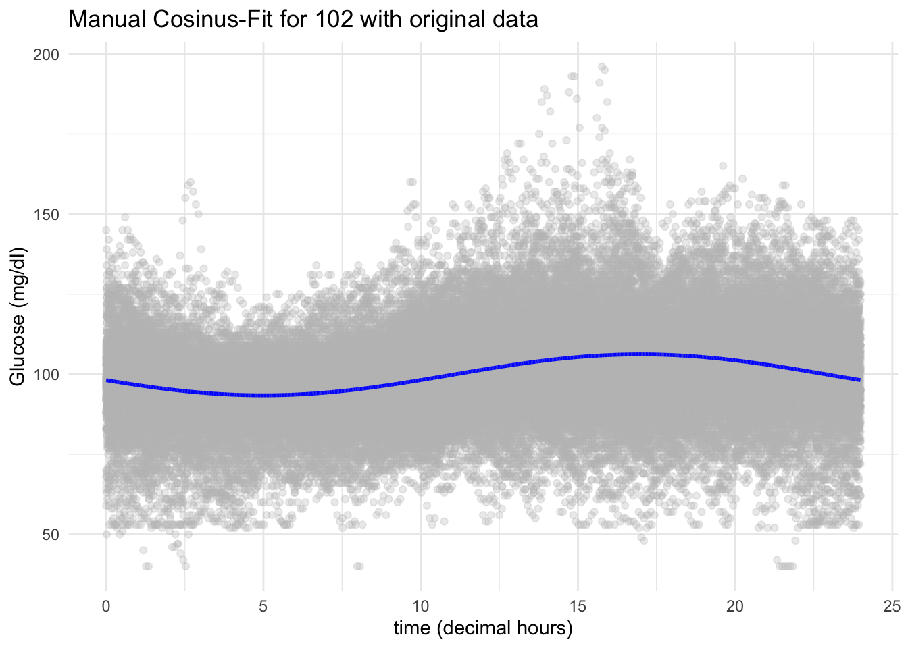
Desciption: Fit for 104
cos_fit_104_orig <- nls(
`Glucose (mg/dl)` ~ A * cos(2 * pi / 24 * dec.time + phi) + C,
data = glucose_fit_104_data,
start = list(A = 10, phi = 0, C = 100) # start values
)
# Ergebnis anzeigen
summary(cos_fit_104_orig)
Formula: `Glucose (mg/dl)` ~ A * cos(2 * pi/24 * dec.time + phi) + C
Parameters:
Estimate Std. Error t value Pr(>|t|)
A 3.50090 0.06912 50.65 <2e-16 ***
phi 1.29380 0.01973 65.56 <2e-16 ***
C 100.01206 0.04886 2046.78 <2e-16 ***
---
Signif. codes: 0 '***' 0.001 '**' 0.01 '*' 0.05 '.' 0.1 ' ' 1
Residual standard error: 14.79 on 91590 degrees of freedom
Number of iterations to convergence: 7
Achieved convergence tolerance: 1.57e-09# prepare dataset for plotting
glucose_fit_104_data <- glucose_fit_104_data %>%
mutate(Fitted = predict(cos_fit_104_orig))
ggplot(glucose_fit_104_data, aes(x = dec.time, y = `Glucose (mg/dl)`)) +
geom_point(alpha = 0.3, color = "grey") + # Original glucose values
geom_line(aes(y = Fitted), color = "blue", size = 1) + # Cosinus fit
labs(title = "Manual Cosinus-Fit for 104 with original data",
x = "time (decimal hours)",
y = "Glucose (mg/dl)") +
theme_minimal()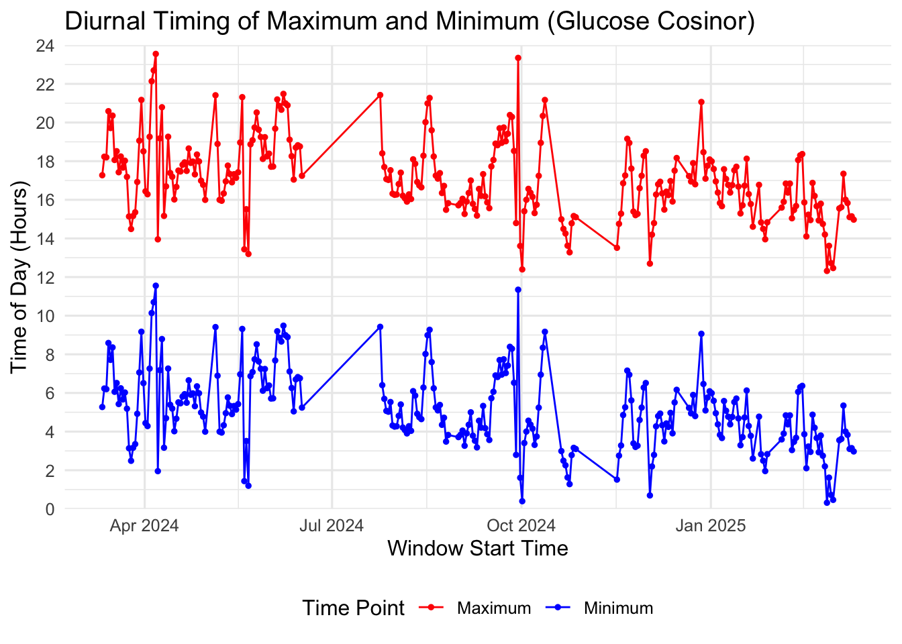
Desciption: Fit for 107
cos_fit_107_orig <- nls(
`Glucose (mg/dl)` ~ A * cos(2 * pi / 24 * dec.time + phi) + C,
data = glucose_fit_107_data,
start = list(A = 10, phi = 0, C = 100) # start values
)
# Ergebnis anzeigen
summary(cos_fit_107_orig)
Formula: `Glucose (mg/dl)` ~ A * cos(2 * pi/24 * dec.time + phi) + C
Parameters:
Estimate Std. Error t value Pr(>|t|)
A 6.11375 0.09932 61.56 <2e-16 ***
phi 1.03591 0.01622 63.88 <2e-16 ***
C 99.86721 0.07017 1423.26 <2e-16 ***
---
Signif. codes: 0 '***' 0.001 '**' 0.01 '*' 0.05 '.' 0.1 ' ' 1
Residual standard error: 16.62 on 56107 degrees of freedom
Number of iterations to convergence: 5
Achieved convergence tolerance: 3.927e-06# prepare dataset for plotting
glucose_fit_107_data <- glucose_fit_107_data %>%
mutate(Fitted = predict(cos_fit_107_orig))
ggplot(glucose_fit_107_data, aes(x = dec.time, y = `Glucose (mg/dl)`)) +
geom_point(alpha = 0.3, color = "grey") + # Original glucose values
geom_line(aes(y = Fitted), color = "blue", size = 1) + # Cosinus fit
labs(title = "Manual Cosinus-Fit for 107 with original data",
x = "time (decimal hours)",
y = "Glucose (mg/dl)") +
theme_minimal()
Description: Fit for 108
cos_fit_108_orig <- nls(
`Glucose (mg/dl)` ~ A * cos(2 * pi / 24 * dec.time + phi) + C,
data = glucose_fit_108_data,
start = list(A = 10, phi = 0, C = 100) # start values
)
# Ergebnis anzeigen
summary(cos_fit_108_orig)
Formula: `Glucose (mg/dl)` ~ A * cos(2 * pi/24 * dec.time + phi) + C
Parameters:
Estimate Std. Error t value Pr(>|t|)
A 12.41194 0.20337 61.03 <2e-16 ***
phi 20.66341 0.01642 1258.09 <2e-16 ***
C 105.58679 0.14398 733.36 <2e-16 ***
---
Signif. codes: 0 '***' 0.001 '**' 0.01 '*' 0.05 '.' 0.1 ' ' 1
Residual standard error: 15.79 on 12032 degrees of freedom
Number of iterations to convergence: 11
Achieved convergence tolerance: 2.572e-07# prepare dataset for plotting
glucose_fit_108_data <- glucose_fit_108_data %>%
mutate(Fitted = predict(cos_fit_108_orig))
ggplot(glucose_fit_108_data, aes(x = dec.time, y = `Glucose (mg/dl)`)) +
geom_point(alpha = 0.3, color = "grey") + # Original glucose values
geom_line(aes(y = Fitted), color = "blue", size = 1) + # Cosinus fit
labs(title = "Manual Cosinus-Fit for 108 with original data",
x = "time (decimal hours)",
y = "Glucose (mg/dl)") +
theme_minimal()
Description: Fit for 109
cos_fit_109_orig <- nls(
`Glucose (mg/dl)` ~ A * cos(2 * pi / 24 * dec.time + phi) + C,
data = glucose_fit_109_data,
start = list(A = 10, phi = 0, C = 100) # start values
)
# Ergebnis anzeigen
summary(cos_fit_109_orig)
Formula: `Glucose (mg/dl)` ~ A * cos(2 * pi/24 * dec.time + phi) + C
Parameters:
Estimate Std. Error t value Pr(>|t|)
A 7.90726 0.08563 92.35 <2e-16 ***
phi 1.43456 0.01083 132.41 <2e-16 ***
C 102.10915 0.06056 1686.00 <2e-16 ***
---
Signif. codes: 0 '***' 0.001 '**' 0.01 '*' 0.05 '.' 0.1 ' ' 1
Residual standard error: 12.87 on 45167 degrees of freedom
Number of iterations to convergence: 7
Achieved convergence tolerance: 2.21e-09# prepare dataset for plotting
glucose_fit_109_data <- glucose_fit_109_data %>%
mutate(Fitted = predict(cos_fit_109_orig))
ggplot(glucose_fit_109_data, aes(x = dec.time, y = `Glucose (mg/dl)`)) +
geom_point(alpha = 0.3, color = "grey") + # Original glucose values
geom_line(aes(y = Fitted), color = "blue", size = 1) + # Cosinus fit
labs(title = "Manual Cosinus-Fit for 109 with original data",
x = "time (decimal hours)",
y = "Glucose (mg/dl)") +
theme_minimal()Description: Fit for 112
cos_fit_112_orig <- nls(
`Glucose (mg/dl)` ~ A * cos(2 * pi / 24 * dec.time + phi) + C,
data = glucose_fit_112_data,
start = list(A = 10, phi = 0, C = 100) # start values
)
# Ergebnis anzeigen
summary(cos_fit_112_orig)
Formula: `Glucose (mg/dl)` ~ A * cos(2 * pi/24 * dec.time + phi) + C
Parameters:
Estimate Std. Error t value Pr(>|t|)
A 8.814174 0.085380 103.2 <2e-16 ***
phi 1.185119 0.009654 122.8 <2e-16 ***
C 95.285018 0.060273 1580.9 <2e-16 ***
---
Signif. codes: 0 '***' 0.001 '**' 0.01 '*' 0.05 '.' 0.1 ' ' 1
Residual standard error: 15.89 on 69479 degrees of freedom
Number of iterations to convergence: 5
Achieved convergence tolerance: 3.39e-07# prepare dataset for plotting
glucose_fit_112_data <- glucose_fit_112_data %>%
mutate(Fitted = predict(cos_fit_112_orig))
ggplot(glucose_fit_112_data, aes(x = dec.time, y = `Glucose (mg/dl)`)) +
geom_point(alpha = 0.3, color = "grey") + # Original glucose values
geom_line(aes(y = Fitted), color = "blue", size = 1) + # Cosinus fit
labs(title = "Manual Cosinus-Fit for 112 with original data",
x = "time (decimal hours)",
y = "Glucose (mg/dl)") +
theme_minimal()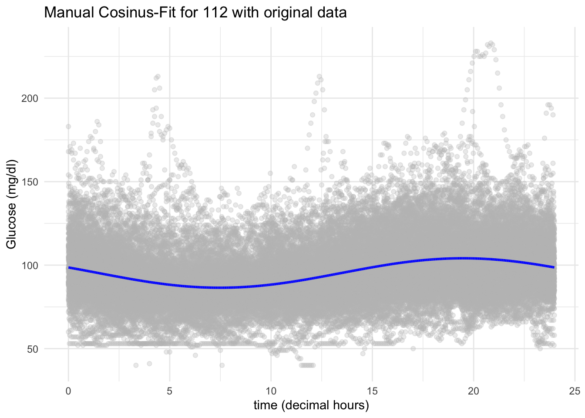
Comparison of outputs of the different fits
summary(cos_fit_102)
Formula: Avg_Glucose ~ A * cos(2 * pi/24 * Hour_Rounded + phi) + C
Parameters:
Estimate Std. Error t value Pr(>|t|)
A -6.37619 0.30189 -21.12 <2e-16 ***
phi -1.17838 0.04735 -24.89 <2e-16 ***
C 99.79182 0.21347 467.47 <2e-16 ***
---
Signif. codes: 0 '***' 0.001 '**' 0.01 '*' 0.05 '.' 0.1 ' ' 1
Residual standard error: 1.479 on 45 degrees of freedom
Number of iterations to convergence: 8
Achieved convergence tolerance: 7.629e-06summary(glucose_fit_102)Raw model coefficients:
estimate standard.error lower.CI upper.CI p.value
(Intercept) 99.7942 0.0503 99.6956 99.8928 0
rrr -1.6710 0.0711 -1.8103 -1.5318 0
sss -6.1713 0.0712 -6.3108 -6.0317 0
***********************
Transformed coefficients:
estimate standard.error lower.CI upper.CI p.value
(Intercept) 99.7942 0.0503 99.6956 99.8928 0
amp 6.3935 0.0712 6.2540 6.5330 0
acr 1.3064 0.0111 1.2846 1.3282 0summary(cos_fit_102_orig)
Formula: `Glucose (mg/dl)` ~ A * cos(2 * pi/24 * dec.time + phi) + C
Parameters:
Estimate Std. Error t value Pr(>|t|)
A 6.39349 0.07116 89.84 <2e-16 ***
phi -4.44795 0.01112 -399.88 <2e-16 ***
C 99.79418 0.05030 1983.89 <2e-16 ***
---
Signif. codes: 0 '***' 0.001 '**' 0.01 '*' 0.05 '.' 0.1 ' ' 1
Residual standard error: 13.98 on 77228 degrees of freedom
Number of iterations to convergence: 10
Achieved convergence tolerance: 1.922e-07summary(cos_fit_104)
Formula: Avg_Glucose ~ A * cos(2 * pi/24 * Hour_Rounded + phi) + C
Parameters:
Estimate Std. Error t value Pr(>|t|)
A 3.48348 0.34795 10.01 5.02e-13 ***
phi 1.41791 0.09989 14.20 < 2e-16 ***
C 100.01349 0.24604 406.49 < 2e-16 ***
---
Signif. codes: 0 '***' 0.001 '**' 0.01 '*' 0.05 '.' 0.1 ' ' 1
Residual standard error: 1.705 on 45 degrees of freedom
Number of iterations to convergence: 7
Achieved convergence tolerance: 4.319e-07summary(glucose_fit_104)Raw model coefficients:
estimate standard.error lower.CI upper.CI p.value
(Intercept) 100.0121 0.0489 99.9163 100.1078 0
rrr 0.9574 0.0691 0.8220 1.0928 0
sss -3.3675 0.0691 -3.5029 -3.2320 0
***********************
Transformed coefficients:
estimate standard.error lower.CI upper.CI p.value
(Intercept) 100.0121 0.0489 99.9163 100.1078 0
amp 3.5009 0.0691 3.3654 3.6364 0
acr -1.2938 0.0197 -1.3325 -1.2551 0summary(cos_fit_104_orig)
Formula: `Glucose (mg/dl)` ~ A * cos(2 * pi/24 * dec.time + phi) + C
Parameters:
Estimate Std. Error t value Pr(>|t|)
A 3.50090 0.06912 50.65 <2e-16 ***
phi 1.29380 0.01973 65.56 <2e-16 ***
C 100.01206 0.04886 2046.78 <2e-16 ***
---
Signif. codes: 0 '***' 0.001 '**' 0.01 '*' 0.05 '.' 0.1 ' ' 1
Residual standard error: 14.79 on 91590 degrees of freedom
Number of iterations to convergence: 7
Achieved convergence tolerance: 1.57e-09summary(cos_fit_107)
Formula: Avg_Glucose ~ A * cos(2 * pi/24 * Hour_Rounded + phi) + C
Parameters:
Estimate Std. Error t value Pr(>|t|)
A 6.1279 0.9707 6.313 1.07e-07 ***
phi 1.1679 0.1584 7.373 2.86e-09 ***
C 99.8717 0.6864 145.504 < 2e-16 ***
---
Signif. codes: 0 '***' 0.001 '**' 0.01 '*' 0.05 '.' 0.1 ' ' 1
Residual standard error: 4.755 on 45 degrees of freedom
Number of iterations to convergence: 5
Achieved convergence tolerance: 1.371e-06summary(glucose_fit_107)Raw model coefficients:
estimate standard.error lower.CI upper.CI p.value
(Intercept) 99.8672 0.0702 99.7297 100.0047 0
rrr 3.1165 0.0992 2.9221 3.3108 0
sss -5.2599 0.0993 -5.4545 -5.0653 0
***********************
Transformed coefficients:
estimate standard.error lower.CI upper.CI p.value
(Intercept) 99.8672 0.0702 99.7297 100.0047 0
amp 6.1138 0.0993 5.9192 6.3085 0
acr -1.0359 0.0162 -1.0677 -1.0041 0summary(cos_fit_107_orig)
Formula: `Glucose (mg/dl)` ~ A * cos(2 * pi/24 * dec.time + phi) + C
Parameters:
Estimate Std. Error t value Pr(>|t|)
A 6.11375 0.09932 61.56 <2e-16 ***
phi 1.03591 0.01622 63.88 <2e-16 ***
C 99.86721 0.07017 1423.26 <2e-16 ***
---
Signif. codes: 0 '***' 0.001 '**' 0.01 '*' 0.05 '.' 0.1 ' ' 1
Residual standard error: 16.62 on 56107 degrees of freedom
Number of iterations to convergence: 5
Achieved convergence tolerance: 3.927e-06summary(cos_fit_108)
Formula: Avg_Glucose ~ A * cos(2 * pi/24 * Hour_Rounded + phi) + C
Parameters:
Estimate Std. Error t value Pr(>|t|)
A -12.35366 0.72300 -17.09 <2e-16 ***
phi 5.08807 0.05853 86.94 <2e-16 ***
C 105.60168 0.51124 206.56 <2e-16 ***
---
Signif. codes: 0 '***' 0.001 '**' 0.01 '*' 0.05 '.' 0.1 ' ' 1
Residual standard error: 3.542 on 45 degrees of freedom
Number of iterations to convergence: 8
Achieved convergence tolerance: 4.402e-06summary(glucose_fit_108)Raw model coefficients:
estimate standard.error lower.CI upper.CI p.value
(Intercept) 105.5868 0.1440 105.3046 105.8690 0
rrr -2.9873 0.2036 -3.3864 -2.5881 0
sss -12.0471 0.2036 -12.4461 -11.6481 0
***********************
Transformed coefficients:
estimate standard.error lower.CI upper.CI p.value
(Intercept) 105.5868 0.1440 105.3046 105.8690 0
amp 12.4119 0.2034 12.0133 12.8105 0
acr 1.3277 0.0164 1.2955 1.3599 0summary(cos_fit_108_orig)
Formula: `Glucose (mg/dl)` ~ A * cos(2 * pi/24 * dec.time + phi) + C
Parameters:
Estimate Std. Error t value Pr(>|t|)
A 12.41194 0.20337 61.03 <2e-16 ***
phi 20.66341 0.01642 1258.09 <2e-16 ***
C 105.58679 0.14398 733.36 <2e-16 ***
---
Signif. codes: 0 '***' 0.001 '**' 0.01 '*' 0.05 '.' 0.1 ' ' 1
Residual standard error: 15.79 on 12032 degrees of freedom
Number of iterations to convergence: 11
Achieved convergence tolerance: 2.572e-07summary(cos_fit_109)
Formula: Avg_Glucose ~ A * cos(2 * pi/24 * Hour_Rounded + phi) + C
Parameters:
Estimate Std. Error t value Pr(>|t|)
A 7.87606 0.40760 19.32 <2e-16 ***
phi 76.95992 0.05175 1487.11 <2e-16 ***
C 102.10521 0.28821 354.27 <2e-16 ***
---
Signif. codes: 0 '***' 0.001 '**' 0.01 '*' 0.05 '.' 0.1 ' ' 1
Residual standard error: 1.997 on 45 degrees of freedom
Number of iterations to convergence: 6
Achieved convergence tolerance: 1.956e-06summary(glucose_fit_109)Raw model coefficients:
estimate standard.error lower.CI upper.CI p.value
(Intercept) 102.1091 0.0606 101.9904 102.2278 0
rrr 1.0739 0.0857 0.9060 1.2418 0
sss -7.8340 0.0856 -8.0019 -7.6661 0
***********************
Transformed coefficients:
estimate standard.error lower.CI upper.CI p.value
(Intercept) 102.1091 0.0606 101.9904 102.2278 0
amp 7.9073 0.0856 7.7394 8.0751 0
acr -1.4346 0.0108 -1.4558 -1.4133 0summary(cos_fit_109_orig)
Formula: `Glucose (mg/dl)` ~ A * cos(2 * pi/24 * dec.time + phi) + C
Parameters:
Estimate Std. Error t value Pr(>|t|)
A 7.90726 0.08563 92.35 <2e-16 ***
phi 1.43456 0.01083 132.41 <2e-16 ***
C 102.10915 0.06056 1686.00 <2e-16 ***
---
Signif. codes: 0 '***' 0.001 '**' 0.01 '*' 0.05 '.' 0.1 ' ' 1
Residual standard error: 12.87 on 45167 degrees of freedom
Number of iterations to convergence: 7
Achieved convergence tolerance: 2.21e-09summary(cos_fit_112)
Formula: Avg_Glucose ~ A * cos(2 * pi/24 * Hour_Rounded + phi) + C
Parameters:
Estimate Std. Error t value Pr(>|t|)
A 8.7703 0.2000 43.85 <2e-16 ***
phi 1.3145 0.0228 57.65 <2e-16 ***
C 95.2858 0.1414 673.83 <2e-16 ***
---
Signif. codes: 0 '***' 0.001 '**' 0.01 '*' 0.05 '.' 0.1 ' ' 1
Residual standard error: 0.9797 on 45 degrees of freedom
Number of iterations to convergence: 6
Achieved convergence tolerance: 3.859e-06summary(glucose_fit_112)Raw model coefficients:
estimate standard.error lower.CI upper.CI p.value
(Intercept) 95.2850 0.0603 95.1669 95.4031 0
rrr 3.3158 0.0852 3.1488 3.4827 0
sss -8.1667 0.0853 -8.3339 -7.9996 0
***********************
Transformed coefficients:
estimate standard.error lower.CI upper.CI p.value
(Intercept) 95.2850 0.0603 95.1669 95.4031 0
amp 8.8142 0.0854 8.6468 8.9815 0
acr -1.1851 0.0097 -1.2040 -1.1662 0summary(cos_fit_112_orig)
Formula: `Glucose (mg/dl)` ~ A * cos(2 * pi/24 * dec.time + phi) + C
Parameters:
Estimate Std. Error t value Pr(>|t|)
A 8.814174 0.085380 103.2 <2e-16 ***
phi 1.185119 0.009654 122.8 <2e-16 ***
C 95.285018 0.060273 1580.9 <2e-16 ***
---
Signif. codes: 0 '***' 0.001 '**' 0.01 '*' 0.05 '.' 0.1 ' ' 1
Residual standard error: 15.89 on 69479 degrees of freedom
Number of iterations to convergence: 5
Achieved convergence tolerance: 3.39e-07Trouble Shooting: Cosine Fit
# 1. Zeitreihe erzeugen
datetime <- seq(
from = as.POSIXct("2025-01-01 00:00:00"),
to = as.POSIXct("2025-01-07 23:30:00"),
by = "30 min"
)
# 2. Dezimalzeit für 24h-Periode
dec.time <- as.numeric(format(datetime, "%H")) + as.numeric(format(datetime, "%M")) / 60
# 3. Cosinus mit 24h-Periode, Maximum um 18 Uhr
mesor <- 100
amplitude <- 20
phase_shift <- pi/2 # Maximum bei 18 Uhr
glucose <- mesor + amplitude * cos(2 * pi * dec.time / 24 + phase_shift)
# 4. In DataFrame
synthetic_24h <- data.frame(datetime, dec.time, glucose)
# 5. Plot
ggplot(synthetic_24h, aes(x = datetime, y = glucose)) +
geom_line(color = "darkorange3") +
labs(
title = "Synthetic Glucose Curve (Min at 6:00 , Max bei 18:00)",
y = "Glucose (mg/dl)", x = "Time (days)"
) +
theme_minimal()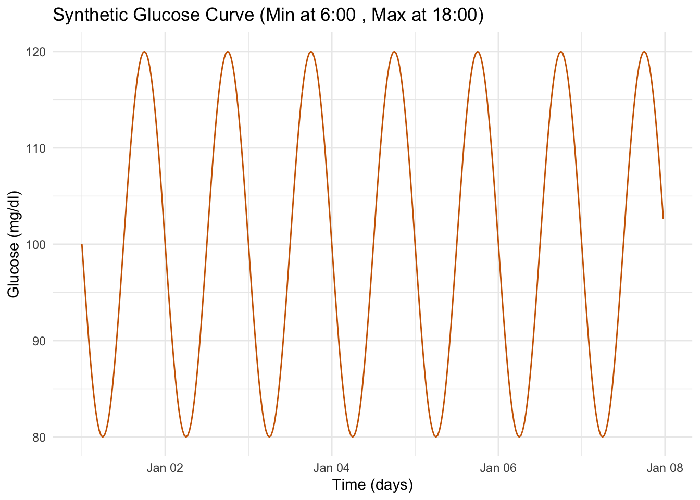
# 5. Cosinor-Komponenten
synthetic_24h <- synthetic_24h %>%
mutate(
cos_part = cos(2 * pi * dec.time / 24),
sin_part = sin(2 * pi * dec.time / 24)
)
### ----- Manueller lm-Fit -----
fit_lm <- lm(glucose ~ cos_part + sin_part, data = synthetic_24h)
coefs_lm <- coef(fit_lm)
intercept_l <- coefs_lm["(Intercept)"]
beta <- coefs_lm["cos_part"]
gamma <- coefs_lm["sin_part"]
amp_l <- sqrt(beta^2 + gamma^2)
acr_rad_l <- atan2(gamma, beta) # HIER: normalerweise atan2(-gamma, beta), wenn man das minus rausnimmt, macht der Output Sinn
acr_hr_l <- (acr_rad_l * 24 / (2 * pi)) %% 24
max_time_l <- acr_hr_l
min_time_l <- (acr_hr_l + 12) %% 24
### ----- cosinor.lm-Fit -----
fit_cos <- cosinor.lm(glucose ~ time(dec.time), data = synthetic_24h, period = 24)
coefs_cos <- coef(fit_cos, transformed = TRUE)
intercept_cos <- coefs_cos["(Intercept)"]
amp_cos <- coefs_cos["amp"]
acr_rad_cos <- coefs_cos["acr"]
acr_hr_cos <- (acr_rad_cos * 24) / (2 * pi)
max_time_cos <- acr_hr_cos %% 24
min_time_cos <- (acr_hr_cos + 12) %% 24
### ----- Zusammenfassung in DataFrame -----
summary_df <- data.frame(
Window_Start = as.POSIXct("2025-01-01 00:00:00"),
# manuelles Modell
Intercept_lm = intercept_l,
Amp_lm = amp_l,
Acrophase_Rad_lm = acr_rad_l,
Acrophase_Hours_lm= acr_hr_l,
MaxTime_Hours_lm = max_time_l,
MinTime_Hours_lm = min_time_l,
# cosinor.lm Modell
Intercept_cos = intercept_cos,
Amp_cos = amp_cos,
Acrophase_Rad_cos = acr_rad_cos,
Acrophase_Hours_cos = acr_hr_cos,
MaxTime_Hours_cos = max_time_cos,
MinTime_Hours_cos = min_time_cos
)
######################## das ganze für den Datensatz der ID 102 ausprobieren
# Daten für Patient ID 102 vorbereiten
glucose_fit_102_data <- cleaned_data_deduplicated %>%
filter(ID == "102") %>%
mutate(
datetime = dmy_hm(DeviceTimestamp),
dec.time = hour(datetime) + minute(datetime) / 60
)
# 5. Cosinor-Komponenten
glucose_fit_102_data <- glucose_fit_102_data %>%
mutate(
cos_part = cos(2 * pi * dec.time / 24),
sin_part = sin(2 * pi * dec.time / 24)
)
### ----- Manueller lm-Fit -----
fit_lm <- lm(`Glucose (mg/dl)` ~ cos_part + sin_part, data = glucose_fit_102_data)
coefs_lm <- coef(fit_lm)
intercept_l <- coefs_lm["(Intercept)"]
beta <- coefs_lm["cos_part"]
gamma <- coefs_lm["sin_part"]
amp_l <- sqrt(beta^2 + gamma^2)
acr_rad_l <- atan2(gamma, beta) # HIER: normalerweise atan2(-gamma, beta)
acr_hr_l <- (acr_rad_l * 24 / (2 * pi)) %% 24
max_time_l <- acr_hr_l
min_time_l <- (acr_hr_l + 12) %% 24
### ----- cosinor.lm-Fit -----
fit_cos <- cosinor.lm(`Glucose (mg/dl)` ~ time(dec.time), data = glucose_fit_102_data, period = 24)
coefs_cos <- coef(fit_cos, transformed = TRUE)
intercept_cos <- coefs_cos["(Intercept)"]
amp_cos <- coefs_cos["amp"]
acr_rad_cos <- coefs_cos["acr"]
acr_hr_cos <- (acr_rad_cos * 24 / (2 * pi)) %% 24 # Konsistent: %% 24 hier anwenden
max_time_cos <- acr_hr_cos
min_time_cos <- (acr_hr_cos + 12) %% 24
### ----- Zusammenfassung in DataFrame -----
summary_df_102 <- data.frame(
Patient_ID = "102",
Window_Start = min(glucose_fit_102_data$datetime, na.rm = TRUE),
Window_End = max(glucose_fit_102_data$datetime, na.rm = TRUE),
N_Observations = nrow(glucose_fit_102_data),
# manuelles Modell
Intercept_lm = intercept_l,
Amp_lm = amp_l,
Acrophase_Rad_lm = acr_rad_l,
Acrophase_Hours_lm = acr_hr_l,
MaxTime_Hours_lm = max_time_l,
MinTime_Hours_lm = min_time_l,
# cosinor.lm Modell
Intercept_cos = intercept_cos,
Amp_cos = amp_cos,
Acrophase_Rad_cos = acr_rad_cos,
Acrophase_Hours_cos = acr_hr_cos,
MaxTime_Hours_cos = max_time_cos,
MinTime_Hours_cos = min_time_cos
)Cosine fit with lm()
Description: Fit over whole dataset
# Step 1: Prepare datetime and Cosinor components
glucose_fit_data <- cleaned_data_deduplicated %>%
mutate(
datetime = dmy_hm(DeviceTimestamp, tz = "Europe/Berlin"),
dec.time = hour(datetime) + minute(datetime) / 60,
cos_part = cos(2 * pi * dec.time / 24),
sin_part = sin(2 * pi * dec.time / 24)
)
# Step 2: Initialize list to collect data with predictions
all_predictions <- list()
summary_list <- list()
ids <- unique(glucose_fit_data$ID)
# Step 3: Loop through each ID
for (id in ids) {
df <- glucose_fit_data %>% filter(ID == id)
# Fit Cosinor model
fit_lm <- lm(`Glucose (mg/dl)` ~ cos_part + sin_part, data = df)
df$predicted_glucose <- predict(fit_lm)
# Save predicted data
all_predictions[[length(all_predictions) + 1]] <- df
# Save summary (optional)
coefs <- coef(fit_lm)
intercept <- coefs["(Intercept)"]
beta <- coefs["cos_part"]
gamma <- coefs["sin_part"]
amp <- sqrt(beta^2 + gamma^2)
acr_rad <- atan2(gamma, beta)
acr_hr <- (acr_rad * 24 / (2 * pi)) %% 24
max_time <- acr_hr
min_time <- (acr_hr + 12) %% 24
max_value <- intercept + amp
min_value <- intercept - amp
summary_list[[length(summary_list) + 1]] <- data.frame(
Patient_ID = id,
Window_Start = min(df$datetime, na.rm = TRUE),
Window_End = max(df$datetime, na.rm = TRUE),
N_Observations = nrow(df),
Intercept_lm = intercept,
Amp_lm = amp,
Acrophase_Rad_lm = acr_rad,
Acrophase_Hours_lm = acr_hr,
MaxTime_Hours_lm = max_time,
MinTime_Hours_lm = min_time,
MaxValue_lm = max_value,
MinValue_lm = min_value
)
}
# Step 4: Combine data
cosinor_summary <- do.call(rbind, summary_list)
plot_data <- bind_rows(all_predictions)
plot_data$ID <- as.factor(plot_data$ID) # for facetting
# Step 5: Plot with facets
ggplot(plot_data, aes(x = dec.time)) +
geom_point(aes(y = `Glucose (mg/dl)`), color = "blue", alpha = 0.4, size = 1.2) +
geom_line(aes(y = predicted_glucose), color = "red", size = 1) +
facet_wrap(~ ID, scales = "free_y") +
labs(
title = "Cosinor Fits for All Patients",
x = "Time of Day (decimal hours)",
y = "Glucose (mg/dl)"
) +
theme_minimal() +
theme(strip.text = element_text(face = "bold"))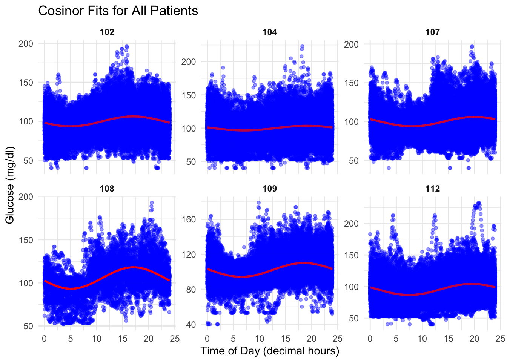
Description: Fit for every day
# Step 1: Prepare datetime and Cosinor components
glucose_fit_data <- cleaned_data_deduplicated %>%
mutate(
datetime = dmy_hm(DeviceTimestamp, tz = "Europe/Berlin"),
date = as.Date(datetime),
dec.time = hour(datetime) + minute(datetime) / 60,
cos_part = cos(2 * pi * dec.time / 24),
sin_part = sin(2 * pi * dec.time / 24)
)
# Step 2: Initialize collectors
all_predictions <- list()
summary_list <- list()
# Step 3: Loop over each ID and Date
ids <- unique(glucose_fit_data$ID)
for (id in ids) {
df_id <- glucose_fit_data %>% filter(ID == id)
dates <- unique(df_id$date)
for (d in dates) {
df_day <- df_id %>% filter(date == d)
# Only fit if enough data
if (nrow(df_day) < 3 || all(is.na(df_day$`Glucose (mg/dl)`))) next
fit <- lm(`Glucose (mg/dl)` ~ cos_part + sin_part, data = df_day)
df_day$predicted_glucose <- predict(fit)
# Store prediction
all_predictions[[length(all_predictions) + 1]] <- df_day
# Cosinor summary
coefs <- coef(fit)
intercept <- coefs["(Intercept)"]
beta <- coefs["cos_part"]
gamma <- coefs["sin_part"]
amp <- sqrt(beta^2 + gamma^2)
acr_rad <- atan2(gamma, beta)
acr_hr <- (acr_rad * 24 / (2 * pi)) %% 24
summary_list[[length(summary_list) + 1]] <- data.frame(
Patient_ID = id,
Date = d,
Intercept = intercept,
Amplitude = amp,
Acrophase_Rad = acr_rad,
Acrophase_Hours = acr_hr,
N_Obs = nrow(df_day)
)
}
}
# Step 4: Combine results
cosinor_daily_summary <- do.call(rbind, summary_list)
cosinor_daily_predictions <- bind_rows(all_predictions)Description: Check fit with 14-day plot
## ID 102
# Filter for ID 102 and select first 14 dates
df_102_first14 <- cosinor_daily_predictions %>%
filter(ID == "102") %>%
mutate(date = as.Date(datetime)) %>%
filter(date %in% sort(unique(date))[1:14]) # keep only first 14 days
# Plot with facets
ggplot(df_102_first14, aes(x = datetime)) +
geom_point(aes(y = `Glucose (mg/dl)`), alpha = 0.4, size = 1.2, color = "blue") +
geom_line(aes(y = predicted_glucose), color = "red", size = 1) +
labs(
title = "Daily Cosinor Fits for ID 102 – First 14 Days",
x = "Time of Day",
y = "Glucose (mg/dl)"
) +
scale_x_datetime(date_labels = "%H:%M", date_breaks = "3 hours") +
theme_minimal(base_size = 12)+
theme(
axis.text.x = element_text(angle = 45, hjust = 1))
## ID 104
# Filter for ID 104 and select first 14 dates
df_104_first14 <- cosinor_daily_predictions %>%
filter(ID == "104") %>%
mutate(date = as.Date(datetime)) %>%
filter(date %in% sort(unique(date))[1:14]) # keep only first 14 days
# Plot with facets
ggplot(df_104_first14, aes(x = datetime)) +
geom_point(aes(y = `Glucose (mg/dl)`), alpha = 0.4, size = 1.2, color = "blue") +
geom_line(aes(y = predicted_glucose), color = "red", size = 1) +
labs(
title = "Daily Cosinor Fits for ID 104 – First 14 Days",
x = "Time of Day",
y = "Glucose (mg/dl)"
) +
scale_x_datetime(date_labels = "%H:%M", date_breaks = "3 hours") +
theme_minimal(base_size = 12)+
theme(
axis.text.x = element_text(angle = 45, hjust = 1))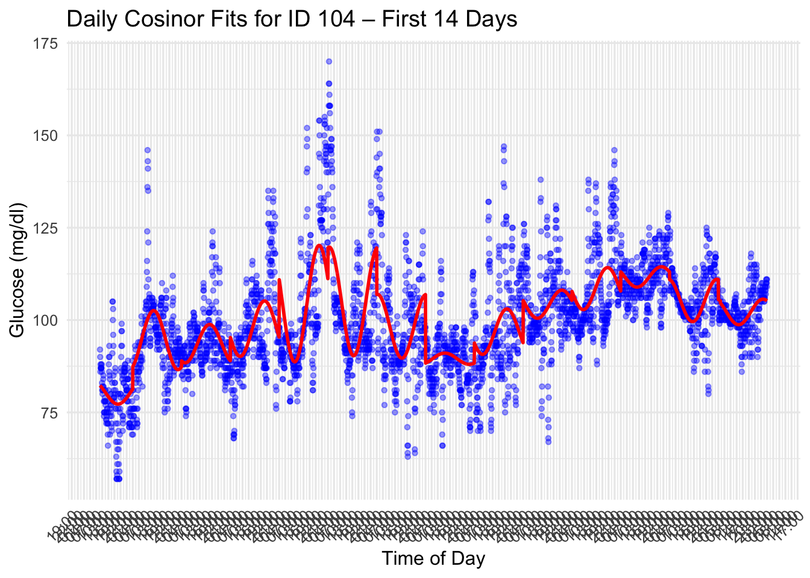
## ID 107
# Filter for ID 107 and select first 14 dates
df_107_first14 <- cosinor_daily_predictions %>%
filter(ID == "107") %>%
mutate(date = as.Date(datetime)) %>%
filter(date %in% sort(unique(date))[1:14]) # keep only first 14 days
# Plot with facets
ggplot(df_107_first14, aes(x = datetime)) +
geom_point(aes(y = `Glucose (mg/dl)`), alpha = 0.4, size = 1.2, color = "blue") +
geom_line(aes(y = predicted_glucose), color = "red", size = 1) +
labs(
title = "Daily Cosinor Fits for ID 107 – First 14 Days",
x = "Time of Day",
y = "Glucose (mg/dl)"
) +
scale_x_datetime(date_labels = "%H:%M", date_breaks = "3 hours") +
theme_minimal(base_size = 12)+
theme(
axis.text.x = element_text(angle = 45, hjust = 1))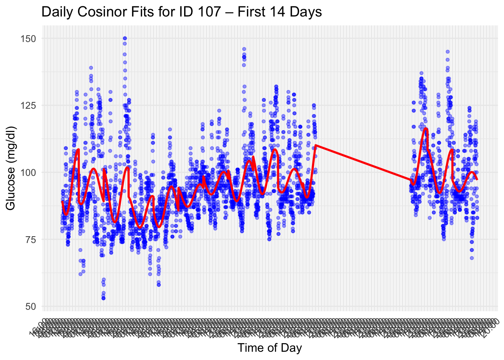
## ID 108
# Filter for ID 108 and select first 14 dates
df_108_first14 <- cosinor_daily_predictions %>%
filter(ID == "108") %>%
mutate(date = as.Date(datetime)) %>%
filter(date %in% sort(unique(date))[1:14]) # keep only first 14 days
# Plot with facets
ggplot(df_108_first14, aes(x = datetime)) +
geom_point(aes(y = `Glucose (mg/dl)`), alpha = 0.4, size = 1.2, color = "blue") +
geom_line(aes(y = predicted_glucose), color = "red", size = 1) +
labs(
title = "Daily Cosinor Fits for ID 108 – First 14 Days",
x = "Time of Day",
y = "Glucose (mg/dl)"
) +
scale_x_datetime(date_labels = "%H:%M", date_breaks = "3 hours") +
theme_minimal(base_size = 12)+
theme(
axis.text.x = element_text(angle = 45, hjust = 1))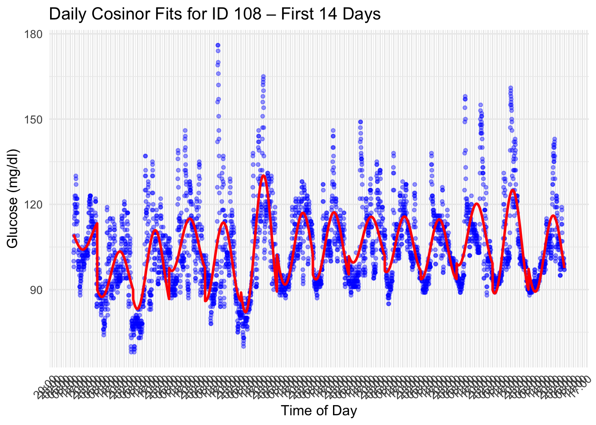
## ID 109
# Filter for ID 109 and select first 14 dates
df_109_first14 <- cosinor_daily_predictions %>%
filter(ID == "109") %>%
mutate(date = as.Date(datetime)) %>%
filter(date %in% sort(unique(date))[1:14]) # keep only first 14 days
# Plot with facets
ggplot(df_109_first14, aes(x = datetime)) +
geom_point(aes(y = `Glucose (mg/dl)`), alpha = 0.4, size = 1.2, color = "blue") +
geom_line(aes(y = predicted_glucose), color = "red", size = 1) +
labs(
title = "Daily Cosinor Fits for ID 109 – First 14 Days",
x = "Time of Day",
y = "Glucose (mg/dl)"
) +
scale_x_datetime(date_labels = "%H:%M", date_breaks = "3 hours") +
theme_minimal(base_size = 12)+
theme(
axis.text.x = element_text(angle = 45, hjust = 1))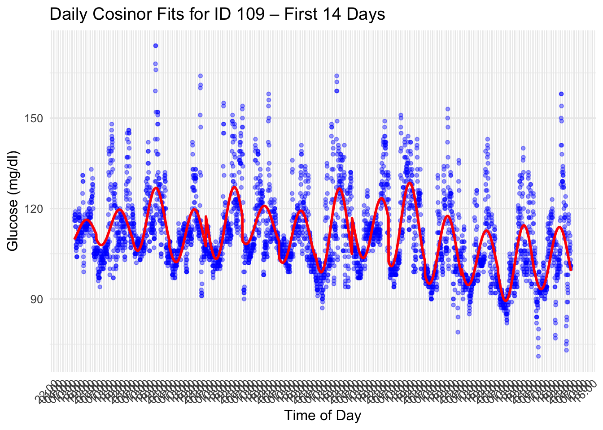
## ID 112
# Filter for ID 112 and select second 14 dates
df_112_first14 <- cosinor_daily_predictions %>%
filter(ID == "112") %>%
mutate(date = as.Date(datetime)) %>%
filter(date %in% sort(unique(date))[15:28]) # keep only second 14 days
# Plot with facets
ggplot(df_112_first14, aes(x = datetime)) +
geom_point(aes(y = `Glucose (mg/dl)`), alpha = 0.4, size = 1.2, color = "blue") +
geom_line(aes(y = predicted_glucose), color = "red", size = 1) +
labs(
title = "Daily Cosinor Fits for ID 112 – Second 14 Days",
x = "Time of Day",
y = "Glucose (mg/dl)"
) +
scale_x_datetime(date_labels = "%H:%M", date_breaks = "3 hours") +
theme_minimal(base_size = 12)+
theme(
axis.text.x = element_text(angle = 45, hjust = 1))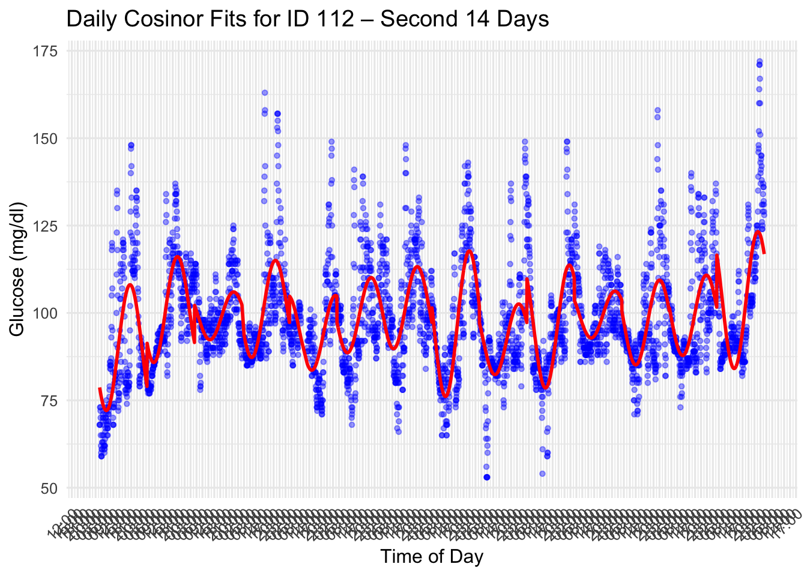
Moving window
Moving Window with cosinor.lm()
Description: Cos for 102: Moving window for 102
# Storage for results
moving_window_102 <- data.frame(
Window_Start = as.POSIXct(character()),
Amp = numeric(),
Acrophase_Rad = numeric(),
Acrophase_Raw = numeric(),
Acrophase_Raw_Hours = numeric(),
Max_Time_Hours = numeric(),
Min_Time_Hours = numeric(),
Intercept = numeric(),
stringsAsFactors = FALSE
)
# Time boundaries
start_time_mv_102 <- min(glucose_fit_102_data$datetime)
end_time_mv_102 <- max(glucose_fit_102_data$datetime)
# Window setup
window_length <- days(3)
step_size <- days(1)
current_start_102 <- start_time_mv_102
while (current_start_102 + window_length <= end_time_mv_102) {
current_end_102 <- current_start_102 + window_length
# Filter window
window_data_102 <- glucose_fit_102_data %>%
filter(datetime >= current_start_102 & datetime < current_end_102)
# Skip small windows
if (nrow(window_data_102) < 100) {
current_start_102 <- current_start_102 + step_size
next
}
# Try fitting model
fit_102 <- tryCatch({
cosinor.lm(`Glucose (mg/dl)` ~ time(dec.time), data = window_data_102, period = 24)
}, error = function(e) NA)
# Proceed only if fit succeeded
if (inherits(fit_102, "cosinor.lm")) {
coefs_102 <- coef(fit_102, transformed = TRUE)
# Safe extraction
if (is.matrix(coefs_102)) {
amp_102 <- coefs_102["amp", "estimate"]
acr_102 <- coefs_102["acr", "estimate"]
intercept_102 <- coefs_102["(Intercept)", "estimate"]
} else if (is.vector(coefs_102)) {
amp_102 <- coefs_102["amp"]
acr_102 <- coefs_102["acr"]
intercept_102 <- coefs_102["(Intercept)"]
} else {
current_start_102 <- current_start_102 + step_size
next
}
# Raw acrophase in hours
acrophase_raw_102 <- (acr_102 * 24) / (2 * pi)
# Calculate max time (adjusted by 12h if amplitude is negative)
max_time_102 <- ((acrophase_raw_102 + ifelse(amp_102 < 0, 12, 0)) + 24) %% 24
min_time_102 <- (max_time_102 + 12) %% 24
# Store results
moving_window_102 <- rbind(moving_window_102, data.frame(
Window_Start = current_start_102,
Amp = amp_102,
Acrophase_Rad = acr_102,
Acrophase_Raw = acrophase_raw_102,
Acrophase_Raw_Hours = (acrophase_raw_102 + 24) %% 24,
Max_Time_Hours = max_time_102,
Min_Time_Hours = min_time_102,
Intercept = intercept_102
))
}
# Move to next window
current_start_102 <- current_start_102 + step_size
}Description: Cos for 102: Plot
ggplot(moving_window_102, aes(x = Window_Start)) +
geom_line(aes(y = Max_Time_Hours, color = "Maximum")) +
geom_line(aes(y = Min_Time_Hours, color = "Minimum")) +
geom_point(aes(y = Max_Time_Hours, color = "Maximum")) +
geom_point(aes(y = Min_Time_Hours, color = "Minimum")) +
scale_color_manual(values = c("Maximum" = "red", "Minimum" = "blue")) +
scale_y_continuous(breaks = seq(0, 24, 2), limits = c(0, 24)) +
labs(
title = "Diurnal Pattern of Maximum and Minimum (Glucose Cosinor)",
x = "Window Start Time",
y = "Time of Day (Hours)",
color = "Time Point"
) +
theme_minimal()
Description: Moving Window Cos for 102: min. 400 datapoints are needed to calculate the cos + using package cosinor.lm()
# Empty dataframe to store results
moving_window_102 <- data.frame(
Window_Start = as.POSIXct(character()),
Amp = numeric(),
Acrophase_Rad = numeric(),
Acrophase_Raw = numeric(),
Acrophase_Raw_Hours = numeric(),
Max_Time_Hours = numeric(),
Min_Time_Hours = numeric(),
Intercept = numeric(),
stringsAsFactors = FALSE
)
# Define time boundaries
start_time_mv_102 <- min(glucose_fit_102_data$datetime)
end_time_mv_102 <- max(glucose_fit_102_data$datetime)
# Window and step sizes
window_length <- days(3)
step_size <- days(1)
current_start_102 <- start_time_mv_102
# Sliding window analysis
while (current_start_102 + window_length <= end_time_mv_102) {
current_end_102 <- current_start_102 + window_length
# Filter data within window
window_data_102 <- glucose_fit_102_data %>%
filter(datetime >= current_start_102 & datetime < current_end_102)
# Skip windows with too few data points
if (nrow(window_data_102) < 400) {
current_start_102 <- current_start_102 + step_size
next
}
# Fit cosinor model
fit_102 <- tryCatch({
cosinor.lm(`Glucose (mg/dl)` ~ time(dec.time), data = window_data_102, period = 24)
}, error = function(e) NA)
if (inherits(fit_102, "cosinor.lm")) {
coefs_102 <- coef(fit_102, transformed = TRUE)
# Extract coefficients
if (is.matrix(coefs_102)) {
amp_102 <- coefs_102["amp", "estimate"]
acr_102 <- coefs_102["acr", "estimate"]
intercept_102 <- coefs_102["(Intercept)", "estimate"]
} else if (is.vector(coefs_102)) {
amp_102 <- coefs_102["amp"]
acr_102 <- coefs_102["acr"]
intercept_102 <- coefs_102["(Intercept)"]
} else {
current_start_102 <- current_start_102 + step_size
next
}
# Raw acrophase in hours
acrophase_raw_102 <- (acr_102 * 24) / (2 * pi)
acrophase_norm_102 <- (acrophase_raw_102 + 24) %% 24
# Max and min time depending on amplitude sign
if (amp_102 >= 0) {
max_time_102 <- acrophase_norm_102
min_time_102 <- (acrophase_norm_102 + 12) %% 24
} else {
min_time_102 <- acrophase_norm_102
max_time_102 <- (acrophase_norm_102 + 12) %% 24
}
# Ensure max > 12 and min < 12 (if desired visual convention)
if (max_time_102 < 12) {
temp_102 <- max_time_102
max_time_102 <- min_time_102
min_time_102 <- temp_102
}
# Store results
moving_window_102 <- rbind(moving_window_102, data.frame(
Window_Start = current_start_102,
Amp = amp_102,
Acrophase_Rad = acr_102,
Acrophase_Raw = acrophase_raw_102,
Acrophase_Raw_Hours = acrophase_norm_102,
Max_Time_Hours = max_time_102,
Min_Time_Hours = min_time_102,
Intercept = intercept_102
))
}
# Move to next window
current_start_102 <- current_start_102 + step_size
}Description: Moving Window Cos for 102: Plot
ggplot(moving_window_102, aes(x = Window_Start)) +
geom_line(aes(y = Max_Time_Hours, color = "Maximum"), size = 0.5) +
geom_line(aes(y = Min_Time_Hours, color = "Minimum"), size = 0.5) +
geom_point(aes(y = Max_Time_Hours, color = "Maximum"), size = 1) +
geom_point(aes(y = Min_Time_Hours, color = "Minimum"), size = 1) +
scale_color_manual(
name = "Time Point",
values = c("Maximum" = "red", "Minimum" = "blue")
) +
scale_y_continuous(
breaks = seq(0, 24, 2),
limits = c(0, 24),
expand = c(0, 0)
) +
labs(
title = "Diurnal Timing of Maximum and Minimum (Glucose Cosinor)",
x = "Window Start Time",
y = "Time of Day (Hours)"
) +
theme_minimal(base_size = 12) +
theme(legend.position = "bottom")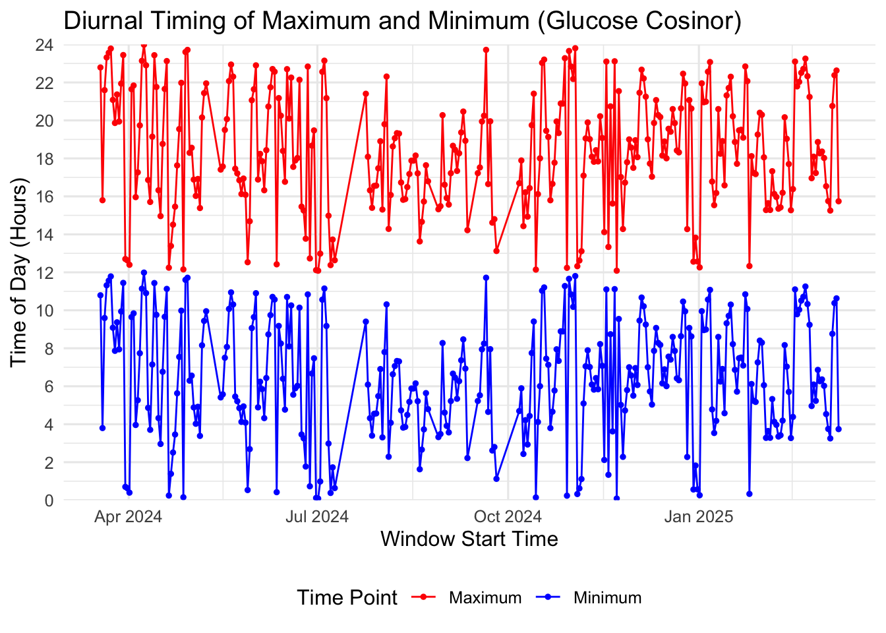
Description: Moving Window Cos for 102 with lm
# Empty Dataframe to store results
moving_window_102_l <- data.frame(
Window_Start = as.POSIXct(character()),
Amp = numeric(),
Acrophase_Rad = numeric(),
Acrophase_Raw = numeric(),
Acrophase_Raw_Hours = numeric(),
Max_Time_Hours = numeric(),
Min_Time_Hours = numeric(),
Intercept = numeric(),
stringsAsFactors = FALSE
)
# Defining time boundaries
start_time_mv_102 <- min(glucose_fit_102_data$datetime)
end_time_mv_102 <- max(glucose_fit_102_data$datetime)
# window and step sizes
window_length <- days(3)
step_size <- days(1)
current_start_102 <- start_time_mv_102
# Sliding window loop
while (current_start_102 + window_length <= end_time_mv_102) {
current_end_102 <- current_start_102 + window_length
# Filter Data within window
window_data_102_l <- glucose_fit_102_data %>%
filter(datetime >= current_start_102 & datetime < current_end_102)
# Skip windows with too few data points
if (nrow(window_data_102_l) < 400) {
current_start_102 <- current_start_102 + step_size
next
}
# calculate cosinus components
dec_time_102_l <- window_data_102_l$dec.time
window_data_102_l$cos_part <- cos(2 * pi * dec_time_102_l / 24)
window_data_102_l$sin_part <- sin(2 * pi * dec_time_102_l / 24)
# fit with linear regression
fit_test_102_l <- tryCatch({
lm(`Glucose (mg/dl)` ~ cos_part + sin_part, data = window_data_102_l)
}, error = function(e) NA)
# test
if (!inherits(fit_test_102_l, "lm")) {
current_start_102 <- current_start_102 + step_size
next
}
coefs <- coef(fit_test_102_l)
# skip if NA in relevant coefficents
if (any(is.na(coefs[c("(Intercept)", "cos_part", "sin_part")]))) {
current_start_102 <- current_start_102 + step_size
next
}
# extract coefficients
intercept_102_l <- coefs["(Intercept)"]
beta_102_l <- coefs["cos_part"]
gamma_102_l <- coefs["sin_part"]
# amolitude
amp_102_l <- sqrt(beta_102_l^2 + gamma_102_l^2)
# Acrophase (radiant)
acr_rad_102_l <- atan2(gamma_102_l, beta_102_l) # without minus
# Acrophase (hours)
acrophase_raw_102_l <- (acr_rad_102_l * 24) / (2 * pi)
acrophase_norm_102_l <- (acrophase_raw_102_l + 24) %% 24
# max and min time
max_time_102_l <- acrophase_norm_102_l
min_time_102_l <- (acrophase_norm_102_l + 12) %% 24
# store results
moving_window_102_l <- rbind(moving_window_102_l, data.frame(
Window_Start = current_start_102,
Amp = amp_102_l,
Acrophase_Rad = acr_rad_102_l,
Acrophase_Raw = acrophase_raw_102_l,
Acrophase_Raw_Hours = acrophase_norm_102_l,
Max_Time_Hours = max_time_102_l,
Min_Time_Hours = min_time_102_l,
Intercept = intercept_102_l
))
# next window
current_start_102 <- current_start_102 + step_size
}Description: Data Set for Comparison of cosinor.lm() and lm() method
# Leerer DataFrame zur Speicherung
moving_window_comparison <- data.frame(
Window_Start = as.POSIXct(character()),
Amp_C = numeric(),
Amp_L = numeric(),
Acrophase_Rad_C = numeric(),
Acrophase_Rad_L = numeric(),
Intercept_C = numeric(),
Intercept_L = numeric(),
stringsAsFactors = FALSE
)
# Zeitgrenzen
start_time_mv_102 <- min(glucose_fit_102_data$datetime)
end_time_mv_102 <- max(glucose_fit_102_data$datetime)
# Fenster und Schritt
window_length <- days(3)
step_size <- days(1)
current_start_102 <- start_time_mv_102
# Sliding-Window
while (current_start_102 + window_length <= end_time_mv_102) {
current_end_102 <- current_start_102 + window_length
# Daten filtern
window_data_102_comparison <- glucose_fit_102_data %>%
filter(datetime >= current_start_102 & datetime < current_end_102)
if (nrow(window_data_102_comparison) < 400) {
current_start_102 <- current_start_102 + step_size
next
}
# Cosinor-Teile berechnen
dec_time <- window_data_102_comparison$dec.time
window_data_102_comparison$cos_part <- cos(2 * pi * dec_time / 24)
window_data_102_comparison$sin_part <- sin(2 * pi * dec_time / 24)
# Lineares Modell
fit_test <- tryCatch({
lm(`Glucose (mg/dl)` ~ cos_part + sin_part, data = window_data_102_comparison)
}, error = function(e) NA)
if (!inherits(fit_test, "lm")) {
current_start_102 <- current_start_102 + step_size
next
}
coefs <- coef(fit_test)
if (any(is.na(coefs[c("(Intercept)", "cos_part", "sin_part")]))) {
current_start_102 <- current_start_102 + step_size
next
}
intercept_L <- coefs["(Intercept)"]
beta_102 <- coefs["cos_part"]
gamma_102 <- coefs["sin_part"]
amp_L <- sqrt(beta_102^2 + gamma_102^2)
acr_L_rad <- atan2(gamma_102, beta_102)
# Cosinor-Paketmodell
fit_102 <- tryCatch({
cosinor.lm(`Glucose (mg/dl)` ~ time(dec.time),
data = window_data_102_comparison,
period = 24)
}, error = function(e) NA)
if (inherits(fit_102, "cosinor.lm")) {
coefs_102 <- coef(fit_102, transformed = TRUE)
if (is.matrix(coefs_102)) {
amp_C <- coefs_102["amp", "estimate"]
acr_C_rad <- coefs_102["acr", "estimate"]
intercept_C <- coefs_102["(Intercept)", "estimate"]
} else if (is.vector(coefs_102)) {
amp_C <- coefs_102["amp"]
acr_C_rad <- coefs_102["acr"]
intercept_C <- coefs_102["(Intercept)"]
} else {
current_start_102 <- current_start_102 + step_size
next
}
# Ergebnisse speichern
moving_window_comparison <- rbind(moving_window_comparison, data.frame(
Window_Start = current_start_102,
Amp_C = amp_C,
Amp_L = amp_L,
Acrophase_Rad_C = acr_C_rad,
Acrophase_Rad_L = acr_L_rad,
Intercept_C = intercept_C,
Intercept_L = intercept_L
))
}
current_start_102 <- current_start_102 + step_size
}Description: Moving Window Cos for 104
# Empty dataframe to store results
moving_window_104 <- data.frame(
Window_Start = as.POSIXct(character()),
Amp = numeric(),
Acrophase_Rad = numeric(),
Acrophase_Raw = numeric(),
Acrophase_Raw_Hours = numeric(),
Max_Time_Hours = numeric(),
Min_Time_Hours = numeric(),
Intercept = numeric(),
stringsAsFactors = FALSE
)
# Define time boundaries
start_time_mv_104 <- min(glucose_fit_104_data$datetime)
end_time_mv_104 <- max(glucose_fit_104_data$datetime)
# Window and step sizes
window_length <- days(3)
step_size <- days(1)
current_start_104 <- start_time_mv_104
# Sliding window analysis
while (current_start_104 + window_length <= end_time_mv_104) {
current_end_104 <- current_start_104 + window_length
# Filter data within window
window_data_104 <- glucose_fit_104_data %>%
filter(datetime >= current_start_104 & datetime < current_end_104)
# Skip windows with too few data points
if (nrow(window_data_104) < 400) {
current_start_104 <- current_start_104 + step_size
next
}
# Fit cosinor model
fit_104 <- tryCatch({
cosinor.lm(`Glucose (mg/dl)` ~ time(dec.time), data = window_data_104, period = 24)
}, error = function(e) NA)
if (inherits(fit_104, "cosinor.lm")) {
coefs_104 <- coef(fit_104, transformed = TRUE)
# Extract coefficients
if (is.matrix(coefs_104)) {
amp_104 <- coefs_104["amp", "estimate"]
acr_104 <- coefs_104["acr", "estimate"]
intercept_104 <- coefs_104["(Intercept)", "estimate"]
} else if (is.vector(coefs_104)) {
amp_104 <- coefs_104["amp"]
acr_104 <- coefs_104["acr"]
intercept_104 <- coefs_104["(Intercept)"]
} else {
current_start_104 <- current_start_104 + step_size
next
}
# Raw acrophase in hours
acrophase_raw_104 <- (acr_104 * 24) / (2 * pi)
acrophase_norm_104 <- (acrophase_raw_104 + 24) %% 24
# Max and min time depending on amplitude sign
if (amp_104 >= 0) {
max_time_104 <- acrophase_norm_104
min_time_104 <- (acrophase_norm_104 + 12) %% 24
} else {
min_time_104 <- acrophase_norm_104
max_time_104 <- (acrophase_norm_104 + 12) %% 24
}
# Ensure max > 12 and min < 12 (if desired visual convention)
if (max_time_104 < 12) {
temp_104 <- max_time_104
max_time_104 <- min_time_104
min_time_104 <- temp_104
}
# Store results
moving_window_104 <- rbind(moving_window_104, data.frame(
Window_Start = current_start_104,
Amp = amp_104,
Acrophase_Rad = acr_104,
Acrophase_Raw = acrophase_raw_104,
Acrophase_Raw_Hours = acrophase_norm_104,
Max_Time_Hours = max_time_104,
Min_Time_Hours = min_time_104,
Intercept = intercept_104
))
}
# Move to next window
current_start_104 <- current_start_104 + step_size
}Description: Moving Window Cos for 104: Plot
ggplot(moving_window_104, aes(x = Window_Start)) +
geom_line(aes(y = Max_Time_Hours, color = "Maximum"), size = 0.5) +
geom_line(aes(y = Min_Time_Hours, color = "Minimum"), size = 0.5) +
geom_point(aes(y = Max_Time_Hours, color = "Maximum"), size = 1) +
geom_point(aes(y = Min_Time_Hours, color = "Minimum"), size = 1) +
scale_color_manual(
name = "Time Point",
values = c("Maximum" = "red", "Minimum" = "blue")
) +
scale_y_continuous(
breaks = seq(0, 24, 2),
limits = c(0, 24),
expand = c(0, 0)
) +
labs(
title = "Diurnal Timing of Maximum and Minimum (Glucose Cosinor)",
x = "Window Start Time",
y = "Time of Day (Hours)"
) +
theme_minimal(base_size = 12) +
theme(legend.position = "bottom")Description: Moving Window Cos for 107
# Empty dataframe to store results
moving_window_107 <- data.frame(
Window_Start = as.POSIXct(character()),
Amp = numeric(),
Acrophase_Rad = numeric(),
Acrophase_Raw = numeric(),
Acrophase_Raw_Hours = numeric(),
Max_Time_Hours = numeric(),
Min_Time_Hours = numeric(),
Intercept = numeric(),
stringsAsFactors = FALSE
)
# Define time boundaries
start_time_mv_107 <- min(glucose_fit_107_data$datetime)
end_time_mv_107 <- max(glucose_fit_107_data$datetime)
# Window and step sizes
window_length <- days(3)
step_size <- days(1)
current_start_107 <- start_time_mv_107
# Sliding window analysis
while (current_start_107 + window_length <= end_time_mv_107) {
current_end_107 <- current_start_107 + window_length
# Filter data within window
window_data_107 <- glucose_fit_107_data %>%
filter(datetime >= current_start_107 & datetime < current_end_107)
# Skip windows with too few data points
if (nrow(window_data_107) < 400) {
current_start_107 <- current_start_107 + step_size
next
}
# Fit cosinor model
fit_107 <- tryCatch({
cosinor.lm(`Glucose (mg/dl)` ~ time(dec.time), data = window_data_107, period = 24)
}, error = function(e) NA)
if (inherits(fit_107, "cosinor.lm")) {
coefs_107 <- coef(fit_107, transformed = TRUE)
# Extract coefficients
if (is.matrix(coefs_107)) {
amp_107 <- coefs_107["amp", "estimate"]
acr_107 <- coefs_107["acr", "estimate"]
intercept_107 <- coefs_107["(Intercept)", "estimate"]
} else if (is.vector(coefs_107)) {
amp_107 <- coefs_107["amp"]
acr_107 <- coefs_107["acr"]
intercept_107 <- coefs_107["(Intercept)"]
} else {
current_start_107 <- current_start_107 + step_size
next
}
# Raw acrophase in hours
acrophase_raw_107 <- (acr_107 * 24) / (2 * pi)
acrophase_norm_107 <- (acrophase_raw_107 + 24) %% 24
# Max and min time depending on amplitude sign
if (amp_107 >= 0) {
max_time_107 <- acrophase_norm_107
min_time_107 <- (acrophase_norm_107 + 12) %% 24
} else {
min_time_107 <- acrophase_norm_107
max_time_107 <- (acrophase_norm_107 + 12) %% 24
}
# Ensure max > 12 and min < 12 (if desired visual convention)
if (max_time_107 < 12) {
temp_107 <- max_time_107
max_time_107 <- min_time_107
min_time_107 <- temp_107
}
# Store results
moving_window_107 <- rbind(moving_window_107, data.frame(
Window_Start = current_start_107,
Amp = amp_107,
Acrophase_Rad = acr_107,
Acrophase_Raw = acrophase_raw_107,
Acrophase_Raw_Hours = acrophase_norm_107,
Max_Time_Hours = max_time_107,
Min_Time_Hours = min_time_107,
Intercept = intercept_107
))
}
# Move to next window
current_start_107 <- current_start_107 + step_size
}Description: Moving Window Cos for 107: Plot
ggplot(moving_window_107, aes(x = Window_Start)) +
geom_line(aes(y = Max_Time_Hours, color = "Maximum"), size = 0.5) +
geom_line(aes(y = Min_Time_Hours, color = "Minimum"), size = 0.5) +
geom_point(aes(y = Max_Time_Hours, color = "Maximum"), size = 1) +
geom_point(aes(y = Min_Time_Hours, color = "Minimum"), size = 1) +
scale_color_manual(
name = "Time Point",
values = c("Maximum" = "red", "Minimum" = "blue")
) +
scale_y_continuous(
breaks = seq(0, 24, 2),
limits = c(0, 24),
expand = c(0, 0)
) +
labs(
title = "Diurnal Timing of Maximum and Minimum (Glucose Cosinor)",
x = "Window Start Time",
y = "Time of Day (Hours)"
) +
theme_minimal(base_size = 12) +
theme(legend.position = "bottom")Description: Moving Window Cos for 108
# Empty dataframe to store results
moving_window_108 <- data.frame(
Window_Start = as.POSIXct(character()),
Amp = numeric(),
Acrophase_Rad = numeric(),
Acrophase_Raw = numeric(),
Acrophase_Raw_Hours = numeric(),
Max_Time_Hours = numeric(),
Min_Time_Hours = numeric(),
Intercept = numeric(),
stringsAsFactors = FALSE
)
# Define time boundaries
start_time_mv_108 <- min(glucose_fit_108_data$datetime)
end_time_mv_108 <- max(glucose_fit_108_data$datetime)
# Window and step sizes
window_length <- days(3)
step_size <- days(1)
current_start_108 <- start_time_mv_108
# Sliding window analysis
while (current_start_108 + window_length <= end_time_mv_108) {
current_end_108 <- current_start_108 + window_length
# Filter data within window
window_data_108 <- glucose_fit_108_data %>%
filter(datetime >= current_start_108 & datetime < current_end_108)
# Skip windows with too few data points
if (nrow(window_data_108) < 400) {
current_start_108 <- current_start_108 + step_size
next
}
# Fit cosinor model
fit_108 <- tryCatch({
cosinor.lm(`Glucose (mg/dl)` ~ time(dec.time), data = window_data_108, period = 24)
}, error = function(e) NA)
if (inherits(fit_108, "cosinor.lm")) {
coefs_108 <- coef(fit_108, transformed = TRUE)
# Extract coefficients
if (is.matrix(coefs_108)) {
amp_108 <- coefs_108["amp", "estimate"]
acr_108 <- coefs_108["acr", "estimate"]
intercept_108 <- coefs_108["(Intercept)", "estimate"]
} else if (is.vector(coefs_108)) {
amp_108 <- coefs_108["amp"]
acr_108 <- coefs_108["acr"]
intercept_108 <- coefs_108["(Intercept)"]
} else {
current_start_108 <- current_start_108 + step_size
next
}
# Raw acrophase in hours
acrophase_raw_108 <- (acr_108 * 24) / (2 * pi)
acrophase_norm_108 <- (acrophase_raw_108 + 24) %% 24
# Max and min time depending on amplitude sign
if (amp_108 >= 0) {
max_time_108 <- acrophase_norm_108
min_time_108 <- (acrophase_norm_108 + 12) %% 24
} else {
min_time_108 <- acrophase_norm_108
max_time_108 <- (acrophase_norm_108 + 12) %% 24
}
# Ensure max > 12 and min < 12 (if desired visual convention)
if (max_time_108 < 12) {
temp_108 <- max_time_108
max_time_108 <- min_time_108
min_time_108 <- temp_108
}
# Store results
moving_window_108 <- rbind(moving_window_108, data.frame(
Window_Start = current_start_108,
Amp = amp_108,
Acrophase_Rad = acr_108,
Acrophase_Raw = acrophase_raw_108,
Acrophase_Raw_Hours = acrophase_norm_108,
Max_Time_Hours = max_time_108,
Min_Time_Hours = min_time_108,
Intercept = intercept_108
))
}
# Move to next window
current_start_108 <- current_start_108 + step_size
}Description: Moving Window Cos for 108: Plot
ggplot(moving_window_108, aes(x = Window_Start)) +
geom_line(aes(y = Max_Time_Hours, color = "Maximum"), size = 0.5) +
geom_line(aes(y = Min_Time_Hours, color = "Minimum"), size = 0.5) +
geom_point(aes(y = Max_Time_Hours, color = "Maximum"), size = 1) +
geom_point(aes(y = Min_Time_Hours, color = "Minimum"), size = 1) +
scale_color_manual(
name = "Time Point",
values = c("Maximum" = "red", "Minimum" = "blue")
) +
scale_y_continuous(
breaks = seq(0, 24, 2),
limits = c(0, 24),
expand = c(0, 0)
) +
labs(
title = "Diurnal Timing of Maximum and Minimum (Glucose Cosinor)",
x = "Window Start Time",
y = "Time of Day (Hours)"
) +
theme_minimal(base_size = 12) +
theme(legend.position = "bottom")Description: Moving Window Cos for 109
# Empty dataframe to store results
moving_window_109 <- data.frame(
Window_Start = as.POSIXct(character()),
Amp = numeric(),
Acrophase_Rad = numeric(),
Acrophase_Raw = numeric(),
Acrophase_Raw_Hours = numeric(),
Max_Time_Hours = numeric(),
Min_Time_Hours = numeric(),
Intercept = numeric(),
stringsAsFactors = FALSE
)
# Define time boundaries
start_time_mv_109 <- min(glucose_fit_109_data$datetime)
end_time_mv_109 <- max(glucose_fit_109_data$datetime)
# Window and step sizes
window_length <- days(3)
step_size <- days(1)
current_start_109 <- start_time_mv_109
# Sliding window analysis
while (current_start_109 + window_length <= end_time_mv_109) {
current_end_109 <- current_start_109 + window_length
# Filter data within window
window_data_109 <- glucose_fit_109_data %>%
filter(datetime >= current_start_109 & datetime < current_end_109)
# Skip windows with too few data points
if (nrow(window_data_109) < 400) {
current_start_109 <- current_start_109 + step_size
next
}
# Fit cosinor model
fit_109 <- tryCatch({
cosinor.lm(`Glucose (mg/dl)` ~ time(dec.time), data = window_data_109, period = 24)
}, error = function(e) NA)
if (inherits(fit_109, "cosinor.lm")) {
coefs_109 <- coef(fit_109, transformed = TRUE)
# Extract coefficients
if (is.matrix(coefs_109)) {
amp_109 <- coefs_109["amp", "estimate"]
acr_109 <- coefs_109["acr", "estimate"]
intercept_109 <- coefs_109["(Intercept)", "estimate"]
} else if (is.vector(coefs_109)) {
amp_109 <- coefs_109["amp"]
acr_109 <- coefs_109["acr"]
intercept_109 <- coefs_109["(Intercept)"]
} else {
current_start_109 <- current_start_109 + step_size
next
}
# Raw acrophase in hours
acrophase_raw_109 <- (acr_109 * 24) / (2 * pi)
acrophase_norm_109 <- (acrophase_raw_109 + 24) %% 24
# Max and min time depending on amplitude sign
if (amp_109 >= 0) {
max_time_109 <- acrophase_norm_109
min_time_109 <- (acrophase_norm_109 + 12) %% 24
} else {
min_time_109 <- acrophase_norm_109
max_time_109 <- (acrophase_norm_109 + 12) %% 24
}
# Ensure max > 12 and min < 12 (if desired visual convention)
if (max_time_109 < 12) {
temp_109 <- max_time_109
max_time_109 <- min_time_109
min_time_109 <- temp_109
}
# Store results
moving_window_109 <- rbind(moving_window_109, data.frame(
Window_Start = current_start_109,
Amp = amp_109,
Acrophase_Rad = acr_109,
Acrophase_Raw = acrophase_raw_109,
Acrophase_Raw_Hours = acrophase_norm_109,
Max_Time_Hours = max_time_109,
Min_Time_Hours = min_time_109,
Intercept = intercept_109
))
}
# Move to next window
current_start_109 <- current_start_109 + step_size
}Description: Moving Window Cos for 109: Plot
ggplot(moving_window_109, aes(x = Window_Start)) +
geom_line(aes(y = Max_Time_Hours, color = "Maximum"), size = 0.5) +
geom_line(aes(y = Min_Time_Hours, color = "Minimum"), size = 0.5) +
geom_point(aes(y = Max_Time_Hours, color = "Maximum"), size = 1) +
geom_point(aes(y = Min_Time_Hours, color = "Minimum"), size = 1) +
scale_color_manual(
name = "Time Point",
values = c("Maximum" = "red", "Minimum" = "blue")
) +
scale_y_continuous(
breaks = seq(0, 24, 2),
limits = c(0, 24),
expand = c(0, 0)
) +
labs(
title = "Diurnal Timing of Maximum and Minimum (Glucose Cosinor)",
x = "Window Start Time",
y = "Time of Day (Hours)"
) +
theme_minimal(base_size = 12) +
theme(legend.position = "bottom")Description: Moving Window Cos for 112
# Empty dataframe to store results
moving_window_112 <- data.frame(
Window_Start = as.POSIXct(character()),
Amp = numeric(),
Acrophase_Rad = numeric(),
Acrophase_Raw = numeric(),
Acrophase_Raw_Hours = numeric(),
Max_Time_Hours = numeric(),
Min_Time_Hours = numeric(),
Intercept = numeric(),
stringsAsFactors = FALSE
)
# Define time boundaries
start_time_mv_112 <- min(glucose_fit_112_data$datetime)
end_time_mv_112 <- max(glucose_fit_112_data$datetime)
# Window and step sizes
window_length <- days(3)
step_size <- days(1)
current_start_112 <- start_time_mv_112
# Sliding window analysis
while (current_start_112 + window_length <= end_time_mv_112) {
current_end_112 <- current_start_112 + window_length
# Filter data within window
window_data_112 <- glucose_fit_112_data %>%
filter(datetime >= current_start_112 & datetime < current_end_112)
# Skip windows with too few data points
if (nrow(window_data_112) < 400) {
current_start_112 <- current_start_112 + step_size
next
}
# Fit cosinor model
fit_112 <- tryCatch({
cosinor.lm(`Glucose (mg/dl)` ~ time(dec.time), data = window_data_112, period = 24)
}, error = function(e) NA)
if (inherits(fit_112, "cosinor.lm")) {
coefs_112 <- coef(fit_112, transformed = TRUE)
# Extract coefficients
if (is.matrix(coefs_112)) {
amp_112 <- coefs_112["amp", "estimate"]
acr_112 <- coefs_112["acr", "estimate"]
intercept_112 <- coefs_112["(Intercept)", "estimate"]
} else if (is.vector(coefs_112)) {
amp_112 <- coefs_112["amp"]
acr_112 <- coefs_112["acr"]
intercept_112 <- coefs_112["(Intercept)"]
} else {
current_start_112 <- current_start_112 + step_size
next
}
# Raw acrophase in hours
acrophase_raw_112 <- (acr_112 * 24) / (2 * pi)
acrophase_norm_112 <- (acrophase_raw_112 + 24) %% 24
# Max and min time depending on amplitude sign
if (amp_112 >= 0) {
max_time_112 <- acrophase_norm_112
min_time_112 <- (acrophase_norm_112 + 12) %% 24
} else {
min_time_112 <- acrophase_norm_112
max_time_112 <- (acrophase_norm_112 + 12) %% 24
}
# Ensure max > 12 and min < 12 (if desired visual convention)
if (max_time_112 < 12) {
temp_112 <- max_time_112
max_time_112 <- min_time_112
min_time_112 <- temp_112
}
# Store results
moving_window_112 <- rbind(moving_window_112, data.frame(
Window_Start = current_start_112,
Amp = amp_112,
Acrophase_Rad = acr_112,
Acrophase_Raw = acrophase_raw_112,
Acrophase_Raw_Hours = acrophase_norm_112,
Max_Time_Hours = max_time_112,
Min_Time_Hours = min_time_112,
Intercept = intercept_112
))
}
# Move to next window
current_start_112 <- current_start_112 + step_size
}Description: Moving Window Cos for 112: Plot
ggplot(moving_window_112, aes(x = Window_Start)) +
geom_line(aes(y = Max_Time_Hours, color = "Maximum"), size = 0.5) +
geom_line(aes(y = Min_Time_Hours, color = "Minimum"), size = 0.5) +
geom_point(aes(y = Max_Time_Hours, color = "Maximum"), size = 1) +
geom_point(aes(y = Min_Time_Hours, color = "Minimum"), size = 1) +
scale_color_manual(
name = "Time Point",
values = c("Maximum" = "red", "Minimum" = "blue")
) +
scale_y_continuous(
breaks = seq(0, 24, 2),
limits = c(0, 24),
expand = c(0, 0)
) +
labs(
title = "Diurnal Timing of Maximum and Minimum (Glucose Cosinor)",
x = "Window Start Time",
y = "Time of Day (Hours)"
) +
theme_minimal(base_size = 12) +
theme(legend.position = "bottom")Moving Window with lm()
glucose_fit_data <- glucose_fit_data %>%
mutate(
# DST-Correction
datetime_std = datetime - hours(as.integer(lubridate::dst(datetime))),
# decimal time based on standard time
dec.time_std = hour(datetime_std) + minute(datetime_std) / 60,
)Description: Moving window with lm() and standard time
# Leere Liste für alle IDs
all_results <- list()
# Alle IDs extrahieren
ids <- unique(glucose_fit_data$ID)
# Fenster-Parameter
window_length <- days(3)
step_size <- days(1)
# Schleife über alle IDs
for (id in ids) {
# Daten für aktuelle ID
glucose_id_data <- glucose_fit_data %>%
filter(ID == id)
# Prüfe, ob genug Daten da sind
if (nrow(glucose_id_data) < 400) next
# Zeitgrenzent
start_time <- min(glucose_id_data$datetime_std,na.rm = TRUE)
end_time <- max(glucose_id_data$datetime_std,na.rm = TRUE)
# Starte Sliding Window
current_start <- start_time
id_results <- list() # save per ID
while (current_start + window_length <= end_time) {
current_end <- current_start + window_length
# Daten im Fenster
window_data <- glucose_id_data %>%
filter(datetime_std >= current_start & datetime_std < current_end)
# Skip bei zu wenigen Datenpunkten
if (nrow(window_data) < 400) {
current_start <- current_start + step_size
next
}
# Calculate cosine components
dec_time <- window_data$dec.time_std
window_data$cos_part <- cos(2 * pi * dec_time / 24)
window_data$sin_part <- sin(2 * pi * dec_time / 24)
# Cosinor-Fit
fit <- tryCatch({
lm(`Glucose (mg/dl)` ~ cos_part + sin_part, data = window_data)
}, error = function(e) NA)
# Falls Fit nicht funktioniert
if (!inherits(fit, "lm")) {
current_start <- current_start + step_size
next
}
coefs <- coef(fit)
# Falls NA in Koeffizienten
if (any(is.na(coefs[c("(Intercept)", "cos_part", "sin_part")]))) {
current_start <- current_start + step_size
next
}
# Extrahiere Parameter
intercept <- coefs["(Intercept)"]
beta <- coefs["cos_part"]
gamma <- coefs["sin_part"]
amp <- sqrt(beta^2 + gamma^2)
acr_rad <- atan2(gamma, beta)
acrophase_raw <- (acr_rad * 24) / (2 * pi)
acrophase_norm <- (acrophase_raw + 24) %% 24
max_time <- acrophase_norm
min_time <- (acrophase_norm + 12) %% 24
# Ergebnisse speichern
id_results[[length(id_results) + 1]] <- data.frame(
ID = id,
Window_Start = current_start,
Amp = amp,
Acrophase_Rad = acr_rad,
Acrophase_Raw = acrophase_raw,
Acrophase_Raw_Hours = acrophase_norm,
Max_Time_Hours = max_time,
Min_Time_Hours = min_time,
Intercept = intercept
)
# Nächstes Fenster
current_start <- current_start + step_size
}
# Ergebnisse der aktuellen ID speichern
if (length(id_results) > 0) {
all_results[[length(all_results) + 1]] <- do.call(rbind, id_results)
}
}
# Kombiniere alle Ergebnisse in ein DataFrame
moving_window_all_ids <- do.call(rbind, all_results)
# Optional: Ergebnisse ansehen
head(moving_window_all_ids) ID Window_Start Amp Acrophase_Rad Acrophase_Raw
cos_part 102 2024-03-11 09:07:00 6.879407 -1.7614604 -6.728283
cos_part1 102 2024-03-12 09:07:00 6.954755 -1.5105129 -5.769734
cos_part2 102 2024-03-13 09:07:00 6.442515 -1.5192387 -5.803064
cos_part3 102 2024-03-14 09:07:00 7.488937 -0.8934785 -3.412837
cos_part4 102 2024-03-15 09:07:00 7.955284 -1.1222525 -4.286689
cos_part5 102 2024-03-16 09:07:00 9.245462 -0.9536299 -3.642598
Acrophase_Raw_Hours Max_Time_Hours Min_Time_Hours Intercept
cos_part 17.27172 17.27172 5.271717 96.63079
cos_part1 18.23027 18.23027 6.230266 96.61262
cos_part2 18.19694 18.19694 6.196936 95.66533
cos_part3 20.58716 20.58716 8.587163 95.79960
cos_part4 19.71331 19.71331 7.713311 99.80324
cos_part5 20.35740 20.35740 8.357402 102.33565Description: Moving window with lm() and daylight saving time
# Leere Liste für alle IDs
all_results <- list()
# Alle IDs extrahieren
ids <- unique(glucose_fit_data$ID)
# Fenster-Parameter
window_length <- days(3)
step_size <- days(1)
# Schleife über alle IDs
for (id in ids) {
# Daten für aktuelle ID
glucose_id_data <- glucose_fit_data %>%
filter(ID == id)
# Prüfe, ob genug Daten da sind
if (nrow(glucose_id_data) < 400) next
# Zeitgrenzent
start_time <- min(glucose_id_data$datetime,na.rm = TRUE)
end_time <- max(glucose_id_data$datetime,na.rm = TRUE)
# Starte Sliding Window
current_start <- start_time
id_results <- list() # save per ID
while (current_start + window_length <= end_time) {
current_end <- current_start + window_length
# Daten im Fenster
window_data <- glucose_id_data %>%
filter(datetime >= current_start & datetime < current_end)
# Skip bei zu wenigen Datenpunkten
if (nrow(window_data) < 400) {
current_start <- current_start + step_size
next
}
# Calculate cosine components
dec_time <- window_data$dec.time
window_data$cos_part <- cos(2 * pi * dec_time / 24)
window_data$sin_part <- sin(2 * pi * dec_time / 24)
# Cosinor-Fit
fit <- tryCatch({
lm(`Glucose (mg/dl)` ~ cos_part + sin_part, data = window_data)
}, error = function(e) NA)
# Falls Fit nicht funktioniert
if (!inherits(fit, "lm")) {
current_start <- current_start + step_size
next
}
coefs <- coef(fit)
# Falls NA in Koeffizienten
if (any(is.na(coefs[c("(Intercept)", "cos_part", "sin_part")]))) {
current_start <- current_start + step_size
next
}
# Extrahiere Parameter
intercept <- coefs["(Intercept)"]
beta <- coefs["cos_part"]
gamma <- coefs["sin_part"]
amp <- sqrt(beta^2 + gamma^2)
acr_rad <- atan2(gamma, beta)
acrophase_raw <- (acr_rad * 24) / (2 * pi)
acrophase_norm <- (acrophase_raw + 24) %% 24
max_time <- acrophase_norm
min_time <- (acrophase_norm + 12) %% 24
# Ergebnisse speichern
id_results[[length(id_results) + 1]] <- data.frame(
ID = id,
Window_Start = current_start,
Amp = amp,
Acrophase_Rad = acr_rad,
Acrophase_Raw = acrophase_raw,
Acrophase_Raw_Hours = acrophase_norm,
Max_Time_Hours = max_time,
Min_Time_Hours = min_time,
Intercept = intercept
)
# Nächstes Fenster
current_start <- current_start + step_size
}
# Ergebnisse der aktuellen ID speichern
if (length(id_results) > 0) {
all_results[[length(all_results) + 1]] <- do.call(rbind, id_results)
}
}
# Kombiniere alle Ergebnisse in ein DataFrame
moving_window_all_ids_dst <- do.call(rbind, all_results)
# Optional: Ergebnisse ansehen
head(moving_window_all_ids_dst) ID Window_Start Amp Acrophase_Rad Acrophase_Raw
cos_part 102 2024-03-11 09:07:00 6.879407 -1.7614604 -6.728283
cos_part1 102 2024-03-12 09:07:00 6.954755 -1.5105129 -5.769734
cos_part2 102 2024-03-13 09:07:00 6.442515 -1.5192387 -5.803064
cos_part3 102 2024-03-14 09:07:00 7.488937 -0.8934785 -3.412837
cos_part4 102 2024-03-15 09:07:00 7.955284 -1.1222525 -4.286689
cos_part5 102 2024-03-16 09:07:00 9.245462 -0.9536299 -3.642598
Acrophase_Raw_Hours Max_Time_Hours Min_Time_Hours Intercept
cos_part 17.27172 17.27172 5.271717 96.63079
cos_part1 18.23027 18.23027 6.230266 96.61262
cos_part2 18.19694 18.19694 6.196936 95.66533
cos_part3 20.58716 20.58716 8.587163 95.79960
cos_part4 19.71331 19.71331 7.713311 99.80324
cos_part5 20.35740 20.35740 8.357402 102.33565Seasonal Analysis
Description: Define Seasons
seasons <- function(date) {
m <- as.numeric(format(date, "%m"))
if (m %in% c(9, 10, 11)) {
return("Autumn")
} else if (m %in% c(3, 4, 5)) {
return("Spring")
} else if (m %in% c(6, 7, 8)) {
return("Summer")
} else {
return("Winter")
}
}Description: Add Seasons to Moving Window Data Frame
moving_window_all_ids <- moving_window_all_ids %>%
mutate(Season = sapply(Window_Start, seasons))
moving_window_all_ids_dst <- moving_window_all_ids_dst %>%
mutate(Season = sapply(Window_Start, seasons))Acrophase: Linear Mixed Effects Model Standard Time
Description: Install and Load Packages
if (!requireNamespace("lme4", quietly = TRUE)) {
install.packages("lme4")
}
if (!requireNamespace("lmerTest", quietly = TRUE)) {
install.packages("lmerTest")
}
library(lme4)Loading required package: Matrix
Attaching package: 'Matrix'The following objects are masked from 'package:tidyr':
expand, pack, unpack library(lmerTest)
Attaching package: 'lmerTest'The following object is masked from 'package:lme4':
lmerThe following object is masked from 'package:stats':
stepDescription: Apply Linear Mixed Effects Model
# Set winter as reference level
moving_window_all_ids$Season <- relevel(factor(moving_window_all_ids$Season), ref = "Winter")
moving_window_all_ids_dst$Season <- relevel(factor(moving_window_all_ids_dst$Season), ref = "Winter")# Fit the model
model_acr_season <- lmer(Acrophase_Raw_Hours ~ Season + (1 | ID), data = moving_window_all_ids)
# Show results
summary(model_acr_season)Linear mixed model fit by REML. t-tests use Satterthwaite's method [
lmerModLmerTest]
Formula: Acrophase_Raw_Hours ~ Season + (1 | ID)
Data: moving_window_all_ids
REML criterion at convergence: 6981.1
Scaled residuals:
Min 1Q Median 3Q Max
-4.5754 -0.2753 0.0968 0.5331 1.8986
Random effects:
Groups Name Variance Std.Dev.
ID (Intercept) 1.543 1.242
Residual 16.051 4.006
Number of obs: 1241, groups: ID, 6
Fixed effects:
Estimate Std. Error df t value Pr(>|t|)
(Intercept) 16.6328 0.5681 6.0897 29.281 8.74e-08 ***
SeasonAutumn 0.5359 0.3450 1232.8726 1.553 0.121
SeasonSpring 1.2480 0.3108 1232.2973 4.015 6.30e-05 ***
SeasonSummer -0.0284 0.3397 1236.6373 -0.084 0.933
---
Signif. codes: 0 '***' 0.001 '**' 0.01 '*' 0.05 '.' 0.1 ' ' 1
Correlation of Fixed Effects:
(Intr) SsnAtm SsnSpr
SeasonAutmn -0.271
SeasonSprng -0.341 0.492
SeasonSummr -0.293 0.459 0.519 ggplot(moving_window_all_ids, aes(x = Season, y = Acrophase_Raw_Hours)) +
geom_boxplot(fill = "lightblue", alpha = 0.6) +
theme_minimal() +
labs(title = "Acrophase by Season",
x = "Season",
y = "Acrophase") +
theme(plot.title = element_text(hjust = 0.5))Description: Plot with adjusted data
if (!requireNamespace("emmeans", quietly = TRUE)) {
install.packages("emmeans")
}
library(emmeans)Welcome to emmeans.
Caution: You lose important information if you filter this package's results.
See '? untidy'# Get estimated marginal means (adjusted for ID random effect)
emm_acr <- emmeans(model_acr_season, ~ Season)
# Convert to data frame for plotting
emm_acr <- as.data.frame(emm_acr)
# Plot adjusted means with 95% CI
ggplot(emm_acr, aes(x = Season, y = emmean)) +
geom_point(size = 3, color = "darkblue") +
geom_errorbar(aes(ymin = emmean - SE * qt(0.975, df),
ymax = emmean + SE * qt(0.975, df)),
width = 0.2, color = "darkblue") +
theme_minimal() +
labs(title = "Model-adjusted Acrophase by Season",
x = "Season",
y = "Adjusted Acrophase (in hours)") +
theme(plot.title = element_text(hjust = 0.5))Amplitude: Linear Mixed Effects Model Standard Time
model_amp_season <- lmer(Amp ~ Season + (1 | ID), data = moving_window_all_ids)
summary(model_amp_season)Linear mixed model fit by REML. t-tests use Satterthwaite's method [
lmerModLmerTest]
Formula: Amp ~ Season + (1 | ID)
Data: moving_window_all_ids
REML criterion at convergence: 6074.3
Scaled residuals:
Min 1Q Median 3Q Max
-2.8829 -0.6489 -0.0410 0.6076 6.9206
Random effects:
Groups Name Variance Std.Dev.
ID (Intercept) 8.432 2.904
Residual 7.638 2.764
Number of obs: 1241, groups: ID, 6
Fixed effects:
Estimate Std. Error df t value Pr(>|t|)
(Intercept) 8.87309 1.19899 5.08854 7.400 0.000657 ***
SeasonAutumn -0.08290 0.23805 1232.05170 -0.348 0.727712
SeasonSpring -0.48975 0.21527 1233.96090 -2.275 0.023074 *
SeasonSummer -0.03774 0.23467 1232.58267 -0.161 0.872261
---
Signif. codes: 0 '***' 0.001 '**' 0.01 '*' 0.05 '.' 0.1 ' ' 1
Correlation of Fixed Effects:
(Intr) SsnAtm SsnSpr
SeasonAutmn -0.088
SeasonSprng -0.113 0.490
SeasonSummr -0.096 0.459 0.517# Amplitude Boxplot
ggplot(moving_window_all_ids, aes(x = Season, y = Amp)) +
geom_boxplot(fill = "lightgreen", alpha = 0.6) +
theme_minimal() +
labs(title = "Amplitude by Season",
x = "Season",
y = "Amplitude") +
theme(plot.title = element_text(hjust = 0.5))Description: Plot with adjusted data
# Get estimated marginal means (adjusted for ID random effect)
emm_amp <- emmeans(model_amp_season, ~ Season)
# Convert to data frame for plotting
emm_amp <- as.data.frame(emm_amp)
# Plot adjusted means with 95% CI
ggplot(emm_amp, aes(x = Season, y = emmean)) +
geom_point(size = 3, color = "darkgreen") +
geom_errorbar(aes(ymin = emmean - SE * qt(0.975, df),
ymax = emmean + SE * qt(0.975, df)),
width = 0.2, color = "darkgreen") +
theme_minimal() +
labs(title = "Model-adjusted Amplitude by Season",
x = "Season",
y = "Adjusted Amplitude (in mg/dl)") +
theme(plot.title = element_text(hjust = 0.5))Intercept: Linear Mixed Effects Model Standard Time
model_int_season <- lmer(Intercept ~ Season + (1 | ID), data = moving_window_all_ids)
summary(model_int_season)Linear mixed model fit by REML. t-tests use Satterthwaite's method [
lmerModLmerTest]
Formula: Intercept ~ Season + (1 | ID)
Data: moving_window_all_ids
REML criterion at convergence: 8562.2
Scaled residuals:
Min 1Q Median 3Q Max
-4.4562 -0.6196 0.0211 0.7005 2.6998
Random effects:
Groups Name Variance Std.Dev.
ID (Intercept) 11.29 3.360
Residual 57.47 7.581
Number of obs: 1241, groups: ID, 6
Fixed effects:
Estimate Std. Error df t value Pr(>|t|)
(Intercept) 9.952e+01 1.456e+00 5.455e+00 68.348 3.26e-09 ***
SeasonAutumn 3.603e+00 6.529e-01 1.232e+03 5.518 4.17e-08 ***
SeasonSpring 5.455e-02 5.894e-01 1.237e+03 0.093 0.926
SeasonSummer 1.018e+00 6.433e-01 1.235e+03 1.583 0.114
---
Signif. codes: 0 '***' 0.001 '**' 0.01 '*' 0.05 '.' 0.1 ' ' 1
Correlation of Fixed Effects:
(Intr) SsnAtm SsnSpr
SeasonAutmn -0.200
SeasonSprng -0.254 0.491
SeasonSummr -0.216 0.459 0.518# Intercept Boxplot
ggplot(moving_window_all_ids, aes(x = Season, y = Intercept)) +
geom_boxplot(fill = "orange", alpha = 0.6) +
theme_minimal() +
labs(title = "Intercept by Season",
x = "Season",
y = "Intercept") +
theme(plot.title = element_text(hjust = 0.5))Description: Plot with adjusted data
# Get estimated marginal means (model-adjusted means)
emm_int <- emmeans(model_int_season, ~ Season)
# Convert to data frame for plotting
emm_int <- as.data.frame(emm_int)
# Plot adjusted means with 95% CI
ggplot(emm_int, aes(x = Season, y = emmean)) +
geom_point(size = 3, color = "darkred") +
geom_errorbar(aes(ymin = lower.CL, ymax = upper.CL), width = 0.2, color = "darkred") +
theme_minimal() +
labs(
title = "Model-adjusted Intercept by Season",
x = "Season",
y = "Adjusted Intercept (in mg/dl)"
) +
theme(plot.title = element_text(hjust = 0.5))Acrophase: Linear Mixed Effects Model Daylight Saving Time
# Fit the model
model_acr_season_dst <- lmer(Acrophase_Raw_Hours ~ Season + (1 | ID), data = moving_window_all_ids_dst)
# Show results
summary(model_acr_season_dst)Linear mixed model fit by REML. t-tests use Satterthwaite's method [
lmerModLmerTest]
Formula: Acrophase_Raw_Hours ~ Season + (1 | ID)
Data: moving_window_all_ids_dst
REML criterion at convergence: 7170.2
Scaled residuals:
Min 1Q Median 3Q Max
-4.6068 -0.1900 0.1173 0.5067 1.7005
Random effects:
Groups Name Variance Std.Dev.
ID (Intercept) 1.498 1.224
Residual 18.628 4.316
Number of obs: 1242, groups: ID, 6
Fixed effects:
Estimate Std. Error df t value Pr(>|t|)
(Intercept) 16.8381 0.5703 6.8333 29.525 1.84e-08 ***
SeasonAutumn 1.0152 0.3713 1234.4265 2.734 0.00635 **
SeasonSpring 1.4410 0.3346 1230.9628 4.306 1.79e-05 ***
SeasonSummer 0.4640 0.3659 1237.9278 1.268 0.20499
---
Signif. codes: 0 '***' 0.001 '**' 0.01 '*' 0.05 '.' 0.1 ' ' 1
Correlation of Fixed Effects:
(Intr) SsnAtm SsnSpr
SeasonAutmn -0.291
SeasonSprng -0.364 0.493
SeasonSummr -0.314 0.460 0.519Amplitude: Linear Mixed Effects Model Daylight Saving Time
model_amp_season_dst <- lmer(Amp ~ Season + (1 | ID), data = moving_window_all_ids_dst)
summary(model_amp_season_dst)Linear mixed model fit by REML. t-tests use Satterthwaite's method [
lmerModLmerTest]
Formula: Amp ~ Season + (1 | ID)
Data: moving_window_all_ids_dst
REML criterion at convergence: 6076.2
Scaled residuals:
Min 1Q Median 3Q Max
-3.0147 -0.6462 -0.0313 0.6080 6.6142
Random effects:
Groups Name Variance Std.Dev.
ID (Intercept) 8.403 2.899
Residual 7.620 2.760
Number of obs: 1242, groups: ID, 6
Fixed effects:
Estimate Std. Error df t value Pr(>|t|)
(Intercept) 8.85837 1.19693 5.08867 7.401 0.000657 ***
SeasonAutumn -0.06181 0.23755 1233.05635 -0.260 0.794743
SeasonSpring -0.46808 0.21500 1234.96251 -2.177 0.029662 *
SeasonSummer -0.02052 0.23438 1233.58252 -0.088 0.930264
---
Signif. codes: 0 '***' 0.001 '**' 0.01 '*' 0.05 '.' 0.1 ' ' 1
Correlation of Fixed Effects:
(Intr) SsnAtm SsnSpr
SeasonAutmn -0.089
SeasonSprng -0.113 0.491
SeasonSummr -0.096 0.460 0.517Intercept: Linear Mixed Effects Model Daylight Saving Time
model_int_season <- lmer(Intercept ~ Season + (1 | ID), data = moving_window_all_ids)
summary(model_int_season)Linear mixed model fit by REML. t-tests use Satterthwaite's method [
lmerModLmerTest]
Formula: Intercept ~ Season + (1 | ID)
Data: moving_window_all_ids
REML criterion at convergence: 8562.2
Scaled residuals:
Min 1Q Median 3Q Max
-4.4562 -0.6196 0.0211 0.7005 2.6998
Random effects:
Groups Name Variance Std.Dev.
ID (Intercept) 11.29 3.360
Residual 57.47 7.581
Number of obs: 1241, groups: ID, 6
Fixed effects:
Estimate Std. Error df t value Pr(>|t|)
(Intercept) 9.952e+01 1.456e+00 5.455e+00 68.348 3.26e-09 ***
SeasonAutumn 3.603e+00 6.529e-01 1.232e+03 5.518 4.17e-08 ***
SeasonSpring 5.455e-02 5.894e-01 1.237e+03 0.093 0.926
SeasonSummer 1.018e+00 6.433e-01 1.235e+03 1.583 0.114
---
Signif. codes: 0 '***' 0.001 '**' 0.01 '*' 0.05 '.' 0.1 ' ' 1
Correlation of Fixed Effects:
(Intr) SsnAtm SsnSpr
SeasonAutmn -0.200
SeasonSprng -0.254 0.491
SeasonSummr -0.216 0.459 0.518Polar Plots
Polar Plot for Acrophase for all IDs
id_list <- c(102, 104, 107, 108, 109, 112)
# Calculate Max_Rad
moving_window_all_ids <- moving_window_all_ids %>%
mutate(Max_Rad = (Max_Time_Hours / 24) * 2 * pi)
# Initialize Data Frames for Pointer and SD-Rectangles
all_pointers <- data.frame()
all_rects <- data.frame()
# Loop for all IDs
for (id in id_list) {
df_id <- moving_window_all_ids %>% filter(ID == id)
avg_max <- mean(df_id$Max_Rad, na.rm = TRUE)
sd_max <- sd(df_id$Max_Rad, na.rm = TRUE)
n_points <- sum(!is.na(df_id$Max_Rad)) # sample size
rect_ymin <- 1 - 0.05 * (which(id_list == id))
rect_ymax <- rect_ymin + 0.05
# Label with n
label_with_n <- paste0(id, " (n = ", n_points, ")")
all_pointers <- bind_rows(all_pointers, data.frame(
angle = avg_max,
ID = label_with_n
))
all_rects <- bind_rows(all_rects, data.frame(
xmin = avg_max - sd_max,
xmax = avg_max + sd_max,
ymin = rect_ymin,
ymax = rect_ymax,
ID = label_with_n
))
}
# Plot
ggplot() +
geom_rect(data = all_rects,
aes(xmin = xmin, xmax = xmax, ymin = ymin, ymax = ymax, fill = ID),
alpha = 0.3) +
geom_segment(data = all_pointers,
aes(x = angle, xend = angle, y = 0, yend = 1, color = ID),
linewidth = 0.6) +
coord_polar(start = 0) +
scale_x_continuous(
breaks = seq(0, 2 * pi * 23/24, length.out = 24),
labels = 0:23,
limits = c(0, 2 * pi)) +
scale_y_continuous(limits = c(0, 1), labels = NULL) +
labs(
title = "Acrophase + SD for all IDs",
x = "Time of Day",
y = NULL,
color = "ID",
fill = "ID"
) +
theme_minimal() +
theme(
axis.title.y = element_blank(),
panel.grid.major = element_line(color = "grey80"),
panel.grid.minor = element_blank(),
legend.position = "bottom"
)Description: Numbers of the plot
# Table for summary values
all_summary <- data.frame()
for (id in id_list) {
df_id <- moving_window_all_ids %>% filter(ID == id)
avg_max <- mean(df_id$Max_Rad, na.rm = TRUE)
sd_max <- sd(df_id$Max_Rad, na.rm = TRUE)
n_points <- sum(!is.na(df_id$Max_Rad)) # sample size
# Convert from radians -> hours
avg_hour <- (avg_max / (2 * pi)) * 24
sd_hour <- (sd_max / (2 * pi)) * 24
all_summary <- bind_rows(all_summary, data.frame(
ID = id,
n = n_points,
Avg_Rad = avg_max,
SD_Rad = sd_max,
Avg_Hour = avg_hour,
SD_Hour = sd_hour
))
}
# Show the summary table
print(all_summary) ID n Avg_Rad SD_Rad Avg_Hour SD_Hour
1 102 277 4.273255 0.6884703 16.32263 2.629763
2 104 319 4.468490 1.3352613 17.06837 5.100322
3 107 194 4.990075 0.8389587 19.06068 3.204586
4 108 39 4.170352 0.2719528 15.92957 1.038783
5 109 160 4.683758 0.3427760 17.89064 1.309308
6 112 252 4.421759 1.4481950 16.88987 5.531698Polar Plot of all IDs with Seasons
# --- Feste Reihenfolge der IDs für Farben & vertikale Platzierung ---
id_list <- sort(unique(moving_window_all_ids$ID))
# --- Zusammenfassung: Durchschnitt & SD des Maxima pro Season & ID ---
season_summary <- moving_window_all_ids %>%
group_by(ID, Season) %>%
summarise(
avg_max_rad = mean((Max_Time_Hours / 24) * 2 * pi, na.rm = TRUE),
sd_max_rad = sd((Max_Time_Hours / 24) * 2 * pi, na.rm = TRUE),
.groups = "drop"
) %>%
mutate(
angle = avg_max_rad,
xmin = avg_max_rad - sd_max_rad,
xmax = avg_max_rad + sd_max_rad,
ID = factor(ID, levels = id_list),
# dynamische vertikale Positionen, um Überlappung zu vermeiden
rect_ymin = 0.95 - 0.05 * (as.numeric(ID) - 1),
rect_ymax = rect_ymin + 0.05
)
# --- Zeiger-Daten extrahieren ---
pointers_seasons <- season_summary %>%
select(ID, Season, angle)
# --- Rechteck-Daten extrahieren ---
rects_seasons <- season_summary %>%
select(ID, Season, xmin, xmax, rect_ymin, rect_ymax)
# --- Plot erstellen ---
ggplot() +
geom_rect(data = rects_seasons,
aes(xmin = xmin, xmax = xmax, ymin = rect_ymin, ymax = rect_ymax, fill = ID),
alpha = 0.3, color = NA) +
geom_segment(data = pointers_seasons,
aes(x = angle, xend = angle, y = 0, yend = 1, color = ID),
linewidth = 0.6) +
coord_polar(start = 0) +
scale_x_continuous(
breaks = seq(0, 2 * pi * 23/24, length.out = 24),
labels = 0:23,
limits = c(0, 2 * pi)
) +
scale_y_continuous(limits = c(0, 1.05), labels = NULL) +
labs(
title = "Acrophase + SD per Season",
x = "Time of Day",
y = NULL,
color = "ID",
fill = "ID"
) +
facet_wrap(~Season) +
theme_minimal() +
theme(
axis.title.y = element_blank(),
panel.grid.major = element_line(color = "grey80"),
panel.grid.minor = element_blank(),
legend.position = "bottom"
)Warning: Removed 1 row containing missing values or values outside the scale range
(`geom_rect()`).Description: Numbers for Plots
# Create summary table for acrophase per Season & ID
season_table <- moving_window_all_ids %>%
group_by(ID, Season) %>%
summarise(
n = sum(!is.na(Max_Time_Hours)),
avg_max_rad = mean((Max_Time_Hours / 24) * 2 * pi, na.rm = TRUE),
sd_max_rad = sd((Max_Time_Hours / 24) * 2 * pi, na.rm = TRUE),
.groups = "drop"
) %>%
mutate(
# Convert to hours
avg_hour = (avg_max_rad / (2 * pi)) * 24,
sd_hour = (sd_max_rad / (2 * pi)) * 24
) %>%
select(ID, Season, n, avg_hour, sd_hour)Photoperiod Analysis
if (!requireNamespace("LightLogR", quietly = TRUE)) {
install.packages("LightLogR")
}library(LightLogR)Description: Add photoperiod to dataset (standard time)
coords <- c(52.52, 13.405) # coords for Berlin
tz <- "CET" # Central Europe Time
# Suppose your dataset is `moving_window_all_ids` with a POSIXct column "Window_Start"
photoperiod_df <- photoperiod(
coordinates = coords,
dates = unique(as.Date(moving_window_all_ids$Window_Start)),
tz = tz,
solarDep = 0 # solarDep = 0 for true sunrise/sunset
)
# Join photoperiod info (dawn, dusk) back to main dataset
moving_window_all_ids <- moving_window_all_ids %>%
mutate(date = as.Date(Window_Start)) %>%
left_join(photoperiod_df, by = c("date" = "date"))
# Add photoperiod state (day/night) for each timestamp
moving_window_all_ids <- add_photoperiod(
moving_window_all_ids,
coordinates = coords,
Datetime.colname = Window_Start,
solarDep = 0,
overwrite = TRUE
)
moving_window_all_ids <- moving_window_all_ids %>%
mutate(photoperiod_hours = as.numeric(photoperiod, units = "hours"))Description: Add photoperiod to dataset (daylight saving time)
photoperiod_df_dst <- photoperiod(
coordinates = coords,
dates = unique(as.Date(moving_window_all_ids_dst$Window_Start)),
tz = tz,
solarDep = 0 # solarDep = 0 for true sunrise/sunset
)
# Join photoperiod info (dawn, dusk) back to main dataset
moving_window_all_ids_dst <- moving_window_all_ids_dst %>%
mutate(date = as.Date(Window_Start)) %>%
left_join(photoperiod_df_dst, by = c("date" = "date"))
# Add photoperiod state (day/night) for each timestamp
moving_window_all_ids_dst <- add_photoperiod(
moving_window_all_ids_dst,
coordinates = coords,
Datetime.colname = Window_Start,
solarDep = 0,
overwrite = TRUE
)
moving_window_all_ids_dst <- moving_window_all_ids_dst %>%
mutate(photoperiod_hours = as.numeric(photoperiod, units = "hours"))Acrophase: Linear Mixed Model
Description: Linear Mixed Model
model_photoperiod_acr <- lmer(
Acrophase_Raw_Hours ~ photoperiod_hours + (1 | ID),
data = moving_window_all_ids
)
summary(model_photoperiod_acr)Linear mixed model fit by REML. t-tests use Satterthwaite's method [
lmerModLmerTest]
Formula: Acrophase_Raw_Hours ~ photoperiod_hours + (1 | ID)
Data: moving_window_all_ids
REML criterion at convergence: 7005.2
Scaled residuals:
Min 1Q Median 3Q Max
-4.5865 -0.2601 0.0838 0.5164 1.8257
Random effects:
Groups Name Variance Std.Dev.
ID (Intercept) 1.097 1.048
Residual 16.324 4.040
Number of obs: 1241, groups: ID, 6
Fixed effects:
Estimate Std. Error df t value Pr(>|t|)
(Intercept) 1.674e+01 6.704e-01 2.168e+01 24.970 <2e-16 ***
photoperiod_hours 3.854e-02 3.875e-02 1.218e+03 0.995 0.32
---
Signif. codes: 0 '***' 0.001 '**' 0.01 '*' 0.05 '.' 0.1 ' ' 1
Correlation of Fixed Effects:
(Intr)
photprd_hrs -0.741Description: Create a Graph
if (!requireNamespace("ggeffects", quietly = TRUE)) {
install.packages("ggeffects")
}
library(ggeffects)
# Get predictions
pred_phot_acr <- ggpredict(model_photoperiod_acr, terms = "photoperiod_hours")
# Plot
ggplot(moving_window_all_ids, aes(x = photoperiod_hours, y = Acrophase_Raw_Hours)) +
geom_point(alpha = 0.4, color = "blue") +
geom_line(data = pred_phot_acr, aes(x = x, y = predicted), color = "red", size = 1) +
geom_ribbon(data = pred_phot_acr, aes(x = x, ymin = conf.low, ymax = conf.high),
inherit.aes = FALSE, fill = "pink", alpha = 0.3) +
theme_minimal() +
labs(
title = "Acrophase vs. Photoperiod (LME fit)",
x = "Photoperiod (hours)",
y = "Acrophase (hours of the day)"
) +
theme(plot.title = element_text(hjust = 0.5))Description: Create this graph but with models for every ID
# Get fitted values for each ID
id_fits_phot_acr <- moving_window_all_ids %>%
group_by(ID) %>%
do({
model_id <- lm(Acrophase_Raw_Hours ~ photoperiod_hours, data = .)
data.frame(
photoperiod_hours = seq(min(.$photoperiod_hours), max(.$photoperiod_hours), length.out = 100),
Acrophase_pred = predict(model_id, newdata = data.frame(
photoperiod_hours = seq(min(.$photoperiod_hours), max(.$photoperiod_hours), length.out = 100)
)),
ID = unique(.$ID)
)
})
# Plot
ggplot(moving_window_all_ids, aes(x = photoperiod_hours, y = Acrophase_Raw_Hours, color = ID)) +
geom_point(alpha = 0.3) +
geom_line(data = id_fits_phot_acr, aes(x = photoperiod_hours, y = Acrophase_pred, color = ID), size = 0.8) +
geom_line(data = pred_phot_acr, aes(x = x, y = predicted), color = "black", size = 1.2, inherit.aes = FALSE) +
geom_ribbon(data = pred_phot_acr, aes(x = x, ymin = conf.low, ymax = conf.high),
inherit.aes = FALSE, fill = "grey70", alpha = 0.3) +
theme_minimal() +
labs(
title = "Acrophase vs. Photoperiod per ID + Overall Trend",
x = "Photoperiod (hours)",
y = "Acrophase (hours of the day)"
) +
theme(plot.title = element_text(hjust = 0.5))
Amplitude: Linear Mixed Model
model_photoperiod_amp <- lmer(
Amp ~ photoperiod_hours + (1 | ID),
data = moving_window_all_ids
)
summary(model_photoperiod_amp)Linear mixed model fit by REML. t-tests use Satterthwaite's method [
lmerModLmerTest]
Formula: Amp ~ photoperiod_hours + (1 | ID)
Data: moving_window_all_ids
REML criterion at convergence: 6080.8
Scaled residuals:
Min 1Q Median 3Q Max
-2.8414 -0.6813 -0.0419 0.6031 6.9604
Random effects:
Groups Name Variance Std.Dev.
ID (Intercept) 7.967 2.823
Residual 7.659 2.767
Number of obs: 1241, groups: ID, 6
Fixed effects:
Estimate Std. Error df t value Pr(>|t|)
(Intercept) 9.1032 1.2070 5.8553 7.542 0.000316 ***
photoperiod_hours -0.0356 0.0267 1236.1617 -1.333 0.182718
---
Signif. codes: 0 '***' 0.001 '**' 0.01 '*' 0.05 '.' 0.1 ' ' 1
Correlation of Fixed Effects:
(Intr)
photprd_hrs -0.286Description: Plot
# Per-ID fits
id_fits_amp <- moving_window_all_ids %>%
group_by(ID) %>%
do({
model_id <- lm(Amp ~ photoperiod_hours, data = .)
data.frame(
photoperiod_hours = seq(min(.$photoperiod_hours), max(.$photoperiod_hours), length.out = 100),
Amp_pred = predict(model_id, newdata = data.frame(
photoperiod_hours = seq(min(.$photoperiod_hours), max(.$photoperiod_hours), length.out = 100)
)),
ID = unique(.$ID)
)
})
# Overall fit from the mixed model
pred_amp <- ggeffects::ggpredict(model_photoperiod_amp, terms = "photoperiod_hours")
# Plot
ggplot(moving_window_all_ids, aes(x = photoperiod_hours, y = Amp, color = ID)) +
geom_point(alpha = 0.3) +
geom_line(data = id_fits_amp, aes(x = photoperiod_hours, y = Amp_pred, color = ID), size = 0.8) +
geom_line(data = pred_amp, aes(x = x, y = predicted), color = "black", size = 1.2, inherit.aes = FALSE) +
geom_ribbon(data = pred_amp, aes(x = x, ymin = conf.low, ymax = conf.high),
inherit.aes = FALSE, fill = "grey70", alpha = 0.3) +
theme_minimal() +
labs(
title = "Amplitude vs. Photoperiod per ID + Overall Trend",
x = "Photoperiod (hours)",
y = "Amplitude"
) +
theme(plot.title = element_text(hjust = 0.5))Intercept: Linear Mixed Model
model_photoperiod_int <- lmer(
Intercept ~ photoperiod_hours + (1 | ID),
data = moving_window_all_ids
)
summary(model_photoperiod_int)Linear mixed model fit by REML. t-tests use Satterthwaite's method [
lmerModLmerTest]
Formula: Intercept ~ photoperiod_hours + (1 | ID)
Data: moving_window_all_ids
REML criterion at convergence: 8603.3
Scaled residuals:
Min 1Q Median 3Q Max
-4.3272 -0.6240 0.0496 0.6911 2.5767
Random effects:
Groups Name Variance Std.Dev.
ID (Intercept) 10.65 3.263
Residual 59.07 7.686
Number of obs: 1241, groups: ID, 6
Fixed effects:
Estimate Std. Error df t value Pr(>|t|)
(Intercept) 102.06617 1.66087 10.26987 61.45 1.61e-14 ***
photoperiod_hours -0.13320 0.07399 1238.43862 -1.80 0.0721 .
---
Signif. codes: 0 '***' 0.001 '**' 0.01 '*' 0.05 '.' 0.1 ' ' 1
Correlation of Fixed Effects:
(Intr)
photprd_hrs -0.574Acrophase: Linear Mixed Model Daylight Saving Time
Description: Linear Mixed Model
model_photoperiod_acr_dst <- lmer(
Acrophase_Raw_Hours ~ photoperiod_hours + (1 | ID),
data = moving_window_all_ids_dst
)
summary(model_photoperiod_acr_dst)Linear mixed model fit by REML. t-tests use Satterthwaite's method [
lmerModLmerTest]
Formula: Acrophase_Raw_Hours ~ photoperiod_hours + (1 | ID)
Data: moving_window_all_ids_dst
REML criterion at convergence: 7189.1
Scaled residuals:
Min 1Q Median 3Q Max
-4.4487 -0.2030 0.1091 0.4971 1.6325
Random effects:
Groups Name Variance Std.Dev.
ID (Intercept) 1.233 1.110
Residual 18.848 4.341
Number of obs: 1242, groups: ID, 6
Fixed effects:
Estimate Std. Error df t value Pr(>|t|)
(Intercept) 1.649e+01 7.161e-01 2.346e+01 23.022 <2e-16 ***
photoperiod_hours 9.429e-02 4.161e-02 1.218e+03 2.266 0.0236 *
---
Signif. codes: 0 '***' 0.001 '**' 0.01 '*' 0.05 '.' 0.1 ' ' 1
Correlation of Fixed Effects:
(Intr)
photprd_hrs -0.745Description: Plot
# Per-ID fits
id_fits_int <- moving_window_all_ids %>%
group_by(ID) %>%
do({
model_id <- lm(Intercept ~ photoperiod_hours, data = .)
data.frame(
photoperiod_hours = seq(min(.$photoperiod_hours), max(.$photoperiod_hours), length.out = 100),
Intercept_pred = predict(model_id, newdata = data.frame(
photoperiod_hours = seq(min(.$photoperiod_hours), max(.$photoperiod_hours), length.out = 100)
)),
ID = unique(.$ID)
)
})
# Overall fit from the mixed model
pred_int <- ggeffects::ggpredict(model_photoperiod_int, terms = "photoperiod_hours")
# Plot
ggplot(moving_window_all_ids, aes(x = photoperiod_hours, y = Intercept, color = ID)) +
geom_point(alpha = 0.3) +
geom_line(data = id_fits_int, aes(x = photoperiod_hours, y = Intercept_pred, color = ID), size = 0.8) +
geom_line(data = pred_int, aes(x = x, y = predicted), color = "black", size = 1.2, inherit.aes = FALSE) +
geom_ribbon(data = pred_int, aes(x = x, ymin = conf.low, ymax = conf.high),
inherit.aes = FALSE, fill = "grey70", alpha = 0.3) +
theme_minimal() +
labs(
title = "Intercept vs. Photoperiod per ID + Overall Trend",
x = "Photoperiod (hours)",
y = "Intercept"
) +
theme(plot.title = element_text(hjust = 0.5))Arcrophase & Seasons
photoperiod_season_acr <- lmer(
Acrophase_Raw_Hours ~ photoperiod_hours * Season + (1 | ID),
data = moving_window_all_ids
)
summary(photoperiod_season_acr)Linear mixed model fit by REML. t-tests use Satterthwaite's method [
lmerModLmerTest]
Formula: Acrophase_Raw_Hours ~ photoperiod_hours * Season + (1 | ID)
Data: moving_window_all_ids
REML criterion at convergence: 6946.9
Scaled residuals:
Min 1Q Median 3Q Max
-4.9007 -0.2877 0.0991 0.5455 2.0076
Random effects:
Groups Name Variance Std.Dev.
ID (Intercept) 1.272 1.128
Residual 15.589 3.948
Number of obs: 1241, groups: ID, 6
Fixed effects:
Estimate Std. Error df t value Pr(>|t|)
(Intercept) 6.6048 1.9059 609.9073 3.465 0.000567
photoperiod_hours 1.1766 0.2129 1231.3057 5.526 3.99e-08
SeasonAutumn 12.5664 2.3975 1229.1657 5.241 1.87e-07
SeasonSpring 16.3866 2.5076 1231.8095 6.535 9.31e-11
SeasonSummer 8.2705 4.2270 1229.8741 1.957 0.050621
photoperiod_hours:SeasonAutumn -1.3644 0.2576 1229.5159 -5.297 1.39e-07
photoperiod_hours:SeasonSpring -1.5402 0.2452 1232.7567 -6.281 4.64e-10
photoperiod_hours:SeasonSummer -1.0617 0.3216 1230.1163 -3.302 0.000989
(Intercept) ***
photoperiod_hours ***
SeasonAutumn ***
SeasonSpring ***
SeasonSummer .
photoperiod_hours:SeasonAutumn ***
photoperiod_hours:SeasonSpring ***
photoperiod_hours:SeasonSummer ***
---
Signif. codes: 0 '***' 0.001 '**' 0.01 '*' 0.05 '.' 0.1 ' ' 1
Correlation of Fixed Effects:
(Intr) phtpr_ SsnAtm SsnSpr SsnSmm ph_:SA phtprd_hrs:SsnSp
photprd_hrs -0.961
SeasonAutmn -0.728 0.749
SeasonSprng -0.703 0.728 0.556
SeasonSummr -0.422 0.432 0.322 0.321
phtprd_h:SA 0.782 -0.816 -0.985 -0.597 -0.346
phtprd_hrs:SsnSp 0.827 -0.868 -0.652 -0.967 -0.376 0.711
phtprd_hrs:SsnSm 0.635 -0.661 -0.490 -0.483 -0.960 0.535 0.575 if (!requireNamespace("rlang", quietly = TRUE)) {
install.packages("rlang")
}
library(rlang)
# Season-specific slopes of photoperiod for your model
acr_trends <- emtrends(
photoperiod_season_acr,
~ Season,
var = "photoperiod_hours"
)
# Turn into a data frame and robustly find the trend column
acr_trends_sum <- summary(acr_trends, infer = c(TRUE, TRUE)) %>%
as.data.frame()
# Find the column that holds the slope; works for names like "photoperiod_hours.trend" or "trend"
trend_col <- grep("(\\.trend$)|(^trend$)", names(acr_trends_sum), value = TRUE)
if (length(trend_col) != 1) {
stop(
"Could not uniquely identify the trend column. Found: ",
paste(names(acr_trends_sum), collapse = ", ")
)
}
# Create a standardized column name and compute minutes + CIs
acr_trends_sum <- acr_trends_sum %>%
mutate(
slope_hours_per_hour = .data[[trend_col]],
slope_minutes_per_hour = 60 * slope_hours_per_hour,
lower.CL.minutes = 60 * lower.CL,
upper.CL.minutes = 60 * upper.CL
) %>%
# keep a clean set of columns
select(
Season, slope_hours_per_hour, slope_minutes_per_hour,
SE, df, t.ratio, p.value, lower.CL, upper.CL,
lower.CL.minutes, upper.CL.minutes
)
acr_trends_sum Season slope_hours_per_hour slope_minutes_per_hour SE df
1 Winter 1.1766361 70.598166 0.2130793 1231.388
2 Autumn -0.1877918 -11.267507 0.1491217 1232.368
3 Spring -0.3635151 -21.810906 0.1225439 1202.729
4 Summer 0.1149524 6.897143 0.2414120 1229.486
t.ratio p.value lower.CL upper.CL lower.CL.minutes
1 5.5220580 4.083288e-08 0.7585975 1.5946747 45.51585
2 -1.2593186 2.081537e-01 -0.4803523 0.1047688 -28.82114
3 -2.9664076 3.072517e-03 -0.6039386 -0.1230916 -36.23632
4 0.4761668 6.340401e-01 -0.3586727 0.5885775 -21.52036
upper.CL.minutes
1 95.680481
2 6.286127
3 -7.385494
4 35.314650# -> Season-wise slopes (h per 1 h photoperiod) + SE, t, p, 95% CI
# and the same in minutes per hour for readability.
# Tests against zero for each season's slope
test(acr_trends) # H0: slope = 0 per Season Season photoperiod_hours.trend SE df t.ratio p.value
Winter 1.177 0.213 1231 5.522 <.0001
Autumn -0.188 0.149 1232 -1.259 0.2082
Spring -0.364 0.123 1203 -2.966 0.0031
Summer 0.115 0.241 1229 0.476 0.6340
Degrees-of-freedom method: kenward-roger # Pairwise comparisons of slopes between seasons (Tukey-adjusted)
pairs(acr_trends, adjust = "tukey") contrast estimate SE df t.ratio p.value
Winter - Autumn 1.364 0.258 1230 5.296 <.0001
Winter - Spring 1.540 0.246 1233 6.270 <.0001
Winter - Summer 1.062 0.322 1230 3.300 0.0055
Autumn - Spring 0.176 0.192 1231 0.915 0.7968
Autumn - Summer -0.303 0.285 1231 -1.062 0.7125
Spring - Summer -0.478 0.270 1233 -1.770 0.2883
Degrees-of-freedom method: kenward-roger
P value adjustment: tukey method for comparing a family of 4 estimates Amplitude & Seasons
photoperiod_season_amp <- lmer(
Amp ~ photoperiod_hours * Season + (1 | ID),
data = moving_window_all_ids
)
summary(photoperiod_season_amp)Linear mixed model fit by REML. t-tests use Satterthwaite's method [
lmerModLmerTest]
Formula: Amp ~ photoperiod_hours * Season + (1 | ID)
Data: moving_window_all_ids
REML criterion at convergence: 6070.9
Scaled residuals:
Min 1Q Median 3Q Max
-2.8896 -0.6524 -0.0341 0.5787 6.9406
Random effects:
Groups Name Variance Std.Dev.
ID (Intercept) 8.060 2.839
Residual 7.585 2.754
Number of obs: 1241, groups: ID, 6
Fixed effects:
Estimate Std. Error df t value
(Intercept) 8.65345 1.73555 24.24625 4.986
photoperiod_hours 0.02273 0.14864 1228.27663 0.153
SeasonAutumn 2.15171 1.67273 1228.04556 1.286
SeasonSpring -2.24996 1.75455 1229.41515 -1.282
SeasonSummer 6.85803 2.94958 1228.11157 2.325
photoperiod_hours:SeasonAutumn -0.21802 0.17971 1228.07798 -1.213
photoperiod_hours:SeasonSpring 0.11806 0.17146 1229.14603 0.689
photoperiod_hours:SeasonSummer -0.44949 0.22440 1228.13759 -2.003
Pr(>|t|)
(Intercept) 4.19e-05 ***
photoperiod_hours 0.8785
SeasonAutumn 0.1986
SeasonSpring 0.2000
SeasonSummer 0.0202 *
photoperiod_hours:SeasonAutumn 0.2253
photoperiod_hours:SeasonSpring 0.4912
photoperiod_hours:SeasonSummer 0.0454 *
---
Signif. codes: 0 '***' 0.001 '**' 0.01 '*' 0.05 '.' 0.1 ' ' 1
Correlation of Fixed Effects:
(Intr) phtpr_ SsnAtm SsnSpr SsnSmm ph_:SA phtprd_hrs:SsnSp
photprd_hrs -0.737
SeasonAutmn -0.558 0.748
SeasonSprng -0.536 0.727 0.555
SeasonSummr -0.324 0.433 0.321 0.321
phtprd_h:SA 0.599 -0.816 -0.985 -0.596 -0.346
phtprd_hrs:SsnSp 0.632 -0.866 -0.651 -0.967 -0.376 0.709
phtprd_hrs:SsnSm 0.487 -0.661 -0.490 -0.482 -0.960 0.535 0.574 # Season-specific slopes of photoperiod for the amplitude model
amp_trends <- emtrends(
photoperiod_season_amp,
~ Season,
var = "photoperiod_hours"
)
# Summarize with correct SEs, df, t, p, and 95% CIs
amp_trends_sum <- summary(amp_trends, infer = c(TRUE, TRUE)) %>%
as.data.frame()
# Robustly detect the slope column (handles names like "photoperiod_hours.trend" or "trend")
trend_col_amp <- grep("(\\.trend$)|(^trend$)", names(amp_trends_sum), value = TRUE)
if (length(trend_col_amp) != 1) {
stop(
"Could not uniquely identify the trend column. Found: ",
paste(names(amp_trends_sum), collapse = ", ")
)
}
# Standardize column name and keep a clean table (units: mg/dl per 1 h photoperiod)
amp_trends_sum <- amp_trends_sum %>%
mutate(
slope_mgdl_per_hour = .data[[trend_col_amp]]
) %>%
select(
Season,
slope_mgdl_per_hour,
SE, df, t.ratio, p.value,
lower.CL, upper.CL
)
amp_trends_sum Season slope_mgdl_per_hour SE df t.ratio p.value
1 Winter 0.02273308 0.14864490 1228.339 0.1529355 0.87847425
2 Autumn -0.19528515 0.10403150 1228.491 -1.8771732 0.06073118
3 Spring 0.14079704 0.08576461 1231.147 1.6416682 0.10091418
4 Summer -0.42675282 0.16839405 1228.122 -2.5342511 0.01139221
lower.CL upper.CL
1 -0.26889291 0.314359079
2 -0.39938423 0.008813935
3 -0.02746393 0.309058016
4 -0.75712469 -0.096380950# -> Season-wise slopes (mg/dl per 1 h photoperiod) with SE, t, p, and 95% CI.
# Tests against zero for each season's slope
test(amp_trends) # H0: slope = 0 in each Season Season photoperiod_hours.trend SE df t.ratio p.value
Winter 0.0227 0.1490 1228 0.153 0.8785
Autumn -0.1953 0.1040 1228 -1.877 0.0607
Spring 0.1408 0.0858 1231 1.642 0.1009
Summer -0.4268 0.1680 1228 -2.534 0.0114
Degrees-of-freedom method: kenward-roger # Pairwise comparisons of slopes between seasons (Tukey-adjusted)
pairs(amp_trends, adjust = "tukey") contrast estimate SE df t.ratio p.value
Winter - Autumn 0.218 0.180 1228 1.213 0.6186
Winter - Spring -0.118 0.171 1229 -0.688 0.9015
Winter - Summer 0.449 0.224 1228 2.003 0.1874
Autumn - Spring -0.336 0.134 1230 -2.505 0.0595
Autumn - Summer 0.231 0.199 1228 1.164 0.6495
Spring - Summer 0.568 0.189 1229 3.008 0.0142
Degrees-of-freedom method: kenward-roger
P value adjustment: tukey method for comparing a family of 4 estimates Intercept & Seasons
photoperiod_season_int <- lmer(
Intercept ~ photoperiod_hours * Season + (1 | ID),
data = moving_window_all_ids
)
summary(photoperiod_season_int)Linear mixed model fit by REML. t-tests use Satterthwaite's method [
lmerModLmerTest]
Formula: Intercept ~ photoperiod_hours * Season + (1 | ID)
Data: moving_window_all_ids
REML criterion at convergence: 8351.9
Scaled residuals:
Min 1Q Median 3Q Max
-4.7693 -0.6091 0.0343 0.6464 2.7196
Random effects:
Groups Name Variance Std.Dev.
ID (Intercept) 10.19 3.191
Residual 48.55 6.968
Number of obs: 1241, groups: ID, 6
Fixed effects:
Estimate Std. Error df t value Pr(>|t|)
(Intercept) 137.2564 3.5168 208.6404 39.028 < 2e-16
photoperiod_hours -4.4208 0.3759 1229.5266 -11.759 < 2e-16
SeasonAutumn -17.7738 4.2315 1228.4839 -4.200 2.86e-05
SeasonSpring -60.8000 4.4336 1232.5756 -13.714 < 2e-16
SeasonSummer -35.4420 7.4612 1228.7954 -4.750 2.27e-06
photoperiod_hours:SeasonAutumn 2.8421 0.4546 1228.6371 6.252 5.59e-10
photoperiod_hours:SeasonSpring 6.0684 0.4334 1232.0895 14.003 < 2e-16
photoperiod_hours:SeasonSummer 4.3122 0.5676 1228.9127 7.597 5.99e-14
(Intercept) ***
photoperiod_hours ***
SeasonAutumn ***
SeasonSpring ***
SeasonSummer ***
photoperiod_hours:SeasonAutumn ***
photoperiod_hours:SeasonSpring ***
photoperiod_hours:SeasonSummer ***
---
Signif. codes: 0 '***' 0.001 '**' 0.01 '*' 0.05 '.' 0.1 ' ' 1
Correlation of Fixed Effects:
(Intr) phtpr_ SsnAtm SsnSpr SsnSmm ph_:SA phtprd_hrs:SsnSp
photprd_hrs -0.920
SeasonAutmn -0.696 0.748
SeasonSprng -0.671 0.727 0.555
SeasonSummr -0.404 0.433 0.321 0.321
phtprd_h:SA 0.748 -0.816 -0.985 -0.596 -0.346
phtprd_hrs:SsnSp 0.790 -0.867 -0.651 -0.967 -0.376 0.710
phtprd_hrs:SsnSm 0.607 -0.661 -0.490 -0.483 -0.960 0.535 0.574 # Season-specific slopes of photoperiod for the intercept model
int_trends <- emtrends(
photoperiod_season_int,
~ Season,
var = "photoperiod_hours"
)
# Summarize with correct SEs, df, t, p, and 95% CIs
int_trends_sum <- summary(int_trends, infer = c(TRUE, TRUE)) %>%
as.data.frame()
# Robustly detect the slope column (handles names like "photoperiod_hours.trend" or "trend")
trend_col_int <- grep("(\\.trend$)|(^trend$)", names(int_trends_sum), value = TRUE)
if (length(trend_col_int) != 1) {
stop(
"Could not uniquely identify the trend column. Found: ",
paste(names(int_trends_sum), collapse = ", ")
)
}
# Standardize column name and keep a clean table (units: mg/dl per 1 h photoperiod)
int_trends_sum <- int_trends_sum %>%
mutate(
slope_mgdl_per_hour = .data[[trend_col_int]]
) %>%
select(
Season,
slope_mgdl_per_hour,
SE, df, t.ratio, p.value,
lower.CL, upper.CL
)
int_trends_sum Season slope_mgdl_per_hour SE df t.ratio p.value
1 Winter -4.4207558 0.3760431 1229.580 -11.7559817 2.577402e-30
2 Autumn -1.5786615 0.2631748 1230.219 -5.9985277 2.614434e-09
3 Spring 1.6476423 0.2167702 1230.355 7.6008713 5.808725e-14
4 Summer -0.1085895 0.4260189 1228.606 -0.2548936 7.988480e-01
lower.CL upper.CL
1 -5.1585130 -3.6829987
2 -2.0949826 -1.0623403
3 1.2223622 2.0729224
4 -0.9443947 0.7272157# -> Season-wise slopes (mg/dl per 1 h photoperiod) with SE, t, p, and 95% CI.
# Tests against zero for each season's slope
test(int_trends) # H0: slope = 0 in each Season Season photoperiod_hours.trend SE df t.ratio p.value
Winter -4.421 0.376 1230 -11.756 <.0001
Autumn -1.579 0.263 1230 -5.999 <.0001
Spring 1.648 0.217 1230 7.601 <.0001
Summer -0.109 0.426 1229 -0.255 0.7988
Degrees-of-freedom method: kenward-roger # Pairwise comparisons of slopes between seasons (Tukey-adjusted)
pairs(int_trends, adjust = "tukey") contrast estimate SE df t.ratio p.value
Winter - Autumn -2.84 0.455 1229 -6.251 <.0001
Winter - Spring -6.07 0.434 1232 -13.991 <.0001
Winter - Summer -4.31 0.568 1229 -7.595 <.0001
Autumn - Spring -3.23 0.339 1233 -9.511 <.0001
Autumn - Summer -1.47 0.503 1229 -2.923 0.0185
Spring - Summer 1.76 0.477 1231 3.680 0.0014
Degrees-of-freedom method: kenward-roger
P value adjustment: tukey method for comparing a family of 4 estimates Frequency Analysis of Night Data
if (!requireNamespace("lomb", quietly = TRUE)) {
install.packages("lomb")
}
if (!requireNamespace("purrr", quietly = TRUE)) {
install.packages("purrr")
}
library(lomb)
Attaching package: 'lomb'The following object is masked from 'package:LightLogR':
photoperiodlibrary(purrr)
Attaching package: 'purrr'The following objects are masked from 'package:rlang':
%@%, flatten, flatten_chr, flatten_dbl, flatten_int, flatten_lgl,
flatten_raw, invoke, spliceDescription: Create Dataframe
night_data_frequence <- cleaned_data_deduplicated %>%
filter(Hour >= 22 | Hour < 6)%>%
mutate(
Timestamp = as.POSIXct(Timestamp, tz = "Europe/Berlin"),
Month = as.Date(format(Timestamp,"%Y-%m-01"))
)Lomb-Scargle
Description: Install and Load Packages
if (!requireNamespace("tibble", quietly = TRUE)) {
install.packages("tibble")
}
if (!requireNamespace("readr", quietly = TRUE)) {
install.packages("readr")
}
if (!requireNamespace("ggrepel", quietly = TRUE)) {
install.packages("ggrepel")
}
library(tibble)
library(readr)
library(ggrepel)Description: Create the Function
# define parameters
OFAC <- 4 # oversampling factro
ROUND_MINUTES <- FALSE
MIN_POINTS <- 60 # minimmum measurement points per night
MAX_PERIOD_MIN <- 180 # maximum period
# lomb function
lomb_for_span <- function(df, max_period_min = 180, ofac = 4,
detrend = TRUE, round_minutes = FALSE) {
# rename glucose column
if ("Glucose (mg/dl)" %in% names(df)) df <- dplyr::rename(df, glucose = `Glucose (mg/dl)`)
stopifnot(all(c("Timestamp","glucose") %in% names(df)))
# time as POSIXct
if (!inherits(df$Timestamp, "POSIXct")) {
df <- dplyr::mutate(df, Timestamp = as.POSIXct(Timestamp, tz = "Europe/Berlin"))
}
# data cleaning
df <- df %>%
dplyr::filter(!is.na(Timestamp), !is.na(glucose)) %>%
dplyr::arrange(Timestamp) %>%
dplyr::group_by(Timestamp) %>%
dplyr::summarise(glucose = mean(glucose, na.rm = TRUE), .groups = "drop")
if (nrow(df) < 5) return(tibble(period_minutes = numeric(), power = numeric()))
# time axis in minutes since start
t_min <- as.numeric(df$Timestamp - df$Timestamp[1], units = "mins")
# detrend
x <- df$glucose
if (detrend) {
x <- resid(lm(x ~ t_min))
} else {
x <- x - mean(x, na.rm = TRUE)
}
# sampling steps and lower limit
dt_min <- stats::median(diff(t_min), na.rm = TRUE)
min_period_min <- max(2 * dt_min, 10) # Nyquist, minimum 10 min
# type="period"
ls <- lomb::lsp(
x = x,
times = t_min,
from = min_period_min, # period (min)
to = max_period_min, # period (min)
type = "period",
ofac = ofac,
plot = FALSE
)
period_vec <- as.numeric(ls$scanned)
if (round_minutes) period_vec <- round(period_vec)
tibble(
period_minutes = period_vec,
power = ls$power
) %>% dplyr::arrange(period_minutes)
}Description: Prepare Data for Night
dat <- cleaned_data_deduplicated %>%
dplyr::mutate(Timestamp = as.POSIXct(Timestamp, tz = "Europe/Berlin"),
Hour = lubridate::hour(Timestamp)) %>%
dplyr::filter(Hour >= 22 | Hour < 6) %>%
dplyr::mutate(night_date = dplyr::if_else(Hour >= 22, as.Date(Timestamp), as.Date(Timestamp) - 1))
# Nkeep nights with enough data points
dat_nights <- dat %>%
dplyr::group_by(ID, night_date) %>%
dplyr::filter(dplyr::n() >= MIN_POINTS) %>%
dplyr::ungroup()Description: Test for one ID and two Nights
test_dat <- dat_nights %>%
dplyr::filter(ID == unique(ID)[1],
night_date %in% head(unique(night_date), 2))
res_test <- test_dat %>%
dplyr::group_by(ID, night_date) %>%
dplyr::group_modify(~ lomb_for_span(.x, max_period_min = MAX_PERIOD_MIN,
ofac = OFAC, detrend = TRUE, round_minutes = ROUND_MINUTES)) %>%
dplyr::ungroup()
print(head(res_test, 10))# A tibble: 10 × 4
ID night_date period_minutes power
<chr> <date> <dbl> <dbl>
1 102 2024-03-11 10 0.0000758
2 102 2024-03-11 10.0 0.000125
3 102 2024-03-11 10.0 0.000188
4 102 2024-03-11 10.0 0.000147
5 102 2024-03-11 10.1 0.000118
6 102 2024-03-11 10.1 0.000114
7 102 2024-03-11 10.1 0.000245
8 102 2024-03-11 10.1 0.000341
9 102 2024-03-11 10.1 0.000481
10 102 2024-03-11 10.1 0.000324 Description: Compute for all IDs and Nights
out_dir <- "lomb_per_person"
if (!dir.exists(out_dir)) dir.create(out_dir)
all_ids <- sort(unique(dat_nights$ID))
for (id in all_ids) {
message("Berechne ID = ", id)
res_by_night <- dat_nights %>%
dplyr::filter(ID == id) %>%
dplyr::group_by(ID, night_date) %>%
dplyr::group_modify(~ lomb_for_span(.x, max_period_min = MAX_PERIOD_MIN,
ofac = OFAC, detrend = TRUE,
round_minutes = ROUND_MINUTES)) %>%
dplyr::ungroup()
if (nrow(res_by_night) == 0) {
saveRDS(list(results = tibble(), summary = tibble(), peaks = tibble()),
file = file.path(out_dir, paste0("lomb_ID_", id, ".rds")))
next
}
# Per-ID: mean spectrum per night
summary_id <- res_by_night %>%
dplyr::group_by(ID, period_minutes) %>%
dplyr::summarise(mean_power = mean(power, na.rm = TRUE), .groups = "drop") %>%
dplyr::arrange(period_minutes)
# Per-ID: top peak per night
peaks_id <- res_by_night %>%
dplyr::group_by(ID, night_date) %>%
dplyr::slice_max(order_by = power, n = 1, with_ties = FALSE) %>%
dplyr::rename(peak_period_minutes = period_minutes, peak_power = power) %>%
dplyr::ungroup()
saveRDS(list(results = res_by_night,
summary = summary_id,
peaks = peaks_id),
file = file.path(out_dir, paste0("lomb_ID_", id, ".rds")))
}Berechne ID = 102Berechne ID = 104Berechne ID = 107Berechne ID = 108Berechne ID = 109Berechne ID = 112 # every night has the same weight
files <- list.files(out_dir, pattern = "^lomb_ID_.*\\.rds$", full.names = TRUE)
all_results <- purrr::map_dfr(files, ~ readRDS(.x)$results)
pooled_by_night <- all_results %>%
dplyr::group_by(period_minutes) %>%
dplyr::summarise(
mean_power = mean(power, na.rm = TRUE),
n_nights = dplyr::n_distinct(paste(ID, night_date)),
.groups = "drop"
) %>%
dplyr::arrange(period_minutes)
# plot pooled_by_night
fit <- loess(mean_power ~ period_minutes, data = pooled_by_night, span = 0.25)
plot_df <- pooled_by_night %>% dplyr::mutate(power_smooth = as.numeric(predict(fit)))
find_peaks <- function(y) { i <- which(diff(sign(diff(y))) == -2) + 1; i[is.finite(y[i])] }
pk_idx <- find_peaks(plot_df$power_smooth)
peak_tbl_all <- plot_df[pk_idx, ] %>% dplyr::arrange(dplyr::desc(power_smooth)) %>% dplyr::slice_head(n = 3)
ggplot(plot_df, aes(period_minutes, mean_power)) +
geom_line(alpha = 0.15) +
geom_line(aes(y = power_smooth)) +
geom_point(data = peak_tbl_all, aes(y = power_smooth), size = 2) +
geom_text(data = peak_tbl_all,
aes(y = power_smooth, label = paste0(round(period_minutes), " min")),
vjust = -0.8) +
scale_x_continuous(breaks = seq(10, max(plot_df$period_minutes, na.rm = TRUE), by = 10)) +
labs(title = "Pooled Lomb–Scargle Spectrum (per night)",
subtitle = "jede Nacht gleich gewichtet · ofac = 4",
x = "Periode (Minuten)", y = "Mean Power") +
theme_minimal() # Per-ID summaries
all_summaries <- purrr::map_dfr(files, ~ {
r <- readRDS(.x)$summary
if (!is.null(r) && nrow(r) > 0) r else NULL
})
# Smoothing + peak detection per ID
lomb_per_id <- all_summaries %>%
dplyr::group_by(ID) %>%
dplyr::mutate(
power_smooth = as.numeric(
predict(loess(mean_power ~ period_minutes, span = 0.25))
),
# local peaks within each ID
peak_idx = { idx <- which(diff(sign(diff(power_smooth))) == -2) + 1
i <- idx[is.finite(power_smooth[idx])]
period_minutes %in% period_minutes[i] }
) %>%
dplyr::ungroup()
peak_tbl <- lomb_per_id %>%
dplyr::filter(peak_idx) %>%
dplyr::group_by(ID) %>%
dplyr::arrange(dplyr::desc(power_smooth)) %>%
dplyr::slice_head(n = 3) %>% # top 3 peaks per ID
dplyr::ungroup()Description: Plot faceted by ID
ggplot(lomb_per_id, aes(period_minutes, mean_power, color = ID)) +
geom_line(alpha = 0.15) +
geom_line(aes(y = power_smooth), linewidth = 1) +
geom_point(data = peak_tbl, aes(y = power_smooth, color = ID), size = 2) +
scale_x_continuous(breaks = seq(0, max(lomb_per_id$period_minutes, na.rm = TRUE), by = 50))+
geom_text_repel(
data = peak_tbl,
aes(y = power_smooth, label = paste0(round(period_minutes), " min"), color = ID),
angle = 0,
size = 3,
nudge_y = 0.05,
min.segment.length = 0 # optional: draw line if text is moved
)+
theme(axis.text.x = element_text(angle = 45, hjust = 1))+
labs(
title = "Lomb-Scargle Spectrum per ID",
x = "Periode (Minuten)", y = "Mean Power"
) +
theme_minimal() +
facet_wrap(~ID)Description: Check how many Nights were Included into Analysis
night_counts <- dat_nights %>%
dplyr::group_by(ID) %>%
dplyr::summarise(n_nights = dplyr::n_distinct(night_date),
.groups = "drop")
print(night_counts)# A tibble: 6 × 2
ID n_nights
<chr> <int>
1 102 270
2 104 320
3 107 193
4 108 42
5 109 157
6 112 241Wavelet
Description: Install and Load packages
if (!requireNamespace("zoo", quietly = TRUE)) {
install.packages("zoo")
}
if (!requireNamespace("biwavelet", quietly = TRUE)) {
install.packages("biwavelet")
}
if (!requireNamespace("gridExtra", quietly = TRUE)) {
install.packages("gridExtra")
}
if (!requireNamespace("viridis", quietly = TRUE)) {
install.packages("viridis")
}
library(zoo)
Attaching package: 'zoo'The following objects are masked from 'package:base':
as.Date, as.Date.numericlibrary(biwavelet)biwavelet 0.20.22 loaded.
Attaching package: 'biwavelet'The following object is masked from 'package:ggplot2':
arrowlibrary(gridExtra)
Attaching package: 'gridExtra'The following object is masked from 'package:dplyr':
combinelibrary(viridis)Loading required package: viridisLiteDescription: Helper Functions
PER_MIN <- 10 # min. period
PER_MAX <- 180 # max. period
DJ <- 1/12 # resolution
STEP <- 5 # Zielraster Minuten
MINPTS <- 60 # min measurement points
# prepare night: 5-min frame, interpolation, t_min, detrend + center
prep_night_series <- function(df, tz = "Europe/Berlin", step_min = STEP,
detrend = TRUE, center = TRUE) {
if ("Glucose (mg/dl)" %in% names(df)) df <- dplyr::rename(df, glucose = `Glucose (mg/dl)`)
stopifnot(all(c("Timestamp","glucose") %in% names(df)))
if (!inherits(df$Timestamp, "POSIXct"))
df <- dplyr::mutate(df, Timestamp = as.POSIXct(Timestamp, tz = tz))
df <- df %>% dplyr::filter(!is.na(Timestamp), !is.na(glucose)) %>% dplyr::arrange(Timestamp)
if (nrow(df) < 8) return(NULL)
t0 <- df$Timestamp[1]; t1 <- df$Timestamp[nrow(df)]
grid <- tibble::tibble(Timestamp = seq(t0, t1, by = paste(step_min, "min")))
x <- grid %>% dplyr::left_join(df, by = "Timestamp")
x$glucose <- zoo::na.approx(x$glucose, x$Timestamp, na.rm = FALSE, rule = 2)
x <- x %>% dplyr::filter(!is.na(glucose))
if (nrow(x) < 16) return(NULL)
x <- x %>% dplyr::mutate(t_min = as.numeric(difftime(Timestamp, dplyr::first(Timestamp), units = "mins")))
y <- x$glucose
if (detrend) y <- resid(lm(y ~ t_min, data = x))
if (center) y <- y - mean(y, na.rm = TRUE)
list(df = x, y = y)
}
# Wavelet (biwavelet::wt), periods in minutes
wavelet_for_night <- function(t_min, y, period_min = PER_MIN, period_max = PER_MAX,
dj = DJ, mother = "morlet") {
dat <- cbind(t = t_min, y = y)
s0 <- period_min
J1 <- floor(log2(period_max / period_min) / dj)
biwavelet::wt(dat, dj = dj, s0 = s0, J1 = J1, mother = mother)
}
# GWS (Global Wavelet Spectrum) inside COI
gws_from_wt <- function(wt, per_min = PER_MIN, per_max = PER_MAX) {
period <- wt$period; coi <- wt$coi; P <- wt$power
inside <- outer(period, coi, function(p, c) p <= c)
P_inside <- P; P_inside[!inside] <- NA
tibble(period = period,
power = rowMeans(P_inside, na.rm = TRUE)) %>%
dplyr::filter(dplyr::between(period, per_min, per_max))
}
# Peak-finder
find_peaks_simple <- function(x, y, top_n = 3, min_sep = 12) {
idx <- which(diff(sign(diff(y))) == -2) + 1
idx <- idx[is.finite(y[idx])]
if (!length(idx)) return(integer(0))
ord <- idx[order(y[idx], decreasing = TRUE)]
sel <- integer(0)
for (i in ord) {
if (!length(sel) || all(abs(x[i] - x[sel]) >= min_sep)) sel <- c(sel, i)
if (length(sel) >= top_n) break
}
sel
}Description: Dates to Nights
stopifnot(exists("cleaned_data_deduplicated"))
dat <- cleaned_data_deduplicated %>%
dplyr::mutate(
Timestamp = as.POSIXct(Timestamp, tz = "Europe/Berlin"),
Hour = lubridate::hour(Timestamp),
night_date = dplyr::if_else(Hour >= 22, as.Date(Timestamp), as.Date(Timestamp) - 1)
) %>%
dplyr::filter(Hour >= 22 | Hour < 6)
dat_nights <- dat %>%
dplyr::group_by(ID, night_date) %>%
dplyr::filter(dplyr::n() >= MINPTS) %>%
dplyr::ungroup()
# save GWS per ID
out_dir <- "wavelet_per_person"
if (!dir.exists(out_dir)) dir.create(out_dir)
all_ids <- sort(unique(dat_nights$ID))
for (id in all_ids) {
message("Wavelet: ID = ", id)
nights_id <- dat_nights %>% dplyr::filter(ID == id) %>% dplyr::group_split(night_date)
gws_list <- vector("list", length(nights_id))
for (k in seq_along(nights_id)) {
night_df <- nights_id[[k]]
nd <- unique(night_df$night_date)
prep <- tryCatch(prep_night_series(night_df), error = function(e) NULL)
if (is.null(prep)) { gws_list[[k]] <- NULL; next }
wt <- tryCatch(wavelet_for_night(prep$df$t_min, prep$y), error = function(e) NULL)
if (is.null(wt)) { gws_list[[k]] <- NULL; next }
gws <- gws_from_wt(wt) %>% dplyr::mutate(ID = id, night_date = nd)
gws_list[[k]] <- gws
}
gws_id <- purrr::list_rbind(gws_list)
if (is.null(gws_id) || nrow(gws_id) == 0) {
saveRDS(list(gws_nights = tibble(), gws_pooled = tibble()),
file = file.path(out_dir, paste0("wavelet_ID_", id, ".rds")))
next
}
gws_pooled <- gws_id %>%
dplyr::group_by(ID, period) %>%
dplyr::summarise(mean_power = mean(power, na.rm = TRUE),
n_nights = dplyr::n_distinct(night_date),
.groups = "drop") %>% dplyr::arrange(period)
saveRDS(list(gws_nights = gws_id, gws_pooled = gws_pooled),
file = file.path(out_dir, paste0("wavelet_ID_", id, ".rds")))
}Wavelet: ID = 102Wavelet: ID = 104Wavelet: ID = 107Wavelet: ID = 108Wavelet: ID = 109Wavelet: ID = 112Description: Aggregation across all IDs and Nights
files <- list.files(out_dir, pattern = "^wavelet_ID_.*\\.rds$", full.names = TRUE)
all_gws_nights <- purrr::map_dfr(files, ~ readRDS(.x)$gws_nights)
all_gws_pooled <- purrr::map_dfr(files, ~ readRDS(.x)$gws_pooled)
gws_pooled_all <- all_gws_nights %>%
dplyr::group_by(period) %>%
dplyr::summarise(mean_power = mean(power, na.rm = TRUE),
n_nights = dplyr::n_distinct(paste(ID, night_date)),
.groups = "drop") %>%
dplyr::arrange(period)Description: Pooled Heatmap and GWS
# nights as GWS → pooled Heatmap inside COI
wt_list <- list()
for (g in dat_nights %>% dplyr::group_split(ID, night_date)) {
prep <- tryCatch(prep_night_series(g), error = function(e) NULL)
if (is.null(prep)) next
wt <- tryCatch(wavelet_for_night(prep$df$t_min, prep$y), error = function(e) NULL)
if (is.null(wt)) next
wt_list[[length(wt_list)+1]] <- wt
}
stopifnot(length(wt_list) > 0)
period_ref <- wt_list[[1]]$period
step_min <- median(diff(wt_list[[1]]$t)) # ≈ STEP
T_common <- min(vapply(wt_list, function(w) max(w$t), numeric(1)))
t_common <- seq(0, T_common, by = step_min)
nP <- length(period_ref); nT <- length(t_common)
sum_power <- matrix(0, nrow = nP, ncol = nT)
cnt_power <- matrix(0, nrow = nP, ncol = nT)
coi_pool <- rep(Inf, nT)
for (w in wt_list) {
idx_t <- which(w$t <= T_common)
stopifnot(length(idx_t) == nT)
Psub <- w$power[, idx_t, drop = FALSE]
coisub <- w$coi[idx_t]
inside <- outer(period_ref, coisub, function(p, c) p <= c)
Psub[!inside] <- NA
ok <- !is.na(Psub); Psub[!ok] <- 0
sum_power <- sum_power + Psub
cnt_power <- cnt_power + ok
coi_pool <- pmin(coi_pool, coisub)
}
mean_power_mat <- sum_power / cnt_power
keep_p <- which(period_ref >= PER_MIN & period_ref <= PER_MAX)
df_pool <- expand.grid(time = t_common, period = period_ref[keep_p])
df_pool$power <- as.vector(mean_power_mat[keep_p, , drop = FALSE])
coi_df_pool <- tibble::tibble(time = t_common, coi = coi_pool)
p_left <- ggplot(df_pool, aes(time, period, fill = power)) +
geom_raster(interpolate = TRUE) +
geom_ribbon(data = coi_df_pool,
aes(x = time, ymin = coi, ymax = max(df_pool$period)),
inherit.aes = FALSE, fill = "grey90", alpha = 0.65) +
scale_fill_viridis(name = "Power", option = "C", na.value = NA) +
scale_y_reverse(expand = c(0,0)) +
labs(title = "Wavelet Power (Morlet) – gepoolt (alle IDs × Nächte)",
subtitle = "grau = außerhalb der COI (unsicher)",
x = "Minuten seit Nachtbeginn", y = "Periode (Minuten)") +
theme_minimal()
# Global Wavelet Spectrum , smoothed + Peaks
fit_all <- loess(mean_power ~ period, data = gws_pooled_all, span = 0.22)
plot_all <- gws_pooled_all %>%
dplyr::mutate(power_smooth = as.numeric(predict(fit_all)))
pk_all <- {
idx <- find_peaks_simple(plot_all$period, plot_all$power_smooth, top_n = 3, min_sep = 12)
plot_all[idx, ] %>% dplyr::mutate(label = paste0(round(period), " min"))
}
p_right <- ggplot(plot_all, aes(period, mean_power)) +
geom_line(alpha = 0.25) +
geom_line(aes(y = power_smooth)) +
geom_point(data = pk_all, aes(y = power_smooth), size = 2) +
geom_text(data = pk_all, aes(y = power_smooth, label = label), vjust = -0.8) +
scale_x_continuous(breaks = seq(PER_MIN, PER_MAX, by = 10)) +
labs(title = "Global Wavelet Spectrum – pooled (alle IDs × Nächte)",
subtitle = "jede Nacht gleich gewichtet · nur innerhalb COI",
x = "Periode (Minuten)", y = "Mean Power") +
theme_minimal()
# show and save
gridExtra::grid.arrange(p_left, p_right, ncol = 2)dir.create("plots", showWarnings = FALSE)
ggsave("plots/wavelet_pooled_heatmap_gws.png",
gridExtra::arrangeGrob(p_left, p_right, ncol = 2),
width = 12, height = 6, dpi = 150)Description: Plot GWS per ID
p_per_id <- ggplot(all_gws_pooled, aes(period, mean_power, color = ID)) +
geom_line(alpha = 0.9) +
scale_x_continuous(breaks = seq(PER_MIN, PER_MAX, by = 10)) +
labs(title = "Global Wavelet Spectrum – pro ID (über Nächte gemittelt)",
subtitle = "jede Nacht gleich gewichtet",
x = "Periode (Minuten)", y = "Mean Power") +
theme_minimal()
print(p_per_id)# save
ggsave("plots/wavelet_gws_per_id.png", p_per_id, width = 8, height = 5, dpi = 150)# ---- 1) Pooled (all IDs × nights) ----
fit_all <- suppressWarnings(
loess(mean_power ~ period,
data = gws_pooled_all, span = 0.22,
control = loess.control(surface = "direct"))
)
plot_all <- gws_pooled_all %>%
dplyr::arrange(period) %>%
dplyr::mutate(power_smooth = as.numeric(predict(fit_all)))
idx_all <- find_peaks_simple(plot_all$period, plot_all$power_smooth,
top_n = 3, min_sep = 12)
pooled_peaks <- plot_all[idx_all, ] %>%
dplyr::arrange(dplyr::desc(power_smooth)) %>%
dplyr::mutate(peak_rank = dplyr::row_number()) %>%
dplyr::select(peak_rank, period, mean_power, power_smooth)# ---- 2) Per ID (averaged over nights within ID) ----
per_id_smoothed <- all_gws_pooled %>%
dplyr::arrange(ID, period) %>%
dplyr::group_by(ID) %>%
dplyr::mutate(
power_smooth = as.numeric(
predict(
suppressWarnings(
loess(mean_power ~ period, span = 0.22,
control = loess.control(surface = "direct"))
)
)
)
) %>%
dplyr::ungroup()
per_id_peaks <- per_id_smoothed %>%
dplyr::group_split(ID) %>%
purrr::map_dfr(~{
id <- unique(.x$ID)
idx <- find_peaks_simple(.x$period, .x$power_smooth, top_n = 3, min_sep = 12)
if (!length(idx)) return(NULL)
.x[idx, ] %>%
dplyr::arrange(dplyr::desc(power_smooth)) %>%
dplyr::mutate(peak_rank = dplyr::row_number(), ID = id, .before = 1) %>%
dplyr::select(ID, peak_rank, period, mean_power, power_smooth)
})